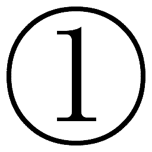
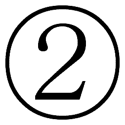
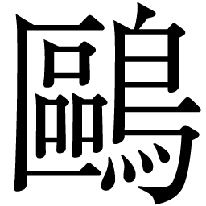

| 嫌われる勇気 | |
| 岸見 一郎 & 古賀 史健 | |
| (2013) | |
この本は縦書きでレイアウトされています。
また、ご覧になる機種により、表示の差が認められることがあります。
本作品を電子書籍版に収録するにあたり、一部の漢字が簡略体で表記されている場合があります。
かつて１０００年の都と謳われた古都のはずれに、世界はどこまでもシンプルであり、人は今日からでも幸せになれる、と説く哲学者が住んでいた。納得のいかない青年は、哲学者のもとを訪ね、その真意を問いただそうとしていた。悩み多き彼の目には、世界は矛盾に満ちた混沌としか映らず、ましてや幸福などありえなかった。
青年 では、あらためて質問します。世界はどこまでもシンプルである、というのが先生のご持論なのですね？
哲人 ええ。世界は信じがたいほどにシンプルなところですし、人生もまた同じです。
青年 理想論としてではなく、現実の話として、そう主張されているのですか？ つまり、わたしやあなたの人生に横たわる諸問題もまた、シンプルなものであると。
哲人 もちろんです。
青年 いいでしょう。議論に移る前に、今回の訪問についてお話しさせてください。まず、わたしがここを訪れた第一の理由は、先生と存分に、納得のいくまで議論を交わすことです。そして、できうることなら先生にご持論を撤回していただきたいと思っています。
哲人 ふふふ。
青年 というのも、風の噂に先生の評判を聞きましてね。なんでもこの地に一風変わった哲学者が住んでいて、看過しがたい理想論を唱えているらしい。曰く、人は変われる、世界はシンプルである、誰もが幸福になれる、だのと。わたしにとっては、いずれも到底受け入れられない議論です。
それで実際に自分の目で確かめて、少しでもおかしな点があればその誤りを正してさしあげよう、というわけです。......ご迷惑でしょうか？
哲人 いいえ、大いに歓迎します。わたし自身、あなたのような若者の声に耳を傾け、学びを多くしていきたいと願っていたところです。
青年 ありがとうございます。わたしは別に、先生を頭ごなしに否定しようとは思いません。まずは先生のご持論に乗っかった上で、その可能性から考えてみます。
世界はシンプルであり、人生もまたシンプルである。もしもこのテーゼに幾ばくかの真理が含まれるとするなら、それは子どもにとっての生でしょう。子どもには、勤労や納税といった目に見える義務がありません。親や社会に守られながら、毎日を自由気ままに生きています。未来はどこまでも続いていて、自分にはなんでもできるように思える。醜い現実を見なくてすむよう、その目を覆い隠されている。
なるほどたしかに、子どもの目に映る世界はシンプルな姿をしているのでしょう。
しかし、大人になるにつれ、世界はその本性を現していきます。「お前はその程度の人間なのだ」という現実を嫌というほど見せつけられ、人生に待ち受けていたはずのあらゆる可能性が〝不可能性〟へと反転する。幸福なロマンティシズムの季節は終わり、残酷なリアリズムの時代がやってくるわけです。
哲人 なるほど、おもしろい。
青年 それだけではありません。大人になれば複雑な人間関係に絡まれ、多くの責任を押しつけられる。仕事、家庭、あるいは社会的な役割、すべてがそうです。無論、子どものころは理解できなかった差別や戦争、格差といった社会の諸問題も見えてくるし、無視できなくなります。違いますか？
哲人 そうでしょう。続けてください。
青年 さて、宗教が力を持っていた時代であれば、まだ救いもあったでしょう。神の教えこそが真理であり、世界であり、すべてだった。その教えに従ってさえいれば、考えるべき課題も少なかった。しかし宗教は力を失い、いまや神への信仰も形骸化しています。頼れるものがなにもないまま、誰もが不安に打ち震え、猜疑心に凝り固まっている。みんな自分のことだけを考えて生きている。それが現代の社会というものです。
さあ先生、お答えください。あなたはこれだけの現実を前にしてもなお、世界はシンプルだとおっしゃるのですか？
哲人 わたしの答えは変わりません。世界はシンプルであり、人生もまたシンプルです。
青年 なぜです？ 誰がどう見ても矛盾に満ちた混沌ではありませんか！
哲人 それは「世界」が複雑なのではなく、ひとえに「あなた」が世界を複雑なものとしているのです。
青年 わたしが？
哲人 人は誰しも、客観的な世界に住んでいるのではなく、自らが意味づけをほどこした主観的な世界に住んでいます。あなたが見ている世界は、わたしが見ている世界とは違うし、およそ誰とも共有しえない世界でしょう。
青年 どういうことです？ 先生もわたしも同じ時代、同じこの国に生きて、同じものを見ているじゃありませんか。
哲人 そうですね、見たところあなたはお若いようですが、汲み上げたばかりの井戸水を飲んだことはありますか？
青年 井戸水？ まあ、ずいぶん昔のことですが、田舎にある祖母の家が井戸を引いていました。夏の暑い日に祖母の家で飲む冷たい井戸の水は、大きな楽しみでしたよ。
哲人 ご存じかもしれませんが、井戸水の温度は年間を通してほぼ18度で一定しています。これは誰が測定しても同じ、客観の数字です。しかし、夏に飲む井戸水は冷たく感じるし、冬に飲むと温かく感じます。温度計では常に18度を保っているのに、夏と冬では感じ方が違うわけです。
青年 つまり、環境の変化によって錯覚してしまう。
哲人 いえ、錯覚ではありません。そのときの「あなた」にとっては、井戸水の冷たさも温かさも、動かしがたい事実なのです。主観的な世界に住んでいるとは、そういうことです。われわれは「どう見ているか」という主観がすべてであり、自分の主観から逃れることはできません。
いま、あなたの目には世界が複雑怪奇な混沌として映っている。しかし、あなた自身が変われば、世界はシンプルな姿を取り戻します。問題は世界がどうであるかではなく、あなたがどうであるか、なのです。
青年 わたしがどうであるか？
哲人 そう。もしかするとあなたは、サングラス越しに世界を見ているのかもしれない。そこから見える世界が暗くなるのは当然です。だったら、暗い世界を嘆くのではなく、ただサングラスを外してしまえばいい。
そこに映る世界は強烈にまぶしく、思わずまぶたを閉じてしまうかもしれません。再びサングラスがほしくなるかもしれません。それでもなお、サングラスを外すことができるか。世界を直視することができるか。あなたにその〝勇気〟があるか、です。
青年 勇気？
哲人 ええ、これは〝勇気〟の問題です。
青年 ......いや、まあいいでしょう。反論は山ほどありますが、どうやらそれはあと回しにしたほうがよさそうだ。確認ですが、先生は「人は変われる」とおっしゃるのですね？ わたしが変われば、世界もシンプルな姿を取り戻す、と。
哲人 もちろん、人は変われます。のみならず、幸福になることもできます。
青年 いかなる人も、例外なく？
哲人 ひとりの例外もなく、いまこの瞬間から。
青年 ははっ、大きく出ましたね！ おもしろいじゃありませんか、先生。いますぐ論破してさしあげますよ！
哲人 わたしは逃げも隠れもしません。ゆっくりと語り合っていきましょう。あなたの立場は「人は変われない」なのですね？
青年 変われません。現に、わたし自身が変われずに苦しんでいます。
哲人 しかし同時に、あなたは変わりたいとも願っている。
青年 もちろんです。もしも変われるのなら、この人生をやり直せるのなら、わたしは喜んで先生に跪きましょう。もっとも、先生がわたしに跪くことになるやもしれませんが。
哲人 いいでしょう。おもしろいものです。あなたの姿を見ていると、学生時代の自分を思い出します。真理を探して哲学者のもとを訪ね歩いていた、血気盛んな若者だったころの自分の姿を。
青年 ええ、そうです。わたしは真理を探し求めています。人生の真理を。
哲人 これまでわたしは弟子というものをとったことがなく、その必要を感じたこともありませんでした。しかし、ギリシア哲学の徒となって以来、そして「もうひとつの哲学」と出逢って以来、心のどこかであなたのような若者が訪ねてくるのをずっと待っていたような気がします。
青年 もうひとつの哲学？ なんです、それは？
哲人 さあ、あちらの書斎にお入りなさい。長い夜になります。熱いコーヒーでも用意しましょう。
本書は、フロイト、ユングと並び「心理学の三大巨頭」と称される、アルフレッド・アドラーの思想（アドラー心理学）を、「青年と哲人の対話篇」という物語形式を用いてまとめた一冊です。
欧米で絶大な支持を誇るアドラー心理学は、「どうすれば人は幸せに生きることができるか」という哲学的な問いに、きわめてシンプルかつ具体的な〝答え〟を提示します。この世界のひとつの真理とも言うべき、アドラーの思想を知って、あなたのこれからの人生はどう変わるのか？ もしくは、なにも変わらないのか......。
さあ、青年と共に「扉」の先へと進みましょう------。

書斎に入ると青年は、猫背ぎみの姿勢のまま書斎に置かれた椅子に腰をかけた。彼はなぜ、これほどにも哲人の持論に拒絶反応を示すのか？ 理由は明白だった。青年は幼いころから自分に自信が持てず、出自や学歴、さらには容姿についても強い劣等感を持っていた。そのおかげだろう、過剰なほど他者の視線を気にしてしまうところがあった。そして他者の幸福を心から祝福することができず、いつも自己嫌悪に陥っていた。青年にとって、哲人の主張はすべてが絵空事でしかなかった。
知られざる「第三の巨頭」
青年 さきほど「もうひとつの哲学」という言葉を使われましたね。たしか先生のご専門はギリシア哲学だと聞いていましたが？
哲人 ええ、10代のころから一貫してギリシア哲学と共に生きてきました。ソクラテスからプラトン、アリストテレスといった知の巨人たちです。現在もプラトンの著作を翻訳中ですが、古代ギリシアの探究は生涯終わることがないでしょう。
青年 じゃあ、「もうひとつの哲学」とはなんなのです？
哲人 オーストリア出身の精神科医、アルフレッド・アドラーが20世紀初頭に創設した、まったく新しい心理学です。わが国では現在、その創始者の名をとって「アドラー心理学」と呼ぶことが一般的になっています。
青年 ほほう、それは意外だ。ギリシア哲学の専門家が、心理学ですか。
哲人 他の心理学がどんな姿であるのか、わたしはよくわかりません。しかし、アドラー心理学に関していえば、明らかにギリシア哲学と地続きにある思想であり、学問であるといえるでしょう。
青年 フロイトやユングの心理学なら、わたしにも多少の心得はありますよ。たしかにおもしろい研究分野です。
哲人 ええ、フロイトやユングの存在はわが国でも有名ですね。もともとアドラーは、フロイトが主宰するウィーン精神分析協会の中核メンバーとして活躍した人でした。しかし学説上の対立から袂を分かち、独自の理論に基づく「個人心理学」を提唱します。
青年 個人心理学？ また妙な名前ですね。要するにそのアドラーなる人物は、フロイトのお弟子さんなのですね？
哲人 いえ、弟子ではありません。よく誤解されるのですが、ここは明確に否定しておかねばならないところです。アドラーとフロイトは比較的年齢が近かったこともあり、対等な研究者として関係を結んでいました。この点、フロイトのことを父親のように慕っていたユングとは大きく異なります。また、わが国で心理学というとフロイトやユングの名前ばかりが取り上げられますが、世界的にはフロイト、ユングと並ぶ三大巨頭のひとりして、アドラーの名前もかならず言及されます。
青年 なるほど。それは勉強不足でした。
哲人 あなたがアドラーを知らなかったことは当然かもしれません。アドラー自身、こんなことをいっています。「わたしの名前を誰も思い出さなくなるときがくるかもしれない。アドラー派が存在したことすら、忘れられてしまうかもしれない」。しかし彼は、それでもかまわない、といいます。アドラー派の存在そのものが忘れられること、それは彼の思想が一学問分野から脱皮して、人々のコモンセンス（共通感覚）となることを意味するからです。
青年 学問のための学問ではない、ということですね？
哲人 ええ。たとえば、世界的ベストセラーの『人を動かす』や『道は開ける』で知られるデール・カーネギーも、アドラーのことを「一生を費やして人間とその潜在能力を研究した偉大な心理学者」だと紹介していますし、彼の著作にはアドラーの思想が色濃く反映されています。同じく、スティーブン・コヴィーの『７つの習慣』でもアドラーの思想に近い内容が語られています。つまりアドラー心理学は、堅苦しい学問ではなく、人間理解の真理、また到達点として受け入れられている。しかしながら、時代を１００年先行したともいわれるアドラーの思想には、まだまだ時代が追いつききれていません。彼の考えは、それほど先駆的なものでした。
青年 つまり先生は、ギリシア哲学だけでなく、そのアドラー心理学とやらの見地からも、ご持論を展開されると？
哲人 そういうことです。
青年 わかりました。もうひとつ、基本的な立ち位置についてお聞きしておきます。先生は哲学者なのですか？ それとも心理学者なのですか？
哲人 わたしは哲学者です。哲学に生きる人間です。そしてわたしにとってのアドラー心理学とは、ギリシア哲学と同一線上にある思想であり、哲学です。
青年 いいでしょう。では、さっそくはじめます。
なぜ「人は変われる」なのか
青年 最初に議論を整理しておきましょう。先生は「人は変われる」とおっしゃる。のみならず、誰しも幸福になることができる、と。
哲人 ええ、ひとりの例外もなく。
青年 幸福についての議論は後回しにして、まずは「変わること」について伺っていきましょう。人は誰しも、変わりたいと願っているものです。わたしだってそうですし、道ゆく誰に聞いても同じ答えが返ってくるでしょう。しかし、どうしてみんなが「変わりたい」と思っているのでしょうか？ 答えはひとつ、みんなが変われずにいるからです。もしも簡単に変われるのなら、わざわざ「変わりたい」などとは願いません。
人は変わりたくても変われない。だからこそ、変われることを説く新興宗教や怪しげな自己啓発セミナーにだまされる人が後を絶たない。違いますか？
哲人 では、逆に聞きましょう。あなたはなぜ、そうも頑なに人は変われないと主張されるのです？
青年 なぜって、つまり、こういうことですよ。わたしの友人に、もう何年も自室にこもりっきりになっている男がいます。彼は外に出たいと願っているし、できることなら仕事を持ちたいとも思っている。いまの自分を「変えたい」と思っているわけです。友人として保証しますが、彼はきわめて真面目で、社会に有用な男です。
しかし、彼は部屋の外に出るのが怖ろしい。一歩でも外に出ると動悸がはじまり、手足が震える。一種の神経症なのでしょう。変わりたくても、変われないのです。
哲人 あなたは彼が外に出られなくなった理由は、どこにあると思いますか？
青年 詳しいことはわかりません。ご両親との関係、あるいは学校や職場でいじめを受け、それがトラウマになっているのかもしれない。いや、もしかしたら逆に甘やかされて育ったところがあるのかもしれないな。まあ、彼の過去や家庭の事情までは窺い知ることはできません。
哲人 いずれにせよ、ご友人の「過去」に、トラウマなり何なりの「原因」となる出来事があった。その結果、彼は外に出られなくなったのだ。そうおっしゃるわけですね。
青年 もちろんですとも。結果の前には、原因がある。なんの不思議があります。
哲人 では仮に、外に出られなくなった原因が幼いころの家庭環境にあったとしましょう。両親から虐待を受けて育ち、愛情を知らないまま大人になっていった。だから他者と交わるのが怖いし、外に出られないのだ、と。ありえる話ですね？
青年 大いにありえる話です。ひどいトラウマになるでしょう。
哲人 そしてあなたは「あらゆる結果の前には、原因がある」とおっしゃる。要するに、現在のわたし（結果）は、過去の出来事（原因）によって規定されるのだ、と。その理解でよろしいですね？
青年 もちろん。
哲人 さて、もしもあなたのおっしゃるように、あまねく人の「現在」が、「過去」の出来事によって規定されるのだとすれば、おかしなことになりませんか？
だってそうでしょう、両親から虐待を受けて育った人は、すべてがご友人と同じ結果、すなわち引きこもりになっていないとつじつまが合わない。過去が現在を規定する、原因が結果を支配するとは、そういうことでしょう。
青年 ......なにをおっしゃりたいのです？
哲人 過去の原因にばかり目を向け、原因だけで物事を説明しようとすると、話はおのずと「決定論」に行き着きます。すなわち、われわれの現在、そして未来は、すべてが過去の出来事によって決定済みであり、動かしようのないものである、と。違いますか？
青年 では、過去など関係ないと？
哲人 ええ、それがアドラー心理学の立場です。
青年 なるほど、さっそく対立点が明確になってきました。しかしですよ先生、いまのお話だと、わたしの友人はなんの理由もなしに外に出られなくなったことになってしまいませんか？ なにせ先生は、過去の出来事など関係ない、とおっしゃるのですから。申し訳ありませんが、それはぜったいにありえない話です。彼が引きこもっている背景には、なにかしらの理由がある。でなければ、説明がつかないでしょう！
哲人 ええ、たしかに説明がつきません。そこでアドラー心理学では、過去の「原因」ではなく、いまの「目的」を考えます。
青年 いまの目的？
哲人 ご友人は「不安だから、外に出られない」のではありません。順番は逆で「外に出たくないから、不安という感情をつくり出している」と考えるのです。
青年 はっ？
哲人 つまり、ご友人には「外に出ない」という目的が先にあって、その目的を達成する手段として、不安や恐怖といった感情をこしらえているのです。アドラー心理学では、これを「目的論」と呼びます。
青年 ご冗談を！ 不安や恐怖をこしらえた、ですって？ じゃあ先生、あなたはわたしの友人が仮病を使っているとでもいうのですか？
哲人 仮病ではありません。ご友人がそこで感じている不安や恐怖は本物です。場合によっては割れるような頭痛に苦しめられたり、猛烈な腹痛に襲われることもあるでしょう。しかし、それらの症状もまた、「外に出ない」という目的を達成するためにつくり出されたものなのです。
青年 ありえません！ そんな議論はオカルトです！
哲人 違います。これは「原因論」と「目的論」の違いです。あなたのおっしゃる話は、すべてが原因論に基づいています。われわれは原因論の住人であり続けるかぎり、一歩も前に進めません。
トラウマは、存在しない
青年 そこまで強くおっしゃるのなら、しっかり説明していただきましょう。そもそも、「原因論」と「目的論」の違いとはどういうことです？
哲人 たとえば、あなたが風邪で高熱を出して医者に診てもらったとします。そして医者が「あなたが風邪をひいたのは、昨日薄着をして出かけたからです」と、風邪をひいた理由を教えてくれたとしましょう。さて、あなたはこれで満足できますか？
青年 できるはずもないでしょう。理由が薄着のせいであろうと、雨に降られたせいであろうと、そんなことはどうでもいい。問題は、いま高熱に苦しめられているという事実であり、症状です。医者であるならば、ちゃんと薬を処方するなり、注射を打つなり、なにかしらの専門的処置をとって、治療してもらわなければなりません。
哲人 ところが原因論に立脚する人々、たとえば一般的なカウンセラーや精神科医は、ただ「あなたが苦しんでいるのは、過去のここに原因がある」と指摘するだけ、また「だからあなたは悪くないのだ」と慰めるだけで終わってしまいます。いわゆるトラウマの議論などは、原因論の典型です。
青年 ちょっと待ってください！ つまり先生、あなたはトラウマの存在を否定されるのですか？
哲人 断固として否定します。
青年 なんと！ 先生は、いやアドラーは、心理学の大家なのでしょう!?
哲人 アドラー心理学では、トラウマを明確に否定します。ここは非常に新しく、画期的なところです。たしかにフロイト的なトラウマの議論は、興味深いものでしょう。心に負った傷（トラウマ）が、現在の不幸を引き起こしていると考える。人生を大きな「物語」としてとらえたとき、その因果律のわかりやすさ、ドラマチックな展開には心をとらえて放さない魅力があります。
しかし、アドラーはトラウマの議論を否定するなかで、こう語っています。「いかなる経験も、それ自体では成功の原因でも失敗の原因でもない。われわれは自分の経験によるショック------いわゆるトラウマ------に苦しむのではなく、経験の中から目的にかなうものを見つけ出す。自分の経験によって決定されるのではなく、経験に与える意味によって自らを決定するのである」と。
青年 目的にかなうものを見つけ出す？
哲人 そのとおりです。アドラーが「経験それ自体」ではなく、「経験に与える意味」によって自らを決定する、と語っているところに注目してください。たとえば大きな災害に見舞われたとか、幼いころに虐待を受けたといった出来事が、人格形成に及ぼす影響がゼロだとはいいません。影響は強くあります。しかし大切なのは、それによってなにかが決定されるわけではない、ということです。われわれは過去の経験に「どのような意味を与えるか」によって、自らの生を決定している。人生とは誰かに与えられるものではなく、自ら選択するものであり、自分がどう生きるかを選ぶのは自分なのです。
青年 じゃあ、先生はわたしの友人が好きこのんで自室に閉じこもっているとでも？ 自ら閉じこもることを選んだとでも？ 冗談じゃありません。自分で選んだのではなく、選ばされたのです。いまの自分を、選択せざるをえなかったのです！
哲人 違います。仮にご友人が「自分は両親に虐待を受けたから、社会に適合できないのだ」と考えているのだとすれば、それは彼のなかにそう考えたい「目的」があるのです。
青年 どんな目的です？
哲人 直近のものとしては「外に出ない」という目的があるでしょう。外に出ないために、不安や恐怖をつくり出している。
青年 どうして外に出たくないのですか？ 問題はそこでしょう！
哲人 では、あなたが親だった場合を考えてください。もしも自分の子どもが部屋に引きこもっていたら、あなたはどう思いますか？
青年 それはもちろん心配しますよ。どうすれば社会復帰してくれるのか、どうすれば元気を取り戻してくれるのか、そして自分の子育ては間違っていたのか。真剣に思い悩むだろうし、社会復帰に向けてありとあらゆる努力を試みるでしょう。
哲人 問題はそこです。
青年 どこです？
哲人 外に出ることなく、ずっと自室に引きこもっていれば、親が心配する。親の注目を一身に集めることができる。まるで腫れ物に触るように、丁重に扱ってくれる。
他方、家から一歩でも外に出てしまうと、誰からも注目されない「その他大勢」になってしまいます。見知らぬ人々に囲まれ、凡庸なるわたし、あるいは他者より見劣りしたわたしになってしまう。そして誰もわたしを大切に扱ってくれなくなる。......これなどは、引きこもりの人によくある話です。
青年 じゃあ先生の理屈に従うなら、わたしの友人は「目的」を成就しており、いまの状態に満足している、となるのですか？
哲人 不満はあるでしょうし、幸福というわけではないでしょう。しかし、彼が「目的」に沿った行動をとっていることは間違いありません。彼にかぎった話ではなく、われわれはみな、なにかしらの「目的」に沿って生きている。それが目的論です。
青年 いやいや、到底納得できませんね。そもそもわたしの友人は......。
哲人 まあ、このままご友人のお話を続けても議論は平行線でしょう。欠席裁判になるのはよくありません。別の事例で考えましょう。
青年 では、こんな例はいかがですか？ ちょうど昨日経験した、わたし自身の話です。
哲人 ほう、お聞かせください。
人は怒りを捏造する
青年 昨日の午後、喫茶店で本を読んでいたとき、通りかかったウェイターがわたしの上着にコーヒーをこぼしてしまいました。買ったばかりの、いわゆる一張羅です。カッとなったわたしは、思わず大声で怒鳴りつけました。普段のわたしは、公の場で大声を出すことなどありません。しかし、昨日ばかりは店中に響きわたるくらいの大声で怒鳴り散らしてしまった。怒りに駆られ、我を忘れてしまったわけです。さあどうです、ここにも「目的」とやらが入り込む余地はありますか？ これはどう考えても「原因」ありきの行動でしょう？
哲人 つまり、あなたは怒りの感情に突き動かされて、怒鳴ってしまった。普段は温厚な性格なのに、怒りの感情に抗することができなかった。自分にはどうすることもできない不可抗力だった。そうおっしゃるわけですね？
青年 ええ。あまりに突発的な出来事でしたからね。考えるよりも先に声が出てしまったのです。
哲人 では仮に、昨日のあなたが偶然刃物を持っていたとして、カッとなったはずみに相手を刺してしまったとします。その場合も「自分にはどうすることもできなかった、これは不可抗力なのだ」と弁明できますか？
青年 そ、それは極論です！
哲人 極論ではありません。あなたの理屈を突き進めると、怒りに駆られた犯行はすべてが「怒り」のせいであって、当人の責任ではなくなってしまいます。なにしろ、人は感情に抗うことができないとおっしゃるのですから。
青年 じゃあ先生はわたしの怒りを、どう説明するおつもりです？
哲人 簡単です。あなたは「怒りに駆られて、大声を出した」のではない。ひとえに「大声を出すために、怒った」のです。つまり、大声を出すという目的をかなえるために、怒りの感情をつくりあげたのです。
青年 なんですって？
哲人 あなたには大声を出す、という目的が先にあった。すなわち、大声を出すことによって、ミスを犯したウェイターを屈服させ、自分のいうことをきかせたかった。その手段として、怒りという感情を捏造したのです。
青年 捏造した？ 冗談じゃありません！
哲人 では、どうして大声をあげたのです？
青年 だからそれは、カッとしてしまったからですよ。
哲人 違います。わざわざ大声をあげなくても、言葉で説明すればウェイターは丁重にお詫びもしたでしょうし、きれいな布巾で拭き取るなど、しかるべき措置もとったはずです。あるいはクリーニングの手配さえしてくれたかもしれない。しかも、あなたは彼がそうするであろうことを心のどこかで予期していた。
にもかかわらず、あなたは大声をあげたのです。言葉で説明する手順を面倒に感じ、無抵抗な相手を、より安直な手段で屈服させようとした。その道具として、怒りの感情を使ったのです。
青年 ......いや、騙されません、わたしは騙されませんよ！ 相手を屈服させるために怒りの感情をこしらえた？ 断言しますが、そんなことを考える余裕など一秒たりともありませんでした。わたしは考えをめぐらせてから怒ったのではありません。怒りとは、もっと突発的な感情です！
哲人 そう、怒りは一瞬の感情です。こんな話があります。あるとき、母親と娘が大声をあげて口論していたそうです。すると突然、電話のベルが鳴りました。「もしもし？」。慌てて受話器をとった母親の声には、まだ怒りの感情がこもっています。ところが電話の主は、娘が通う学校の担任教師でした。そうと気づいた途端、母親の声色は丁寧なものに変化します。そのままよそ行きの声で５分ほど会話を交わし、受話器を置きました。と同時に、再び血相を変えて娘に怒鳴りはじめたのです。
青年 別に、よくある話でしょう。
哲人 わかりませんか？ 要するに、怒りとは出し入れ可能な「道具」なのです。電話がかかってくれば瞬時に引っ込めることもできるし、電話を切れば再び持ち出すこともできる。この母親は怒りを抑えきれずに怒鳴っているのではありません。ただ大声で娘を威圧するため、それによって自分の主張を押し通すために、怒りの感情を使っているのです。
青年 怒りは、目的を達成するための手段だと？
哲人 目的論とは、そういうことです。
青年 ......いやはや先生、あなたは優しそうな仮面を被って、相当に怖ろしいニヒリストですね！ 怒りの話にしろ、引きこもった友人の話にしろ、すべての洞察が人間への不信感に充ち満ちている！
過去に支配されない生き方
哲人 どこがニヒリズムなのでしょう？
青年 考えてもごらんなさい。要するに先生は、人間の感情を否定されているわけです。感情などただの道具にすぎない、目的を達成するための手段にすぎないのだ、と。しかし、いいですか先生。感情を否定すること、それはわれわれの人間性をも否定せんとする議論です！ われわれは感情があるからこそ、喜怒哀楽に揺さぶられるからこそ、人間なのです！ もしも感情を否定されるのなら、人間は出来損ないの機械になってしまう。これをニヒリズムと呼ばずして、なんと呼びますか！
哲人 わたしは感情の存在を否定しているのではありません。誰にでも感情はあります。当たり前のことです。しかし、もしも「人は感情に抗えない存在である」とおっしゃるのでしたら、そこは明確に否定します。われわれは感情に支配されて動くのではありません。そして、この「人は感情に支配されない」という意味において、さらには「過去にも支配されない」という意味において、アドラー心理学はニヒリズムの対極にある思想であり、哲学なのです。
青年 感情に支配されず、過去にも支配されない？
哲人 たとえばある人の過去に、両親の離婚という出来事があったとしましょう。これは18度の井戸水と同じ、客観の話ですね？ 一方、その出来事を冷たいと感じるか温かいと感じるか。これは「いま」の、そして主観の話です。過去にどんな出来事があったとしても、そこにどんな意味づけをほどこすかによって、現在のあり方は決まってくるのです。
青年 問題は「なにがあったか」ではなく、「どう解釈したか」であると？
哲人 まさに。われわれはタイムマシンで過去にさかのぼることなどできませんし、時計の針は巻き戻せません。もしもあなたが原因論の住人になってしまえば、過去に縛られたまま、この先ずっと幸せになることができなくなります。
青年 そうですよ！ 過去は変えられないからこそ、この生は苦しいのです！
哲人 苦しいだけではありません。過去がすべてを決定し、過去が変えられないのであれば、今日を生きるわれわれは人生に対してなんら有効な手立てを打てなくなってしまう。その結果、どうなりますか？ 世界に絶望し、人生をあきらめるようなニヒリズムやペシミズムに行き着くことになるでしょう。トラウマの議論に代表されるフロイト的な原因論とは、かたちを変えた決定論であり、ニヒリズムの入口なのです。あなたはそんな価値観をお認めになりますか？
青年 そりゃあ、わたしだって認めたくはありません。認めたくはありませんが、過去の力は強いですよ！
哲人 可能性を考えるのです。もしも人間が変われる存在だとするなら、原因論に基づく価値観などありえず、おのずと目的論に立脚せざるをえないと。
青年 あくまでも、「人は変われる」を前提に考えよ、とおっしゃるのですね？
哲人 もちろんです。われわれの自由意志を否定し、人間を機械であるかのように見なしているのは、むしろフロイト的な原因論なのだと理解してください。
青年は哲人の書斎をぐるりと見渡した。壁一面が本棚に覆われ、木製の小さな机の上には書きかけの原稿らしきものと万年筆が置かれている。人は過去の原因に突き動かされるのではなく、自らの定めた目的に向かって動いていく。それが哲人の主張だ。彼の唱える「目的論」は、真っ当な心理学の因果律を根底から覆す考えであり、青年としては到底受け入れることができなかった。さて、どこから切り崩していくべきか。青年は大きく息を吸い込んだ。
ソクラテスとアドラー
青年 わかりました。では、別の友人の話をしましょう。わたしの友人に、いつも明るくて初対面の誰とでも屈託なく話せる、Ｙという男がいます。みんなから愛され、周囲の人々を一瞬で笑顔にしてしまう、ひまわりのような男です。一方、わたしはどうにも人付き合いが苦手ですし、いろいろと屈折したところのある人間です。さて、先生はアドラーの目的論によって「人は変われる」と主張されるわけですね？
哲人 ええ。わたしもあなたも、人は誰でも変われます。
青年 では先生、わたしはＹのような人間になれるとお考えですか？ 無論、わたしはＹのようになりたいと、心から願っているのですが。
哲人 この段階で申し上げるとするなら、およそ無理な相談でしょう。
青年 ははっ、ついに尻尾を出しましたね！ ご持論を撤回されるわけですか？
哲人 いえ、そうではありません。残念ながらあなたは、まだアドラー心理学をほとんど理解されていない。変わることの第一歩は、知ることにあります。
青年 だったら、アドラー心理学のなんたるかを理解しさえすれば、わたしもＹのような人間になれると？
哲人 なぜそう答えを急ぐのです？ 答えとは、誰かに教えてもらうものではなく、自らの手で導き出していくべきものです。他者から与えられた答えはしょせん対症療法にすぎず、なんの価値もありません。
たとえばソクラテスは、自身の手による著作は１冊も残しませんでした。彼はひたすらアテナイの人々、特に若者たちと路上での議論を重ね、その哲学を著作という形で後世に残したのは弟子のプラトンです。そしてアドラーもまた、著述活動にほとんど関心を示さず、ウィーンのカフェで人々と対話したり、小さなディスカッショングループで議論することを好んだ人物でした。決して肘掛け椅子に座る知識人ではなかったのです。
青年 ソクラテスもアドラーも、対話を通じて気づきを与えていたと？
哲人 そのとおりです。あなたの抱いているさまざまな疑問は、すべてがこの対話のうちに解消されていくでしょう。そしてあなたは変わっていくでしょう。わたしの言葉によってではなく、あなた自身の手によって。わたしは対話を通じて答えを導き出していく、その貴重なプロセスを奪いたくないのです。
青年 つまり、ソクラテスやアドラーが交わしてきたような対話を、われわれふたりで再現しようというわけですね？ この小さな書斎で。
哲人 ご不満ですか？
青年 なにが不満なものですか、望むところです！ 先生がご持論を撤回されるまで、あるいはわたしが跪くまで、いくらでも続けましょう。
あなたは「このまま」でいいのか
哲人 では議論を戻しましょう。あなたはＹさんのように、もっと明るい人間になりたいわけですね？
青年 しかし先生は、無理な相談だと一蹴された。まあ、これは実際そのとおりでしょう。先生を困らせたくて聞いてみただけで、あんな人間になれっこないことくらい、自分でもわかっています。
哲人 なぜそう思われるのですか？
青年 簡単です。それが性格の違い、もっといえば気質の違いだからです。
哲人 ほほう。
青年 たとえば先生は、これだけたくさんの本に囲まれて生きている。新しい本を読んで、新しい知識を仕入れる。いわば、知識が積み上げられていくわけです。読めば読むほど知識の量は増えていく。新しい価値観を手に入れ、自分が変わるような気がする。
しかしですね、先生。残念ながらどんなに知識を積み重ねたところで、その土台にある気質や性格は変わらないんですよ！ 土台が斜めに傾いていたら、いかなる知識も役に立たない。そう、積み上げたはずの知識もガラガラと崩れ落ち、気がつけば元通りの自分になっていくんです！ アドラーの思想も同じです。わたしが彼についてどれだけの知識を積み重ねようと、わたしの性格までは変わらない。知識は知識として積み重ねられ、やがて打ち捨てられるのです！
哲人 では、こう聞きましょう。そもそもあなたは、どうしてＹさんのような人間になりたいと思うのですか？ Ｙさんであれ、あるいは他の誰かであれ、あなたは別人になりたがっているわけです。その「目的」とはなんでしょうか？
青年 また「目的」の話ですか。先ほども申し上げたでしょう、わたしはＹのことが好きだし、もしも彼のようになれたら幸せだと思うからですよ。
哲人 彼のようになれたら幸せだと思う。ということはつまり、あなたはいま幸せではないわけですね？
青年 なっ......!!
哲人 あなたはいま、幸せを実感できずにいる。なぜなら、あなたは自分を愛することができていない。そして自分を愛するための手段として、「別人への生まれ変わり」を望んでいる。Ｙさんのようになって、いまの自分を捨てようとしている。違いますか？
青年 ......ええ、そのとおりですよ！ 認めましょう、わたしは自分が嫌いです！ いま、こうして先生と時代遅れの哲学談義に戯れている自分、そうせざるをえない自分を含めて、大っ嫌いですね！
哲人 かまいません。自分のことを好きかと聞かれて、胸を張って「好きだ」といえる人はなかなかいないものです。
青年 先生はいかがです？ 自分のことがお好きですか？
哲人 少なくとも別人になりたいとは思いませんし、自分が「このわたし」であることを受け入れています。
青年 自分が「このわたし」であることを？
哲人 いいですか、どれほどＹさんになりたくても、Ｙさんとして生まれ変わることはできません。あなたはＹさんではない。あなたは「あなた」であっていいのです。
しかし、「このままのあなた」でいていいのかというと、それは違います。もしも幸せを実感できずにいるのであれば、「このまま」でいいはずがない。立ち止まることなく、一歩前に踏み出さないといけません。
青年 手厳しいお話ですが、たしかにそうです。このままのわたしでいいはずがない。前に進まなければならない。
哲人 再びアドラーの言葉を引用しましょう。彼はいいます。「大切なのはなにが与えられているかではなく、与えられたものをどう使うかである」と。あなたがＹさんなり、他の誰かになりたがっているのは、ひとえに「なにが与えられているか」にばかり注目しているからです。そうではなく、「与えられたものをどう使うか」に注目するのです。
あなたの不幸は、あなた自身が「選んだ」もの
青年 いや、いや、それは無理です。
哲人 なぜ無理なのです？
青年 なぜって、裕福で優しい両親のもとに生まれる人間もいれば、貧しくて底意地の悪い両親のもとに生まれる人間もいる。それが世の中ってものだからですよ。さらに、こんな話はしたくありませんが、この世界は平等ではなく、人種や国籍、民族の違いだって、いまだ歴然と横たわっているわけです。「なにが与えられているか」に注目するのは当たり前でしょう！ 先生、あなたのお話は机上の学説ばかりで、現実の世界を無視しておられます！
哲人 現実を無視しているのはあなたです。「なにが与えられているか」に執着して、現実が変わりますか？ われわれは交換可能な機械ではありません。われわれに必要なのは交換ではなく、更新なのです。
青年 わたしにとっては交換も更新も同じです！ 先生は肝心なところで逃げ回っておられる。いいですか、生まれながらの不幸は存在する。まずはそこを認めてください。
哲人 認めません。
青年 なぜです!?
哲人 たとえばいま、あなたは幸せを実感できずにいるのでしょう。生きづらいと感じることもあるし、いっそ別人に生まれ変わりたいとさえ願っている。しかし、いまのあなたが不幸なのは自らの手で「不幸であること」を選んだからなのです。不幸の星の下に生まれたからではありません。
青年 不幸であることを、自らの手で選んだ？ そんな話、どう信じろと!?
哲人 なんら突飛な話ではありません。古代ギリシアの時代からいわれていることです。あなたは「誰ひとりとして悪を欲する人はいない」という言葉をご存じですか？ 一般に、ソクラテスのパラドクスとして知られる命題ですが。
青年 悪を欲する人など、山のようにいるじゃありませんか。強盗や殺人犯はもちろん、政治家や役人の不正だってそうです。むしろ、悪を欲さない清廉潔白な善人を探すほうがむずかしいくらいでしょう。
哲人 たしかに、行為としての悪は、山のように存在します。しかし、いかなる犯罪者であれ、純粋に悪事としての悪事を働こうと思って犯行に手を染める者などいません。すべての犯罪者には、犯行に手を染めるだけの内的な「しかるべき理由」があります。たとえば、金銭絡みの怨恨によって殺人を犯したとする。これだって当人にとっては「しかるべき理由」あってのことであり、言葉を変えるなら「善」の遂行なのです。もちろん道徳的な意味での善ではなく、「自分のためになる」という意味での善、ですが。
青年 自分のためになる？
哲人 ギリシア語の「善」（agathon）という言葉には、道徳的な意味合いはありません。ただ「ためになる」という意味です。一方、「悪」（kakon）という言葉には、「ためにならない」という意味があります。この世界には、不正や犯罪などさまざまな悪行がはびこっています。しかし、純粋な意味での「悪＝ためにならないこと」を欲する者など、ひとりもいないのです。
青年 ......それがわたしとどう関係するのです？
哲人 あなたは人生のどこかの段階で、「不幸であること」を選ばれた。それは、あなたが不幸な境遇に生まれたからでも、不幸な状況に陥ったからでもありません。「不幸であること」がご自身にとっての「善」だと判断した、ということなのです。
青年 なぜ！ なんのために！
哲人 あなたにとっての「しかるべき理由」がなんだったのか。なぜ自ら「不幸であること」を選んだのか。その詳細までは、わたしにもわかりません。おそらく、この対話のなかで明らかになっていくでしょう。
青年 ......先生、あなたはわたしをペテンにかけようとしている！ 認めるものですか、そんな哲学、わたしはぜったいに認めませんよ！
青年は思わず椅子から立ち上がり、目の前の哲人を睨みつけた。この不幸なる生は、わたしが自発的に選んだものだと？ それがわたしにとっての「善」だっただと？ なんという暴論だろうか！ そもそもなぜ、ここまでわたしを愚弄するのか。わたしがいったいなにをしたというのだ。是が非でも論破してやる。わが足元に跪かせてやる。青年の顔はみるみる紅潮していった。
人は常に「変わらない」という決心をしている
哲人 おかけなさい。このままでは話が噛み合わないのも無理はありません。ここで簡単に、議論のベースとなる部分、つまりアドラー心理学が人間をどのように理解しているかについて説明しておきましょう。
青年 手短に！ 手短にお願いします！
哲人 先ほどあなたは「人の性格や気質は変えられない」といいました。一方、アドラー心理学では、性格や気質のことを「ライフスタイル」という言葉で説明します。
青年 ライフスタイル？
哲人 ええ。人生における、思考や行動の傾向です。
青年 思考や行動の、傾向？
哲人 その人が「世界」をどう見ているか。また「自分」のことをどう見ているか。これらの「意味づけのあり方」を集約させた概念が、ライフスタイルなのだと考えてください。狭義的には性格とすることもできますし、もっと広く、その人の世界観や人生観まで含んだ言葉になります。
青年 世界観とは？
哲人 たとえば「わたしは悲観的な性格だ」と思い悩んでいる人がいたとしましょう。その言葉を「わたしは悲観的な〝世界観〟を持っている」と言い換えてみる。問題は自分の性格ではなく、自分の持っている世界観なのだと考える。性格という言葉には、変えられないものだというニュアンスがあるかもしれません。しかし、世界観であれば変容させていくことも可能でしょう。
青年 ううむ、少しむずかしいな。そのライフスタイルとは、つまり「生き方」に近い話なのでしょうか？
哲人 そういう表現もありえるでしょう。もう少し正確にいうなら「人生のあり方」という意味ですね。きっとあなたは、気質や性格は自分の意思とは無関係に備わるものと考えているはずです。しかしアドラー心理学では、ライフスタイルは自ら選びとるものだと考えます。
青年 自ら選びとるもの？
哲人 ええ。あなたはあなたのライフスタイルを、自ら選んだのです。
青年 つまり、わたしは「不幸であること」を選んだばかりでなく、このひねくれた性格までも自らの手で選んだのだと？
哲人 もちろんです。
青年 ははっ、いくらなんでもその議論には無理がありますよ。わたしは気がついたときには、こんな性格になっていました。選んだ覚えなど、まったくありません。先生だってそうでしょう？ 自分の性格を自在に選択できるだなんて、それこそロボットみたいな話じゃありませんか！
哲人 もちろん、意識的に「こんなわたし」を選んだわけではないでしょう。最初の選択は無意識だったかもしれません。しかも、その選択にあたっては、あなたが再三おっしゃるような外的要因、すなわち人種や国籍、文化、また家庭環境といったものも大いに影響しています。それでもなお、「こんなわたし」を選んだのはあなたなのです。
青年 意味がわからない。いったい、どこで選んだというのです？
哲人 およそ10歳前後だというのが、アドラー心理学の見解です。
青年 じゃあ百歩譲って、いや二百歩譲って、10歳のわたしが無意識ながらもそのライフスタイルとやらを自分で選んだのだとしましょう。けれど、いったいそれがどうしたというのです？ 言葉が性格であれ、気質であれ、あるいはライフスタイルであれ、わたしはすでに「こんなわたし」になってしまったのです。事態はなにも変わらないじゃありませんか。
哲人 そんなことはありません。もしもライフスタイルが先天的に与えられたものではなく、自分で選んだものであるのなら、再び自分で選びなおすことも可能なはずです。
青年 選びなおす？
哲人 あなたはこれまで自らのライフスタイルを知らなかったかもしれない。そしてライフスタイルという概念さえ、知らなかったかもしれない。もちろん、自らの生まれを選ぶことは誰にもできません。この国に生まれること、この時代に生まれること、この両親のもとに生まれること、すべて自分で選んだものではない。しかもそれらは、かなり大きな影響力を持っている。不満もあるでしょうし、他者を見て「あんな境遇に生まれたかった」と思う気持ちも出てくるでしょう。
でも、そこで終わってはいけないのです。問題は過去ではなく、現在の「ここ」にあります。いま、あなたはここでライフスタイルを知ってしまった。であれば、この先どうするのかはあなたの責任なのです。これまでどおりのライフスタイルを選び続けることも、新しいライフスタイルを選びなおすことも、すべてはあなたの一存にかかっています。
青年 では、どうやって選びなおせというのです？ 「お前はそのライフスタイルを自分で選んだのだから、いますぐ選びなおせ」といわれたところで、即座に変われるわけではないでしょう！
哲人 いえ、あなたは変われないのではありません。人はいつでも、どんな環境に置かれていても変われます。あなたが変われないでいるのは、自らに対して「変わらない」という決心を下しているからなのです。
青年 なんですって？
哲人 人は常に自らのライフスタイルを選択しています。いま、こうして膝を突き合わせて話しているこの瞬間にも、選択しています。あなたはご自分のことを、不幸な人間だとおっしゃる。いますぐ変わりたいとおっしゃる。別人に生まれ変わりたいとさえ、訴えている。にもかかわらず変われないでいるのは、なぜなのか？ それはあなたがご自分のライフスタイルを変えないでおこうと、不断の決心をしているからなのです。
青年 いやいや、まったく筋の通らない話じゃありませんか。わたしは変わりたい。これは嘘偽りのない本心です。なのにどうして変わらない決心をするのです!?
哲人 少しくらい不便で不自由なところがあっても、いまのライフスタイルのほうが使いやすく、そのまま変えずにいるほうが楽だと思っているのでしょう。
もしも「このままのわたし」であり続けていれば、目の前の出来事にどう対処すればいいか、そしてその結果どんなことが起こるのか、経験から推測できます。いわば、乗り慣れた車を運転しているような状態です。多少のガタがきていても、織り込み済みで乗りこなすことができるわけです。
一方、新しいライフスタイルを選んでしまったら、新しい自分になにが起きるかもわからないし、目の前の出来事にどう対処すればいいかもわかりません。未来が見通しづらくなるし、不安だらけの生を送ることになる。もっと苦しく、もっと不幸な生が待っているのかもしれない。つまり人は、いろいろと不満はあったとしても、「このままのわたし」でいることのほうが楽であり、安心なのです。
青年 変わりたいけど、変わるのが怖ろしいと？
哲人 ライフスタイルを変えようとするとき、われわれは大きな〝勇気〟を試されます。変わることで生まれる「不安」と、変わらないことでつきまとう「不満」。きっとあなたは後者を選択されたのでしょう。
青年 ......いま、また〝勇気〟という言葉を使われましたね。
哲人 ええ。アドラー心理学は、勇気の心理学です。あなたが不幸なのは、過去や環境のせいではありません。ましてや能力が足りないのでもない。あなたには、ただ〝勇気〟が足りない。いうなれば「幸せになる勇気」が足りていないのです。
あなたの人生は「いま、ここ」で決まる
青年 幸せになる勇気......。
哲人 もっと説明が必要ですか？
青年 いや、待ってください。なんだか頭が混乱してきましたよ。まず先生は、世界はシンプルなところだとおっしゃる。世界が複雑に見えるのは、「わたし」の主観がそうさせているのだと。人生が複雑なのではなく、「わたし」が人生を複雑にし、それゆえ幸福に生きることを困難にしているのだと。
そしてフロイト的な原因論ではなく、目的論に立脚すべきだともいいましたね。過去に原因を求めてはいけない、トラウマを否定せよ、人は過去の原因に突き動かされる存在ではなく、なにかしらの目的を達成するために動いているのだと。
哲人 ええ。
青年 さらには目的論の大前提として「人は変われる」とおっしゃる。人は常に自らのライフスタイルを選択していると。
哲人 そのとおりです。
青年 わたしが変われずにいるのは、他ならぬわたし自身が「変わらない」という決心をくり返しているからだ。わたしには新しいライフスタイルを選ぶ勇気が足りていない。つまり、「幸せになる勇気」が足りていない。だからこそわたしは不幸なのだ。以上の理解で間違っていませんね？
哲人 間違っていません。
青年 そうなると問題は「どうすればライフスタイルを変えることができるか」という具体的な方策です。そこはまだ説明されていません。
哲人 たしかに。あなたがいま、いちばん最初にやるべきことはなにか。それは「いまのライフスタイルをやめる」という決心です。
たとえば先ほど、あなたは「もしもＹのような人間になれたら、幸せになれる」といいました。そうやって「もしも何々だったら」と可能性のなかに生きているうちは、変わることなどできません。なぜなら、あなたは変わらない自分への言い訳として「もしもＹのような人間になれたら」といっているのです。
青年 変わらない自分への言い訳？
哲人 わたしの若い友人に、小説家になることを夢見ながら、なかなか作品を書き上げられない人がいます。彼によると、仕事が忙しくて小説を書く時間もままならない、だから書き上げられないし、賞の応募に至らないのだそうです。
しかし、はたしてそうでしょうか。実際のところは、応募しないことによって「やればできる」という可能性を残しておきたいのです。人の評価にさらされたくないし、ましてや駄作を書き上げて落選する、という現実に直面したくない。時間さえあればできる、環境さえ整えば書ける、自分にはその才能があるのだ、という可能性のなかに生きていたいのです。おそらく彼は、あと５年10年もすれば「もう若くないから」とか「家庭もできたから」と別の言い訳を使いはじめるでしょう。
青年 ......彼の気持ち、わたしには痛いほどよくわかりますよ。
哲人 賞に応募して、落選するならすればいいのです。そうすればもっと成長できるかもしれないし、あるいは別の道に進むべきだと理解するかもしれない。いずれにせよ、前に進むことができます。いまのライフスタイルを変えるとは、そういうことです。応募しないままでは、どこにも進めません。
青年 夢は砕け散るかもしれませんがね！
哲人 でも、どうでしょう。シンプルな課題------やるべきこと------を前にしながら「やれない理由」をあれこれとひねり出し続けるのは、苦しい生き方だと思いませんか？ 小説家を夢見る彼の場合、まさしく「わたし」が人生を複雑にし、幸福に生きることを困難にしているわけです。
青年 ......厳しい。先生の哲学は、あまりにも厳しい！
哲人 たしかに、劇薬かもしれません。
青年 劇薬ですとも！
哲人 ですが、世界や自分への意味づけ（ライフスタイル）を変えれば、世界との関わり方、そして行動までもが変わらざるをえなくなります。この「変わらざるをえない」というところを忘れないでください。あなたは「あなた」のまま、ただライフスタイルを選びなおせばいい。厳しい話かもしれませんが、シンプルです。
青年 そうじゃない、わたしのいっている厳しさは違います！ 先生のお話を聞いていると、「トラウマなど存在しないし、環境も関係ない。なにもかもが身から出た錆なのであって、お前の不幸はすべてお前のせいだ」と、これまでの自分を断罪されている気分になってくるんですよ！
哲人 いえ、断罪しているのではありません。むしろ、アドラーの目的論は「これまでの人生になにがあったとしても、今後の人生をどう生きるかについてなんの影響もない」といっているのです。自分の人生を決めるのは、「いま、ここ」に生きるあなたなのだ、と。
青年 わたしの人生は、いま、ここで決まると？
哲人 ええ、過去など存在しないのですから。
青年 ......いいでしょう。先生、わたしはあなたのご持論に１００パーセント同意しているわけではありません。納得できないところ、反論したいところはたくさんあります。しかし同時に、一考に値するお話ではありますし、もっとアドラー心理学を学びたくなってきたのも事実です。今晩はこのあたりで退散しますが、来週にでもまたおじゃまさせてください。そうでもしないと、もう頭がパンクしそうです。
哲人 けっこうです。ひとりで考える時間も必要でしょう。わたしはいつでもこの部屋におりますので、あなたの好きなときに訪ねてくださればいい。楽しい時間をありがとう。また語り合いましょう。
青年 最後に、もうひとつ。本日はあまりに刺激的な議論が続いたため、幾分失礼な言葉を口にしてしまったように思います。申し訳ございませんでした。
哲人 気にすることはありません。プラトンの対話篇をお読みになるといいでしょう。ソクラテスの弟子たちは、驚くほどあけすけな言葉と態度でソクラテスと語り合っています。本来、それが対話のあるべき姿なのです。
青年は律儀に約束を守り、きっかり一週間後に哲学者の書斎を訪れた。ほんとうは二日後、三日後にでも押しかけたい気分だった。熟考のうちに、青年の疑念は確信に変わっていた。すなわち、目的論など詭弁であり、トラウマは確実に存在する。人は過去を忘れることなどできないし、過去から解放されることもできない。今日こそはあの風変わりな哲学者を完膚なきまでに論破し、すべてに決着をつけてやる。
なぜ自分のことが嫌いなのか
青年 先生、あれから頭を冷やしていろいろ考えたのですがね、やっぱりわたしは先生のご持論に同意することはできませんよ。
哲人 ほう、どこに疑問を感じるのですか？
青年 たとえば先日、わたしは自分のことが嫌いだと認めました。どうやっても短所しか見当たらず、好きになる理由が思いつかない。でも、当然ながらわたしだって自分のことを好きになりたいのです。
先生はなんでも「目的」で説明しようとされますが、いったいなんの目的があって、つまりなんの利益があって、わたしは自分を嫌っているのです？ 自分を嫌ったところで、得るものなどひとつもないでしょう。
哲人 なるほど。あなたは、自分には長所などないと感じている。短所しかないと感じている。事実がどうであれ、そう感じている。要するに自己評価が著しく低いわけです。問題は、なぜそれほど卑屈に感じるのか、どうしてご自分のことを低く見積もっているのか、です。
青年 事実としてわたしに長所がないからですよ。
哲人 違います。短所ばかりが目についてしまうのは、あなたが「自分を好きにならないでおこう」と、決心しているからです。自分を好きにならないという目的を達成するために、長所を見ないで短所だけに注目している。まずはその点を理解してください。
青年 自分を好きにならないでおこうと決心している？
哲人 ええ。自分を好きにならないことが、あなたにとっての「善」なのです。
青年 いったいなぜ？ なんのために？
哲人 ここはご自身でお考えになられたほうがいいかもしれません。あなたはご自分にどんな短所があるとお考えですか？
青年 もう先生もお気づきでしょう。まず挙げられるのは、この性格ですよ。自分に自信が持てず、すべてに対して悲観的になっている。それに自意識過剰なのでしょう、他者の視線が気になって、いつも他者を疑いながら生きている。自然に振る舞うことができず、どこか芝居じみた言動になってしまう。そして性格だけならまだしも、自分の顔も、背格好も、どれひとつとして好きになれません。
哲人 そうやって短所をあげつらっていくと、どんな気分になります？
青年 まったく底意地の悪い御方ですね！ それは不愉快になりますよ。まあ、こんなひねくれた男となんて、誰も付き合いたくないでしょう。わたしだって、身近にこんなに卑屈で面倒くさい男がいたら御免こうむります。
哲人 なるほど、もう結論が見えてきましたね。
青年 どういうことです？
哲人 ご自身の話でわかりにくければ、別の方の例を出しましょう。わたしはこの書斎で、簡単なカウンセリングもおこなっています。そしてもう何年も前の話になりますが、ひとりの女学生がやってきました。ええ、ちょうどあなたが座っている、その椅子です。
さて、彼女の悩みは赤面症でした。人前に出ると赤面してしまう、どうしてもこの赤面症を治したい、といいます。そこでわたしは聞きました。「もしもその赤面症が治ったら、あなたはなにがしたいですか？」。すると彼女は、お付き合いしたい男性がいる、と教えてくれました。密かに思いを寄せつつも、まだ気持ちを打ち明けられない男性がいる。赤面症が治った暁には、その彼に告白してお付き合いをしたいのだ、と。
青年 ひゅう！ いいですね、なんとも女学生らしい相談じゃありませんか。意中の彼に告白するには、まず赤面症を治さなきゃいけない。
哲人 はたして、ほんとうにそうでしょうか？ わたしの見立ては違います。どうして彼女は赤面症になったのか。どうして赤面症は治らないのか。それは、彼女自身が「赤面という症状を必要としている」からです。
青年 いやいや、なにをおっしゃいますか。治してくれといっているのでしょう？
哲人 彼女にとって、いちばん怖ろしいこと、いちばん避けたいことはなんだと思いますか？ もちろん、その彼に振られてしまうことです。失恋によって、「わたし」の存在や可能性をすべて否定されることです。思春期の失恋には、そうした側面が強くありますからね。
ところが、赤面症をもっているかぎり、彼女は「わたしが彼とお付き合いできないのは、この赤面症があるからだ」と考えることができます。告白の勇気を振り絞らずに済むし、たとえ振られようと自分を納得させることができる。そして最終的には、「もしも赤面症が治ったらわたしだって......」と、可能性のなかに生きることができるのです。
青年 じゃあ、告白できずにいる自分への言い訳として、あるいは彼から振られたときの保険として、赤面症をこしらえてると？
哲人 端的にいうのなら、そうです。
青年 おもしろい。たしかにおもしろい解釈です。しかしですね、仮にそうだとしたら、手の施しようがないじゃありませんか。だって、彼女は赤面症を必要とし、しかも同時に赤面症に苦しめられているわけでしょう？ 悩みは永遠に尽きません。
哲人 そこでわたしは、彼女とこんな話をしました。「赤面症くらい、簡単に治りますよ」「ほんとうですか？」「でも、わたしは治しません」「なぜ？」「だって、あなたは赤面症があるおかげで、自分や世の中への不満、うまくいかない人生を納得させることができている。これは赤面症があるせいだ、とね」「そんな......」「でも、もしわたしが赤面症を治してさしあげたとして、それでも事態がなにひとつ変わらなかったら、あなたはどうしますか？ きっと再びここを訪れて『赤面症に戻してください』といってくるでしょう。それはわたしの手には負えない相談なのです」と。
青年 ううむ。
哲人 彼女にかぎった話ではありません。受験生が「合格すれば人生バラ色になる」と考える。会社員が「転職すればすべてうまくいく」と考える。しかし、それらの願いがかなったにもかかわらず、事態がなにひとつ変わらないことは大いにありえます。
青年 たしかに。
哲人 赤面症を治してほしいという相談者が現れたとき、カウンセラーはその症状を治してはいけません。そんなことをすれば、立ち直りはもっとむずかしくなるでしょう。アドラー心理学的な発想とは、そういうことです。
青年 じゃあ、具体的にどうするのです？ 悩みを聞いて、あとは放置するとでも？
哲人 彼女は自分に自信を持てていなかった。このまま告白してもきっと振られるに違いない、そうなったら自分はますます自信を失い、傷ついてしまう、という恐怖心があった。だから赤面症という症状をつくりだしたわけです。
わたしにできることとしては、まずは「いまの自分」を受け入れてもらい、たとえ結果がどうであったとしても前に踏み出す勇気を持ってもらうことです。アドラー心理学では、こうしたアプローチのことを「勇気づけ」と呼んでいます。
青年 勇気づけ？
哲人 はい。その中身については、もう少し議論が進んでから体系的にご説明しましょう。いまはまだその段階ではありません。
青年 ちゃんと説明していただけるのであれば、それでもいいでしょう。「勇気づけ」という言葉、覚えておきます。......それで結局、彼女はどうなりました？
哲人 友達を交えてその男性と遊びに行く機会があり、最終的には彼のほうから付き合ってほしいと告白されたそうです。もちろん、彼女が再びこの書斎にやってくることはありませんでした。赤面症がその後どうなったのか、わたしは知りません。ですが、おそらくもう必要としなくなったでしょう。
青年 あくまでも、必要としなくなった、なのですね。
哲人 ええ。さて、彼女の話を踏まえつつ、あなたの問題を考えましょう。あなたは現在、自分の短所ばかりが目について、なかなか自分を好きになれないとおっしゃる。そしていいましたね？ 「こんなひねくれた男となんて、誰も付き合いたくないだろう」と。
もうおわかりでしょう。なぜあなたは自分が嫌いなのか？ なぜ短所ばかり見つめ、自分を好きにならないでおこうとしているのか？ それはあなたが他者から嫌われ、対人関係のなかで傷つくことを過剰に怖れているからなのです。
青年 どういうことです？
哲人 赤面症の彼女が男性から振られることを怖れていたように、あなたは他者から否定されることを怖れている。誰かから小馬鹿にされ、拒絶され、心に深い傷を負うことを怖れている。そんな事態に巻き込まれるくらいなら、最初から誰とも関わりを持たないほうがましだと思っている。つまり、あなたの「目的」は、「他者との関係のなかで傷つかないこと」なのです。
青年 ......。
哲人 では、どうやってその目的をかなえるのか？ 答えは簡単です。自分の短所を見つけ、自分のことを嫌いになり、対人関係に踏み出さない人間になってしまえばいい。そうやって自分の殻に閉じこもれば、誰とも関わらずにすむし、仮に他者から拒絶されたときの理由づけにもなるでしょう。わたしにはこういう短所があるから拒絶されるのだ、これさえなければわたしも愛されるのだ、と。
青年 ......ははっ、見事に喝破されましたね！
哲人 はぐらかしてはいけません。短所だらけの「こんな自分」でいることは、あなたにとってかけがえのない「善」、すなわち「ためになること」なのです。
青年 ええい、このサディストめ!! あなたは悪魔のような御方だ！ そうです、たしかにそうですよ！ わたしは怖い。対人関係のなかで傷つきたくない。自分という存在を拒絶されるのが、怖ろしくてならないんです！ 認めようじゃありませんか、まったくそのとおりですよ！
哲人 認めることは立派な態度です。でも、忘れないでください。対人関係のなかで傷つかないなど、基本的にありえません。対人関係に踏み出せば大なり小なり傷つくものだし、あなたも他の誰かを傷つけている。アドラーはいいます。「悩みを消し去るには、宇宙のなかにただひとりで生きるしかない」のだと。しかし、そんなことはできないのです。
すべての悩みは「対人関係の悩み」である
青年 ちょっと待ってください！ それは聞き捨てならない言葉ですよ？ 「悩みを消し去るには、宇宙のなかにただひとりで生きるしかない」とは、どういう意味ですか。ただひとりで生きていたら、猛烈な孤独に襲われるでしょう？
哲人 孤独を感じるのは、あなたがひとりだからではありません。あなたを取り巻く他者、社会、共同体があり、そこから疎外されていると実感するからこそ、孤独なのです。われわれは孤独を感じるのにも、他者を必要とします。すなわち人は、社会的な文脈においてのみ、「個人」になるのです。
青年 ほんとうにひとりなら、つまり宇宙のなかにただひとりで存在していれば「個人」でもないし、孤独も感じない？
哲人 おそらくは、孤独という概念すら出てこないでしょう。言葉も必要ありませんし、論理も、コモンセンス（共通感覚）も必要なくなります。ですが、そんなことはありえません。たとえ無人島に暮らしていたとしても、遠い海の向こうにいる「誰か」を考える。ひとりきりの夜であっても、誰かの寝息に耳を澄ます。どこかに誰かがいるかぎり、孤独は襲ってくるはずです。
青年 しかしですよ、先ほどの言葉は、言い換えるなら「宇宙のなかにただひとりで生きることができれば、悩みはなくなる」となるわけですよね？
哲人 理屈の上ではそうなります。なにしろアドラーは「人間の悩みは、すべて対人関係の悩みである」とまで断言しているのですから。
青年 いま、なんとおっしゃいました!?
哲人 何度でもくり返しましょう。「人間の悩みは、すべて対人関係の悩みである」。これはアドラー心理学の根底に流れる概念です。もし、この世界から対人関係がなくなってしまえば、それこそ宇宙のなかにただひとりで、他者がいなくなってしまえば、あらゆる悩みも消え去ってしまうでしょう。
青年 嘘だ！ そんなものは学者の詭弁にすぎません！
哲人 もちろん、対人関係を消してしまうことなどできません。人間はその本質において、他者の存在を前提としている。他者から切り離されて生きることなど、原理的にありえない。「宇宙のなかにただひとりで生きることができれば」という前提が成立しえないのはおっしゃるとおりです。
青年 わたしがいっているのはそんな問題じゃありません！ たしかに、対人関係は大きな問題でしょう。そこは認めます。しかし、すべてが対人関係の悩みだというのは、いくらなんでも極論です！ あなたは対人関係から切り離された悩み、個人が個人としてもがき苦しむような悩み、自己に向けられた悩みをすべて否定されるのですか!?
哲人 個人だけで完結する悩み、いわゆる内面の悩みなどというものは存在しません。どんな種類の悩みであれ、そこにはかならず他者の影が介在しています。
青年 先生、それでもあなたは哲学者ですか！ 人間には、対人関係なんかよりもっと高尚で、もっと大きな悩みが存在します！ 幸福とはなにか、自由とはなにか、そして人生の意味とはなにか。これらはまさに古代ギリシア以来、哲学者たちが問い続けてきたテーマではありませんか！ それがなんですって？ 対人関係がすべてだと？ なんと俗っぽい答えでしょう、哲学者が聞いて呆れますよ！
哲人 なるほど、もう少し具体的に説明する必要がありそうですね。
青年 ええ、説明してください！ もしも先生がご自分を哲学者だとおっしゃるのであれば、ここはしっかり説明していただかなければ困ります！
哲人は語る。あなたは対人関係を怖れるあまり、自分のことを嫌いになっていたのだ。自分を嫌うことで対人関係を避けていたのだ。その指摘は、青年を大いに動揺させた。認めざるをえない、心臓を射抜くような言葉だった。しかし、人間が抱える悩みはすべて対人関係の悩みなのだ、という主張については、明確に否定しておかねばならなかった。アドラーは人間の抱える問題を矮小化している。わたしはそんな世俗的悩みに苦しめられているのではない！
劣等感は、主観的な思い込み
哲人 では対人関係について、ちょっと角度を変えたところから話をしましょう。あなたは劣等感という言葉をご存じですか？
青年 愚問ですね。いままでの話からもおわかりでしょう、わたしは劣等感の塊のような男ですよ。
哲人 具体的に、どのような劣等感を？
青年 たとえば新聞などを通じて同年代の人間が活躍している姿を見ると、どうしようもない劣等感を抱きますね。同じ時間を生きてきた人間があれほど活躍しているのに、いったい自分はなにをやっているんだと。あるいは、友人が幸せそうにしている姿を見たときも、祝福する気持ちよりも先に妬みや焦燥感が出てきます。もちろん、このニキビだらけの顔も好きじゃありませんし、学歴や職業、それから年収など、社会的な立場についても強い劣等感を持っている。まあ、どこもかしこも劣等感だらけです。
哲人 わかりました。ちなみに、劣等感という言葉を現在語られているような文脈で使ったのは、アドラーが最初だとされています。
青年 ほう、それは知りませんでした。
哲人 アドラーの使ったドイツ語では、劣等感のことを「Minderwertigkeitsgefühl」といいます。これは「価値（Wert）」が「より少ない（minder）」「感覚（Gefühl）」という意味です。つまり劣等感とは、自らへの価値判断に関わる言葉なのです。
青年 価値判断？
哲人 自分には価値がないのだ、この程度の価値しかないのだ、といった感覚ですね。
青年 ああ、その感覚ならよくわかりますよ。わたしなど、まさにそれです。自分なんて生きている価値すらないんじゃないかと、毎日のように自分を責めてしまいます。
哲人 では、わたし自身の劣等感についてお話ししましょう。あなたは最初にわたしと会ったとき、どのような印象を持ちましたか？ 身体的な特徴という意味で。
青年 ええっと、まあ......。
哲人 遠慮することはありません、率直に。
青年 そうですね、想像していたよりも小柄な方だと思いました。
哲人 ありがとう。わたしの身長は１５５センチメートルです。アドラーもまた、これくらいの身長だったといいます。かつてわたしは------まさにあなたくらいの年齢まで------自分の身長について思い悩んでいました。もし人並みの身長があれば、あと20センチ、いやせめて10センチでも身長が高ければ、なにか変わるんじゃないか。もっと楽しい人生が待っているのではないか。そう思ってあるとき友人に相談したところ、彼は「くだらない」と一蹴したのです。
青年 ......それはひどい！ なんて男でしょう！
哲人 続けて、彼はこういいました。「大きくなってどうする？ お前には人をくつろがせる才能があるんだ」と。たしかに、大柄で屈強な男性は、それだけで相手を威圧してしまうところがあるのかもしれません。一方、小柄なわたしであれば、相手も警戒心を解いてくれる。なるほど、小柄であることは自分にとっても周囲の人にとっても、好ましいことなのだと思わされました。つまり価値の転換です。いまはもう、自分の身長を思い悩んでなどいません。
青年 ううむ。しかしそれは......。
哲人 最後まで聞いてください。ここで大切なのは、１５５センチメートルというわたしの身長が「劣等性」ではなかった、ということです。
青年 劣等性ではなかった？
哲人 事実として、なにかが欠けていたり、劣っていたりするわけではなかったのです。たしかに１５５センチメートルという身長は平均よりも低く、なおかつ客観的に測定された数字です。一見すると、劣等性に思えるでしょう。しかし問題は、その身長についてわたしがどのような意味づけをほどこすか、どのような価値を与えるか、なのです。
青年 どういう意味です？
哲人 わたしが自分の身長に感じていたのは、あくまでも他者との比較------つまりは対人関係------のなかで生まれた、主観的な「劣等感」だったのです。もしも比べるべき他者が存在しなければ、わたしは自分の身長が低いなどと思いもしなかったはずですから。あなたもいま、さまざまな劣等感を抱え、苦しめられているのでしょう。しかし、それは客観的な「劣等性」ではなく、主観的な「劣等感」であることを理解してください。身長のような問題でさえも、主観に還元されるのです。
青年 つまり、われわれを苦しめる劣等感は「客観的な事実」ではなく、「主観的な解釈」なのだと？
哲人 そのとおりです。わたしは友人の「お前には人をくつろがせる才能があるんだ」という言葉に、ひとつの気づきを得ました。自分の身長も「人をくつろがせる」とか「他者を威圧しない」という観点から見ると、それなりの長所になりうるのだ、と。もちろん、これは主観的な解釈です。もっといえば勝手な思い込みです。
ところが、主観にはひとつだけいいところがあります。それは、自分の手で選択可能だということです。自分の身長について長所と見るのか、それとも短所と見るのか。いずれも主観に委ねられているからこそ、わたしはどちらを選ぶこともできます。
青年 ライフスタイルを選びなおす、というあの議論ですね？
哲人 そうです。われわれは、客観的な事実を動かすことはできません。しかし主観的な解釈はいくらでも動かすことができる。そしてわたしたちは主観的な世界の住人である。これはいちばん最初にお話ししましたね？
青年 ええ、18度の井戸水です。
哲人 ここで劣等感のドイツ語、「Minderwertigkeitsgefühl」を思いだしてください。わたしは先ほど、劣等感とは自らへの価値判断に関わる言葉なのだ、という話をしました。それではいったい、価値とはなんなのでしょうか？
たとえば高値で取引されるダイヤモンド。あるいは貨幣。われわれはここになんらかの価値を見出し、１カラットでいくらだとか、物価がどうしたとかいっています。しかしダイヤモンドなど、見方を変えればただの石ころに過ぎません。
青年 まあ、理屈の上では。
哲人 つまり価値とは、社会的な文脈の上で成立しているものなのです。１ドル紙幣に与えられた価値は、ひとつのコモンセンス（共通感覚）ではあっても、客観としての価値ではない。印刷物としての原価を考えるなら、とても１ドル分の価値はない。
もし、この世界にわたし以外の誰も存在しなければ、わたしは１ドル紙幣を冬の暖炉にくべてしまうでしょう。鼻紙に使うかもしれません。それとまったく同じ理屈で、自分の身長について思い悩むこともなかったはずです。
青年 ......この世界にわたし以外の誰も存在しなければ？
哲人 ええ。つまり、価値の問題も最終的には対人関係に還元されていくのです。
青年 すべての悩みは対人関係の悩みである、というあの言葉にもつながるわけですね？
哲人 そのとおりです。
言い訳としての劣等コンプレックス
青年 しかし、劣等感はほんとうに対人関係の問題だと言い切れますか？ たとえば社会的に成功者と見なされるような人、つまり対人関係で卑屈になる必要のない人でも、なにかしらの劣等感を持っていますよね？ 巨万の富を築いた実業家も、誰もが羨む絶世の美女も、あるいはオリンピックの金メダリストも、みんな劣等感に悩まされている。少なくともわたしの目には、そう映る。これはどう考えればいいのでしょう？
哲人 アドラーも、劣等感は誰にでもあるものだと認めています。劣等感それ自体は、なにも悪いものではありません。
青年 そもそも、どうして人は劣等感を抱くのですか？
哲人 ここは順番に理解する必要があるでしょう。まず、人は無力な存在としてこの世に生を受けます。そしてその無力な状態から脱したいと願う、普遍的な欲求を持っています。アドラーはこれを「優越性の追求」と呼びました。
青年 優越性の追求？
哲人 ここでは簡単に「向上したいと願うこと」「理想の状態を追求すること」と考えていただければいいでしょう。たとえば、よちよち歩きの子どもが二本足で立つようになる。言葉を覚え、周囲の人々と自由に意思の疎通ができるようになる。われわれは皆、無力な状態から脱したい、もっと向上したいという普遍的な欲求を持っています。人類史全体における、科学の進歩にしても「優越性の追求」でしょう。
青年 なるほど。それで？
哲人 これと対をなすのが、劣等感です。人は誰しも、優越性の追求という「向上したいと思う状況」にいる。なんらかの理想や目標を掲げ、そこに向かって前進している。しかし理想に到達できていない自分に対し、まるで劣っているかのような感覚を抱く。たとえば料理人の方々は、その志が高ければ高いほど「まだまだ未熟だ」「もっと料理を極めなければならない」といった、ある種の劣等感を抱くでしょう。
青年 ふむ、たしかに。
哲人 アドラーは「優越性の追求も劣等感も病気ではなく、健康で正常な努力と成長への刺激である」と語っています。劣等感も、使い方さえ間違えなければ、努力や成長の促進剤となるのです。
青年 劣等感をバネにするわけですね？
哲人 そうです。自らの劣等感を取り除くべく、より前進しようとする。現状に満足することなく、一歩でも先に進もうとする。もっと幸せになろうとする。こうした劣等感のあり方には、なんの問題もありません。
ところが、一歩踏み出す勇気をくじかれ、「状況は現実的な努力によって変えられる」という事実を受け入れられない人たちがいます。なにもしないうちから「どうせ自分なんて」「どうせがんばったところで」と、あきらめてしまう人たちです。
青年 いや、そうですよ。劣等感が強ければ、誰だってネガティブになって「どうせ自分なんて」と思うに違いありません。だって、それが劣等感というものでしょう。
哲人 いえ、それは劣等感ではなく、劣等コンプレックスなのです。
青年 コンプレックス？ つまり、劣等感のことですよね？
哲人 注意してください。現在、わが国では「コンプレックス」という言葉が、劣等感と同義であるかのように使われています。ちょうど「わたしは一重まぶたがコンプレックスです」とか「彼は学歴にコンプレックスを持っている」というように。これは完全な誤用です。本来コンプレックスとは、複雑に絡み合った倒錯的な心理状態を表す用語で、劣等感とは関係ありません。たとえば、フロイトの唱える「エディプス・コンプレックス」にしても、同性の親に対する倒錯した対抗心という文脈で語られています。
青年 ああ、たしかにマザー・コンプレックスやファーザー・コンプレックスというときのコンプレックスも、倒錯のニュアンスが強いですね。
哲人 同様に、「劣等感」と「劣等コンプレックス」も、混同しないようにしっかり分けて考えなければなりません。
青年 具体的にどう違うのでしょうか。
哲人 劣等感それ自体は、別に悪いものではない。ここはご理解いただけましたね？ アドラーもいうように、劣等感は努力や成長を促すきっかけにもなりうるものです。たとえば、学歴に劣等感を持っていたとしても、そこから「わたしは学歴が低い。だからこそ、他人の何倍も努力しよう」と決心するのだとしたら、むしろ望ましい話です。
一方の劣等コンプレックスとは、自らの劣等感をある種の言い訳に使いはじめた状態のことを指します。具体的には「わたしは学歴が低いから、成功できない」と考える。あるいは「わたしは器量が悪いから、結婚できない」と考える。このように日常生活のなかで「Ａであるから、Ｂできない」という論理を振りかざすのは、もはや劣等感の範疇に収まりません。劣等コンプレックスです。
青年 いやいや、それは真っ当な因果関係ですよ！ 学歴が低ければ、就職や出世の機会も奪われる。社会的に低く見られ、成功できなくなる。言い訳でもなんでもなく、厳然たる事実ではありませんか。
哲人 違います。
青年 なぜ？ どこが違うのです？
哲人 あなたのいうような因果関係について、アドラーは「見かけの因果律」という言葉で説明しています。本来はなんの因果関係もないところに、あたかも重大な因果関係があるかのように自らを説明し、納得させてしまう、と。たとえば先日も、「自分がなかなか結婚できないのは、子ども時代に両親が離婚したせいです」とおっしゃる方がいました。フロイト的な原因論から考えるなら、両親の離婚は大きなトラウマであり、自分の結婚観とたしかな因果関係を結んでいるのでしょう。しかしアドラーは、目的論の立場からこうした議論を「見かけの因果律」だと退けるわけです。
青年 それでも現実問題として、高い学歴を持っていたほうが社会的な成功を手に入れやすいのですよ！ 先生だってそれくらいの世間智はお持ちでしょうに。
哲人 問題は、そうした現実にどう立ち向かうかなのです。もし「わたしは学歴が低いから、成功できない」と考えているとすれば、それは「成功できない」のではなく、「成功したくない」のだと考えなければなりません。
青年 成功したくない？ どういう理屈です？
哲人 単純に、一歩前に踏み出すことが怖い。また、現実的な努力をしたくない。いま享受している楽しみ------たとえば遊びや趣味の時間------を犠牲にしてまで、変わりたくない。つまり、ライフスタイルを変える〝勇気〟を持ち合わせていない。多少の不満や不自由があったとしても、いまのままでいたほうが楽なのです。
自慢する人は、劣等感を感じている
青年 それはそうかもしれませんが......。
哲人 さらに、学歴に劣等コンプレックスを抱いて、「わたしは学歴が低いから、成功できない」と考える。逆にいうとこれは、「学歴さえ高ければ、わたしは大きく成功できるのだ」という理屈にもなります。
青年 ううむ、たしかに。
哲人 これは劣等コンプレックスの持つ、もうひとつの側面です。自らの劣等コンプレックスを言葉や態度で表明する人、「ＡだからＢできない」といっている人は、Ａさえなければ、わたしは有能であり価値があるのだ、と言外に暗示しているのです。
青年 これさえなければ、自分もできるのだと。
哲人 ええ。劣等感についてアドラーは「劣等感を長く持ち続けることに我慢できる人は誰もいない」と指摘しています。劣等感は誰もが持っているものだけれども、いつまでもその状態を我慢することはできない、それほど重たいものだと。
青年 んん？ ちょっと混乱してきましたよ!?
哲人 ひとつずつ理解していきましょう。劣等感がある状態、それは現状の「わたし」になにかしらの欠如を感じている状態です。そうなると問題は......。
青年 欠けた部分をどう穴埋めするか、ですね。
哲人 そのとおりです。欠如した部分を、どのようにして補償していくか。もっとも健全な姿は、努力と成長を通じて補償しようとすることです。たとえば勉学に励んだり、練習を積んだり、仕事に精を出したりする。
しかし、その勇気を持ちえていない人は、劣等コンプレックスに踏み込んでしまいます。先の例でいうなら「学歴が低いから、成功できない」と考える。さらには「もしも学歴さえ高ければ、自分は容易に成功できるのだ」と、自らの有能さを暗示する。いまはたまたま学歴という蓋に覆い隠されているけれど、「ほんとうのわたし」は優れているのだと。
青年 いやいや、そのふたつ目の話は、もはや劣等感ではありませんよ。むしろ空威張りしているわけじゃありませんか。
哲人 まさに。劣等コンプレックスは、もうひとつの特殊な心理状態に発展していくことがあります。
青年 なんですかそれは？
哲人 あまり聞き覚えのない言葉かもしれません。「優越コンプレックス」です。
青年 優越コンプレックス？
哲人 強い劣等感に苦しみながらも、努力や成長といった健全な手段によって補償する勇気がない。かといって、「ＡだからＢできない」という劣等コンプレックスでも我慢できない。「できない自分」を受け入れられない。そうなると人は、もっと安直な手段によって補償しよう、と考えます。
青年 どうやって？
哲人 あたかも自分が優れているかのように振る舞い、偽りの優越感に浸るのです。
青年 偽りの優越感？
哲人 身近な例として挙げられるのが、「権威づけ」です。
青年 なんですかそれは？
哲人 たとえば自分が権力者------これは学級のリーダーから著名人まで、さまざまです------と懇意であることを、ことさらアピールする。それによって自分が特別な存在であるかのように見せつける。あるいは、経歴詐称や服飾品における過度なブランド信仰なども、ひとつの権威づけであり、優越コンプレックスの側面があるでしょう。いずれの場合も「わたし」が優れていたり、特別であったりするわけではありません。「わたし」と権威を結びつけることによって、あたかも「わたし」が優れているかのように見せかけている。つまりは、偽りの優越感です。
青年 その根底には、強烈な劣等感があるのですね？
哲人 もちろん。わたしはファッションに詳しいわけではありませんが、10本の指すべてにルビーやエメラルドの指輪をつけているような人は、美的センスの問題というより、劣等感の問題、つまり優越コンプレックスの表れだと考えたほうがいいでしょう。
青年 たしかに。
哲人 ただし、権威の力を借りて自らを大きく見せている人は、結局他者の価値観に生き、他者の人生を生きている。ここは強く指摘しておかねばならないところです。
青年 ふうむ、優越コンプレックスか。それは興味深い心理です。もっと違った事例は挙げられますか？
哲人 たとえば、自分の手柄を自慢したがる人。過去の栄光にすがり、自分がいちばん輝いていた時代の思い出話ばかりする人。あなたの身近にもいるかもしれませんね。これらもすべて、優越コンプレックスだといえます。
青年 手柄を自慢することが？ そりゃあ、尊大な態度ではありますが、実際に優れているから自慢しているのでしょう。偽りの優越感とは呼べませんよ。
哲人 違います。わざわざ言葉にして自慢している人は、むしろ自分に自信がないのです。アドラーは、はっきりと指摘しています。「もしも自慢する人がいるとすれば、それは劣等感を感じているからにすぎない」と。
青年 自慢は劣等感の裏返しだと？
哲人 そう。もしほんとうに自信を持っていたら、自慢などしません。劣等感が強いからこそ、自慢する。自らが優れていることを、ことさら誇示しようとする。そうでもしないと、周囲の誰ひとりとして「こんな自分」を認めてくれないと怖れている。これは完全な優越コンプレックスです。
青年 ......ということは、劣等コンプレックスと優越コンプレックスは、言葉の響きこそ正反対ですが、実際には地続きなのですね？
哲人 明らかにつながっています。そして最後にもうひとつ、自慢に関する複雑な事例も挙げておきましょう。劣等感そのものを先鋭化させることによって、特異な優越感に至るパターンです。具体的には、不幸自慢ですね。
青年 不幸自慢？
哲人 生い立ちなど、自らに降りかかった不幸を、まるで自慢するかのように語る人。そして他者が慰めようとしたり、変化を促そうとしても、「あなたにはわたしの気持ちがわからない」と救いの手を払いのけるような人です。
青年 まあ、そういう人はいますが......。
哲人 こうした人たちは、不幸であることによって「特別」であろうとし、不幸であるという一点において、人の上に立とうとします。
たとえば、わたしの身長が低いということ。これについて、心優しい他者が「気にすることはない」「人間の価値はそんなところで決まらない」と声をかけてくれたとしましょう。しかし、ここでわたしが「お前に背が低い人間の悩みがわかるものか！」と拒絶してしまえば、もはや誰もなにもいえなくなります。きっと周囲の人々は、まるで腫れ物に触るようにして、わたしのことを大事に------いや慎重に------取り扱うようになるでしょう。
青年 たしかに。
哲人 そうすることによって、わたしは他者より優位に、そして「特別」になれるわけです。病気になったとき、怪我をしたとき、失恋で心に傷を負ったときなど、少なからぬ人がこのような態度によって「特別な存在」であろうとします。
青年 自らの劣等感をさらけ出し、あたかも武器のように使うわけですね？
哲人 ええ。自らの不幸を武器に、相手を支配しようとする。自分がいかに不幸で、いかに苦しんでいるかを訴えることによって、周囲の人々------たとえば家族や友人------を心配させ、その言動を束縛し、支配しようとしている。いちばん最初にお話しした引きこもりの方々は、しばしば不幸を武器にした優越感に浸ります。アドラーは「わたしたちの文化においては、弱さは非常に強くて権力がある」と指摘しているほどです。
青年 弱さが権力ですって？
哲人 アドラーはいいます。「わたしたちの文化のなかで、誰がいちばん強いか自問すれば、赤ん坊であるというのが論理的な答えだろう。赤ん坊は支配するが、支配されることはない」と。赤ん坊は、その弱さによって大人たちを支配している。そして、弱さゆえに誰からも支配されないのです。
青年 ......その視点はありませんでした。
哲人 もちろん、傷を負った人の語る「あなたにはわたしの気持ちがわからない」という言葉には、一定の事実が含まれるでしょう。苦しんでいる当事者の気持ちを完全に理解することなど、誰にもできません。しかし、自らの不幸を「特別」であるための武器として使っているかぎり、その人は永遠に不幸を必要とすることになります。
劣等感からはじまった一連の議論。劣等コンプレックスに優越コンプレックス。たしかに心理学的なキーワードではあるものの、その内実は青年が思い描いていたものと大きく異なっていた。自分はまだ、どこかに引っかかりを感じている。いったいどこが納得できずにいるのだろう。そう、わたしは導入の部分、前提のところに疑念を抱いているのだ。青年は静かに口を開いた。
人生は他者との競争ではない
青年 しかし、どうもよくわかりませんね。
哲人 なんでもお尋ねください。
青年 だってアドラーは、より優れた存在であろうとする「優越性の追求」については、普遍的な欲求だとして認めているのでしょう？ 一方で、過剰な劣等感や優越感に関しては警鐘を鳴らしている。いっそのこと「優越性の追求」そのものを否定してくれればわかりやすいのに、そこは認める。われわれはどうすればいいのです？
哲人 こう考えてください。「優越性の追求」というと、他者より優れていようとする欲求、他者を蹴落としてまで上に昇ろうとする欲求のように思われがちです。人々を押しのけながら階段をのぼっていくようなイメージですね。もちろんアドラーはそんな態度を肯定しているのではありません。そうではなく、同じ平らな地平に、前を進んでいる人もいれば、その後ろを進んでいる人もいる。そんな姿をイメージしてください。進んできた距離や歩くスピードはそれぞれ違うけれども、みんな等しく平らな場所を歩んでいる。「優越性の追求」とは、自らの足を一歩前に踏み出す意思であって、他者よりも上をめざさんとする競争の意思ではありません。
青年 人生は競争ではない、と？
哲人 ええ。誰とも競争することなく、ただ前を向いて歩いていけばいいのです。もちろん、他者と自分を比較する必要もありません。
青年 いや、それは無理でしょう。われわれはどうしたって他者と自分を引き比べてしまう。劣等感とは、まさにそこから生まれるのではありませんか。
哲人 健全な劣等感とは、他者との比較のなかで生まれるのではなく、「理想の自分」との比較から生まれるものです。
青年 しかし......。
哲人 いいですか、われわれは誰もが違っています。性別、年齢、知識、経験、外見、まったく同じ人間など、どこにもいません。他者との間に違いがあることは積極的に認めましょう。しかし、われわれは「同じではないけれど対等」なのです。
青年 同じではないけれど対等？
哲人 そう。人は誰しも違っている。その「違い」を、善悪や優劣と絡めてはいけないのです。どんな違いがあろうとも、われわれは対等なのですから。
青年 人に上下の区別はない。まあ、理想論としてはそうでしょう。しかし先生、ここは正直に、現実の話をしようじゃありませんか。たとえば大人であるわたしと、四則演算すら満足にできないような子どもと、ほんとうに対等だといえますか？
哲人 知識や経験の量、それからとれる責任の量については、違いがあるでしょう。靴の紐がうまく結べなかったり、複雑な方程式が解けなかったり、あるいは問題を起こしたときに大人ほどの責任がとれないかもしれない。しかし、そんなもので人間の価値が決まるはずもありません。わたしの答えは同じです。すべての人間は「同じではないけれど対等」です。
青年 じゃあ先生は、子どもを一人前の大人として扱えとおっしゃるのですか？
哲人 いえ、大人扱いするのではなく、子ども扱いするのでもなく、いわば「人間扱い」するのです。自分と同じひとりの人間として、真摯に向かい合うのです。
青年 では質問を変えましょう。すべての人は対等である。同じ地平を歩いている。とはいえ、そこには「差」がありますよね？ 前を進む者はより優れていて、後ろから追いかける者は劣っている。結局は優劣の問題に行き着くではありませんか。
哲人 違います。前を歩いていようと、後ろを歩いていようと関係ないのです。いわば、縦の軸が存在しない平らな空間を、われわれは歩んでいる。われわれが歩くのは、誰かと競争するためではない。いまの自分よりも前に進もうとすることにこそ、価値があるのです。
青年 先生はあらゆる競争から自由になっているのですか？
哲人 もちろんです。地位や名誉を求めようとは思いませんし、在野の哲学者として、世俗の競争とは無縁の人生を送っています。
青年 それは競争から降りた、つまり負けを認めたということですか？
哲人 違います。勝ちや負けを競い争う場所から身を引いたのです。自分が自分であろうとするとき、競争は必ず邪魔をしてきます。
青年 いいや、それは人生に疲れ果てた年寄りの論法ですよ！ わたしみたいに若い人間はね、競争という緊張感のなかで自己を高めていかなきゃいけないんです。併走するライバルがいるからこそ、自己ベストを更新できる。対人関係を競争で考えて、なにが悪いのです？
哲人 もしもそのライバルが、あなたにとって「仲間」と呼べる存在であるなら、自己研鑽につながることもあるかもしれません。しかし多くの場合、競争相手は仲間にはならないでしょう。
青年 どういうことです？
「お前の顔を気にしているのはお前だけ」
哲人 議論を整理しましょう。最初にあなたは、アドラーの唱える「すべての悩みは対人関係の悩みである」という定義に不満を表明しましたね？ 劣等感をめぐる議論は、そのためになされたものでした。
青年 そうです、そうです。劣等感の話が強烈すぎて、危うく忘れるところでしたよ。そもそもどうして、劣等感の話を持ち出されたのです？
哲人 これは競争ともつながる話です。覚えておいてください。対人関係の軸に「競争」があると、人は対人関係の悩みから逃れられず、不幸から逃れることができません。
青年 なぜ？
哲人 競争の先には、勝者と敗者がいるからです。
青年 勝者と敗者、大いにけっこうじゃありませんか！
哲人 具体的に、ご自分のこととして考えてみてください。たとえばあなたが、周囲の人々に対して「競争」の意識を持っていたとします。ところが競争には、勝者と敗者がいる。彼らとの関係について、勝ち負けを意識せざるをえなくなる。Ａ君はこの名門大学に入った、Ｂ君はあの大企業に就職した、Ｃ君はあんなにきれいな女性と付き合っている、それに比べて自分はこんな具合だ、というように。
青年 ふふっ、やけに具体的ですね。
哲人 競争や勝ち負けを意識すると、必然的に生まれてくるのが劣等感です。常に自分と他者とを引き比べ、あの人には勝った、この人には負けた、と考えているのですから。劣等コンプレックスや優越コンプレックスは、その延長線上にあります。さて、このときあなたにとっての他者とは、どんな存在になると思いますか？
青年 さあ、ライバルですか？
哲人 いえ、単なるライバルではありません。いつの間にか、他者全般のことを、ひいては世界のことを「敵」だと見なすようになるのです。
青年 敵？
哲人 すなわち、人々はいつも自分を小馬鹿にしてせせら笑い、隙あらば攻撃し、陥れようとしてくる油断ならない敵なのだ、世界は怖ろしい場所なのだ、と。
青年 油断ならない敵との......競争だと？
哲人 競争の怖ろしさはここです。たとえ敗者にならずとも、たとえ勝ち続けていようとも、競争のなかに身を置いている人は心の安まる暇がない。敗者になりたくない。そして敗者にならないためには、つねに勝ち続けなければならない。他者を信じることができない。社会的成功をおさめながら幸せを実感できない人が多いのは、彼らが競争に生きているからです。彼らにとっての世界が、敵で満ちあふれた危険な場所だからです。
青年 それはそうかもしれませんが......。
哲人 しかし実際のところ、他者はそれほどにも「あなた」を見ているものでしょうか？ あなたを24時間監視し、隙あらば攻撃してやろうと、その機会を虎視眈々と窺っているものでしょうか？ おそらく違うでしょう。
わたしの若い友人が少年時代、長いこと鏡に向かって髪を整えていたそうです。すると彼は、祖母からこういわれました。「お前の顔を気にしているのはお前だけだよ」と。それ以来、彼は生きていくのが少しだけ楽になったといいます。
青年 ふっふふっ、嫌らしい御方だ。いまのは、わたしへのあてこすりですね？ たしかにわたしは周囲の人々を敵だと見なしているのかもしれません。いつどこから攻撃の矢が飛んでくるか、怖ろしくてたまらない。いつも他者から監視され、厳しい評価にさらされ、攻撃されるのだと思っている。
そして鏡に夢中な少年のように、これが自意識過剰な反応であることも、実際そうなのでしょう。世間の人たちは、わたしのことなんて注目していない。たとえわたしが通りを逆立ちで歩いたとしても、気にもとめない！
しかし、どうでしょうね先生。わたしの劣等感は、やはりわたしが「選んだ」もので、なにかしらの「目的」があるのだとおっしゃるのですか？ 正直な話、わたしにはどうしてもそうは思えないんですよ。
哲人 なぜでしょう？
青年 わたしには３歳年上の兄がいます。両親のいうことをよく守り、勉学にもスポーツにも優れ、真面目を絵に描いたような兄が。そしてわたしは、幼いころからずっと兄と比べられながら育ってきました。もちろん年齢的に３年先を進んでいる兄には、なにをやっても勝てません。そんな事情もお構いなしに、両親はわたしを認めようとしませんでした。どうやっても子ども扱いされ、事あるごとに否定され、お前は黙っていろと頭を押さえつけられてきた。まさしく劣等感にまみれながら生きてきたし、兄との競争を意識せざるをえなかったのです！
哲人 なるほど。
青年 わたしはね、こんなふうに思うことがあるんです。自分はまともに日光を浴びずに育った、へちまだと。劣等感にひん曲がってしまうのも当然でしょう。これでまっすぐに伸びるという人間がいたら、連れてきていただきたいものですね！
哲人 わかります。あなたの気持ちはよくわかります。では、お兄さんとの関係も含めながら、「競争」について考えていきましょう。もしもあなたが、お兄さんやその他の対人関係を「競争」の軸で考えなかった場合、人々はどんな存在になると思いますか？
青年 まあ、兄は兄ですし、他人は他人でしょう。
哲人 いえ、もっと積極的な「仲間」になっていくはずです。
青年 仲間？
哲人 あなたは先ほどいいましたね？ 「幸せそうにしている他者を、心から祝福することができない」と。それは対人関係を競争で考え、他者の幸福を「わたしの負け」であるかのようにとらえているから、祝福できないのです。
しかし、ひとたび競争の図式から解放されれば、誰かに勝つ必要がなくなります。「負けるかもしれない」という恐怖からも解放されます。他者の幸せを心から祝福できるようになるし、他者の幸せのために積極的な貢献ができるようになるでしょう。その人が困難に陥ったとき、いつでも援助しようと思える他者。それはあなたにとって仲間と呼ぶべき存在です。
青年 ううむ。
哲人 大切なのはここからです。「人々はわたしの仲間なのだ」と実感できていれば、世界の見え方はまったく違ったものになります。世界を危険な場所だと思うこともなく、不要な猜疑心に駆られることもなく、世界は安全で快適な場所に映ります。対人関係の悩みだって激減するでしょう。
青年 ......幸せな人ですね！ ただね、そんなものはひまわり、ひまわりなんですよ。たっぷりの陽差しを浴びて、十分な水を与えられて育った、ひまわりの理屈です。薄暗い日陰に育ったへちまじゃ、そうはいきません！
哲人 あなたはまたも原因論に回帰するのですね。
青年 ええ、そうですとも！
厳格な両親に育てられた青年は、幼いころからずっと兄と比較され、虐げられてきた。どんな意見も聞き入れられず、出来の悪い弟だと言葉の暴力にさらされてきた。学校でも友達をつくれず、休み時間はずっと図書室にこもっていた。図書室だけが自分の居場所だった。そんな少年時代を過ごしてきた青年は、まさに原因論の住人だった。もしもあの親の下に育たず、あの兄が存在せず、あの学校に育っていなければ、自分にはもっと明るい人生があったはずだと。なるべく冷静に議論しようとしていた青年だったが、ここにきて積年の思いが爆発してしまった。
権力争いから復讐へ
青年 いいですか先生、目的論など詭弁であり、トラウマは確実に存在します！ そして人は過去から自由になることなどできない！ 先生もお認めになったでしょう？ われわれはタイムマシンで過去にさかのぼることはできないのだと。
過去が過去として存在しているかぎり、われわれは過去からの文脈のなかに生きているのです。もしも過去をなかったものとするのなら、それは己の歩んできた人生を否定しているも同然です！ 先生はそんな無責任な生を選べとおっしゃるのですか！
哲人 そう、タイムマシンに乗ることもできなければ、時計の針を巻き戻すこともできません。しかし、過去の出来事にどのような意味づけをほどこすか。これは「いまのあなた」に与えられた課題です。
青年 では、「いま」の話を聞きましょう。前回、先生は「人は怒りの感情を捏造する」とおっしゃいましたね？ 目的論の立場で考えるとそうなるのだ、と。わたしはいまだにあの言葉が納得できません。
たとえば、社会に対する怒り、政治に対する怒りなどの場合はどう説明されます？ これもまた、自らの主張を押し通すために捏造された感情だといえますか？
哲人 たしかに、社会的な問題に憤りを覚えることはあります。しかしそれは、突発的な感情ではなく、論理に基づく憤りでしょう。私的な怒り（私憤）と、社会の矛盾や不正に対する憤り（公憤）は種類が違います。私的な怒りは、すぐに冷める。一方の公憤は、長く継続する。私憤の発露としての怒りは、他者を屈服させるための道具にすぎません。
青年 私憤と公憤は違うと？
哲人 まったく違います。公憤は、自身の利害を超えているのですから。
青年 じゃあ、私憤について伺います。いくら先生だって、さしたる理由もなく罵倒されたら腹が立つでしょう？
哲人 立ちません。
青年 嘘をついちゃいけません！
哲人 もしも面罵されたなら、その人の隠し持つ「目的」を考えるのです。直接的な面罵にかぎらず、相手の言動によって本気で腹が立ったときには、相手が「権力争い」を挑んできているのだと考えてください。
青年 権力争い？
哲人 たとえば子どもは、いたずらなどによって大人をからかってみせることがあります。多くの場合、それは自分に注目を集めることを目的にしたもので、大人が本気で怒る直前に引っ込められます。しかし、もしもこちらが本気で怒るまでやめないのだとすれば、その目的は「闘うこと」そのものでしょう。
青年 闘って、なにがしたいのです？
哲人 勝ちたいのです。勝つことによって、自らの力を証明したいのです。
青年 よくわからないな。ちょっと具体例を挙げてもらえますか？
哲人 たとえば、あなたがご友人と、現下の政治情勢について語り合っていたとしましょう。そのうち議論は白熱し、お互い一歩も譲らぬ言い争いのなか、やがて相手が人格攻撃にまで及んでくる。だからお前は馬鹿なのだ、お前のような人間がいるからこの国は変わらないのだ、と。
青年 そんなことをいわれたら、こちらだって堪忍袋の緒が切れますよ。
哲人 この場合、相手の目的はどこにあるのでしょう？ 純粋に政治を語り合いたいのでしょうか？ 違います。相手はただあなたを非難し、挑発し、権力争いを通じて、気に食わないあなたを屈服させたいのです。ここであなたが怒ってしまえば、相手の思惑通り、関係は権力争いに突入します。いかなる挑発にも乗ってはいけません。
青年 いやいや、逃げる必要はありません。売られた喧嘩は買えばいい。だって、悪いのは相手なのですからね。そんなふざけた野郎、思いっきり鼻っ柱をへし折ってやればいいのです。言葉の拳でね！
哲人 では、仮にあなたが言い争いを制したとしましょう。そして敗北を認めた相手が、いさぎよく引き下がったとしましょう。ところが、権力争いはここで終わらないのです。争いに敗れた相手は、次の段階に突入します。
青年 次の段階？
哲人 ええ。「復讐」の段階です。いったんは引き下がったとしても、相手は別の場所、別のかたちで、なにかしらの復讐を画策し、報復行為に出ます。
青年 たとえば？
哲人 親から虐げられた子どもが非行に走る。不登校になる。リストカットなどの自傷行為に走る。フロイト的な原因論では、これを「親がこんな育て方をしたから、子どもがこんなふうに育った」とシンプルな因果律で考えるでしょう。植物に水をあげなかったから、枯れてしまったというような。たしかにわかりやすい解釈です。
しかし、アドラー的な目的論は、子どもが隠し持っている目的、すなわち「親への復讐」という目的を見逃しません。自分が非行に走ったり、不登校になったり、リストカットをしたりすれば、親は困る。あわてふためき、胃に穴があくほど深刻に悩む。子どもはそれを知った上で、問題行動に出ています。過去の原因（家庭環境）に突き動かされているのではなく、いまの目的（親への復讐）をかなえるために。
青年 親を困らせるために、問題行動に出る？
哲人 そうです。たとえばリストカットをする子どもを見て「なんのためにそんなことをするんだ？」と不思議に思う人は多いでしょう。
しかし、リストカットという行為によって、周囲の人------たとえば親------がどんな気持ちになるのかを考えてみてください。そうすれば、おのずと行為の背後にある「目的」が見えてくるはずです。
青年 ......目的は、復讐なのですね。
哲人 ええ。そして対人関係が復讐の段階まで及んでしまうと、当事者同士による解決はほとんど不可能になります。そうならないためにも、権力争いを挑まれたときには、ぜったいに乗ってはならないのです。
非を認めることは「負け」じゃない
青年 じゃあ、面と向かって人格攻撃された場合はどうすればいいのです？ ひたすら我慢するのですか？
哲人 いえ、「我慢する」という発想は、あなたがいまだ権力争いにとらわれている証拠です。相手が闘いを挑んできたら、そしてそれが権力争いだと察知したら、いち早く争いから降りる。相手のアクションに対してリアクションを返さない。われわれにできるのは、それだけです。
青年 でも、挑発に乗らないことなど、そう簡単にできますか？ そもそも、どうやって怒りをコントロールしろとおっしゃるのですか？
哲人 怒りをコントロールする、とは「我慢する」ことですよね？ そうではなく、怒りという感情を使わないで済む方法を学びましょう。怒りとは、しょせん目的をかなえるための手段であり、道具なのですから。
青年 ううむ、むずかしい。
哲人 まず理解していただきたいのは、怒りとはコミュニケーションの一形態であり、なおかつ怒りを使わないコミュニケーションは可能なのだ、という事実です。われわれは怒りを用いずとも意思の疎通はできるし、自分を受け入れてもらうことも可能なのです。それが経験的にわかってくれば、自然と怒りの感情も出なくなります。
青年 でも、相手が明らかな誤解に基づく言いがかりをつけてきたり、侮辱的な言葉をぶつけてきたとしても、怒ってはいけないのですか？
哲人 まだご理解されていないようですね。怒ってはいけない、ではなく「怒りという道具に頼る必要がない」のです。
怒りっぽい人は、気が短いのではなく、怒り以外の有用なコミュニケーションツールがあることを知らないのです。だからこそ、「ついカッとなって」などといった言葉が出てきてしまう。怒りを頼りにコミュニケーションしてしまう。
青年 怒り以外の有用なコミュニケーション......。
哲人 われわれには、言葉があります。言葉によってコミュニケーションをとることができます。言葉の力を、論理の言葉を信じるのです。
青年 ......たしかに、そこを信じなければこの対話も成立しません。
哲人 権力争いについて、もうひとつ。いくら自分が正しいと思えた場合であっても、それを理由に相手を非難しないようにしましょう。ここは多くの人が陥る、対人関係の罠です。
青年 なぜです？
哲人 人は、対人関係のなかで「わたしは正しいのだ」と確信した瞬間、すでに権力争いに足を踏み入れているのです。
青年 正しいと思っただけで？ いやいや、なんて誇張ですか！
哲人 わたしは正しい。すなわち相手は間違っている。そう思った時点で、議論の焦点は「主張の正しさ」から「対人関係のあり方」に移ってしまいます。つまり、「わたしは正しい」という確信が「この人は間違っている」との思い込みにつながり、最終的に「だからわたしは勝たねばならない」と勝ち負けを争ってしまう。これは完全なる権力争いでしょう。
青年 ううむ。
哲人 そもそも主張の正しさは、勝ち負けとは関係ありません。あなたが正しいと思うのなら、他の人がどんな意見であれ、そこで完結するべき話です。ところが、多くの人は権力争いに突入し、他者を屈服させようとする。だからこそ、「自分の誤りを認めること」を、そのまま「負けを認めること」と考えてしまうわけです。
青年 たしかに、その側面はあります。
哲人 負けたくないとの一心から自らの誤りを認めようとせず、結果的に誤った道を選んでしまう。誤りを認めること、謝罪の言葉を述べること、権力争いから降りること、これらはいずれも「負け」ではありません。
優越性の追求とは、他者との競争によっておこなうものではないのです。
青年 勝ち負けにこだわっていると、正しい選択ができなくなるわけですね？
哲人 ええ。眼鏡が曇って目先の勝ち負けしか見えなくなり、道を間違えてしまう。われわれは競争や勝ち負けの眼鏡を外してこそ、自分を正し、自分を変えていくことができるのです。
直面する「人生のタスク」をどう乗り越えるか
青年 ううむ。しかし、まだ問題は残ったままですよ。あの「すべての悩みは対人関係の悩みである」という言葉です。たしかに、劣等感が対人関係の悩みであること、そして劣等感がわれわれに及ぼす影響については、よくわかりました。人生が競争ではないことも、ひとつの理屈としては認めます。わたしは他者を「仲間」だと見なすことができず、心のどこかで「敵」だと思っている。間違いなくそうでしょう。
ただ不思議なのは、どうしてアドラーがそれほどまでに対人関係を重視しているのか、「すべて」とまで言い切っているのか、という点です。
哲人 対人関係はどれだけ大きく考えても足りないくらい、重要な問題です。前回、わたしはいいました。「あなたに足りないのは、幸せになる勇気だ」と。覚えていますね？
青年 忘れようにも忘れられませんよ。
哲人 それで、どうしてあなたが他者を「敵」だと見なし、「仲間」だと思えないのか。それは、勇気をくじかれたあなたが「人生のタスク」から逃げているせいです。
青年 人生の課題？
哲人 そう。ここは大切なところです。アドラー心理学では、人間の行動面と心理面のあり方について、かなりはっきりとした目標を掲げています。
青年 ほう。どういった目標でしょうか。
哲人 まず、行動面の目標は「自立すること」と「社会と調和して暮らせること」の２つ。そしてこの行動を支える心理面の目標が「わたしには能力がある」という意識、それから「人々はわたしの仲間である」という意識です。
青年 お待ちください。メモしておきます。
行動面の目標が、次の２つ。
自立すること
社会と調和して暮らせること
そして、この行動を支える心理面の目標として、次の２つ。
わたしには能力がある、という意識
人々はわたしの仲間である、という意識
まあ、大切な話であることはわかりますよ。個として自立しながら、人々や社会と調和しながら生きる。これまでの議論ともつながってきそうな話です。
哲人 そしてこれらの目標は、アドラーのいう「人生のタスク」と向き合うことで達成できるわけです。
青年 では、その「人生のタスク」とは？
哲人 人生という言葉を、子ども時代からさかのぼって考えましょう。子ども時代、われわれは親から守られ、とくに働かずとも生きていくことができます。しかし、やがて「自立」するときがやってくる。いつまでも親に依存し続けるのではなく、精神的に自立するのはもちろん、社会的な意味でも自立し、なにかしらの仕事------これは企業で働くといった狭い意味ではなく------に従事しなければなりません。
さらに、成長していく過程でさまざまな交友関係を持つことになります。もちろん誰かと恋愛関係を結び、それが結婚にまでつながることもあるでしょう。そうなれば夫婦関係が始まりますし、子どもを持てば親子関係が始まるわけです。
アドラーはこれらの過程で生まれる対人関係を「仕事のタスク」「交友のタスク」「愛のタスク」の３つに分け、まとめて「人生のタスク」と呼びました。
青年 その場合のタスクとは、社会人としての義務ということですか？ つまり労働や納税といったような。
哲人 いえ、これはもっぱら対人関係を軸とした話だと思ってください。対人関係の距離と深さ、ですね。そこを強調するためにも、アドラーは「３つの絆」という表現を使うこともありました。
青年 対人関係の距離と深さ？
哲人 ひとりの個人が、社会的な存在として生きていこうとするとき、直面せざるをえない対人関係。それが人生のタスクです。この「直面せざるをえない」という意味において、まさしく「タスク」なのです。
青年 ううむ、具体的には？
哲人 まず、「仕事のタスク」から考えてみましょう。どんな種類の仕事であれ、ひとりで完結する仕事はありません。たとえばわたしは普段、この書斎で本にするための原稿を執筆しています。執筆は誰に肩代わりしてもらうこともできない、自己完結的な作業です。しかし、それとて編集者の存在があり、装幀家の方や印刷所の方、また流通や書店の方々のご助力があってこそ、成立する仕事です。他者との協力なくして成立する仕事など、原則としてありえません。
青年 広義的にはそうでしょう。
哲人 ただし、距離と深さという観点から考えると、仕事の対人関係はもっともハードルが低いといえます。仕事の対人関係は、成果というわかりやすい共通の目標があるので、少しくらい気が合わなくても協力できるし、協力せざるをえないところがあります。そして「仕事」の一点によって結ばれている関係であるかぎり、就業時間が終わったり転職したりすれば、他人の関係に戻れます。
青年 たしかに。
哲人 そして、この段階の対人関係でつまずいてしまったのが、ニートや引きこもりと呼ばれる人たちです。
青年 えっ、ちょっと待ってください！ では先生、彼らは仕事がしたくないのではなく、労働を拒否しているのではなく、ただ「仕事にまつわる対人関係」を避けたいがために、働こうとしないとおっしゃるのですか？
哲人 本人がどこまで自覚しているかどうかは別として、核にあるのは対人関係です。たとえば、求職のために履歴書を送り、面接を受け、何社も不採用となる。自尊心を傷つけられる。そんな思いをしてまで働く意味がどこにあるのかわからなくなる。あるいは、仕事で大きな失敗をする。自分のせいで会社に巨額の損失を出してしまう。目の前が真っ暗になって、明日から会社に行くのも嫌になる。これらはいずれも、仕事そのものが嫌になったのではありません。仕事を通じて他者から批判され、叱責されること、お前には能力がないのだ、この仕事に向いていないのだと無能の烙印を押されること、かけがえのない「わたし」の尊厳を傷つけられることが嫌なのです。つまり、すべては対人関係の問題になります。
赤い糸と頑強な鎖
青年 ......ううむ、反論は後回しにします！ 次、「交友のタスク」とは？
哲人 これは仕事を離れた、もっと広い意味での友人関係です。仕事のような強制力が働かないだけに、踏み出すのも深めるのもむずかしい関係になります。
青年 ああ、そうなんですよ！ 学校や職場のような「場」があれば、まだ関係も築けるんです。もっとも、その場かぎりの、表面的な関係ではありますが。ところが、そこから個人的な友人関係にまで踏み出すこと、あるいは学校や職場とは別の場所で友人を見つけること。これはきわめてむずかしい。
哲人 あなたには親友と呼べるような存在がいますか？
青年 友人はいます。でも親友と呼べるかというと......。
哲人 わたしもかつてはそうでした。高校時代のわたしは友人をつくろうともせず、ギリシア語やドイツ語を学び、黙々と哲学書を読みふける日々を送っていました。そんなわたしを不安に思った母が、担任の教師に相談に行ったことがあります。すると教師は「心配いりません。彼は友達を必要としない人間なのです」といってくれたそうです。この言葉には、母もわたしも大いに勇気づけられました。
青年 友達を必要としない人間......。では、先生は高校時代、ひとりの友人もいなかったのですか？
哲人 いえ、ひとりだけ友人がいました。彼は「大学で学ぶべきものなど、なにもない」といって、結局大学に進みませんでした。数年間山にこもった後、現在は東南アジアで報道の仕事をしているそうです。もう何十年も会っていませんが、いま再会しても、あのころと同じように付き合える気がします。
友達が多いほどいいと思っている人は大勢いますが、はたしてそうでしょうか。友達や知り合いの数には、なんの価値もありません。これは愛のタスクともつながる話ですが、考えるべきは関係の距離と深さなのです。
青年 わたしにも、これから親友をつくることはできますか？
哲人 もちろんです。あなたが変われば、周囲も変わります。変わらざるをえなくなります。アドラー心理学とは、他者を変えるための心理学ではなく、自分が変わるための心理学です。他者が変わるのを待つのではなく、そして状況が変わるのを待つのではなく、あなたが最初の一歩を踏み出すのです。
青年 ううむ......。
哲人 事実、あなたはこうしてわたしの部屋に訪ねてきてくれました。そしてわたしは、あなたという若い友人を手に入れることができました。
青年 先生は、わたしを友人だと？
哲人 ええ、だってそうでしょう。ここでの対話はカウンセリングではありませんし、われわれは仕事の関係でもありません。わたしにとってのあなたは、かけがえのない友人です。そう思いませんか？
青年 かけがえのない......友人ですって？ いや、いや！ そこについていまは、なにも考えますまい！ 続けます！ 最後の「愛のタスク」とは？
哲人 ここは２つの段階に分かれると考えてください。ひとつは、いわゆる恋愛関係ですね。そしてもうひとつが家族との関係、とくに親子関係になります。仕事、交友と続いてきた３つのタスクのうち、愛のタスクがもっともむずかしいでしょう。
たとえば友人関係から恋愛に発展したとき、友達のあいだは許せていた言動が、恋人になった途端に許せなくなることがあります。具体的には、異性の友達と遊んでいるのが許せなかったり、場合によっては異性の誰かと電話をしているだけで嫉妬したりする。それだけ距離も近いし、関係も深いのです。
青年 ええ、致し方ないところでしょう。
哲人 しかしアドラーは、相手を束縛することを認めません。相手が幸せそうにしていたら、その姿を素直に祝福することができる。それが愛なのです。互いを束縛し合うような関係は、やがて破綻してしまうでしょう。
青年 いやいや、それは不貞を肯定しかねない議論ですよ！ だって、相手が幸せそうに浮気をしていたら、その姿までも祝福しろということになるではありませんか。
哲人 積極的に浮気を肯定しているわけではありません。こう考えてください。一緒にいて、どこか息苦しさを感じたり、緊張を強いられるような関係は、恋ではあっても愛とは呼べない。人は「この人と一緒にいると、とても自由に振る舞える」と思えたとき、愛を実感することができます。劣等感を抱くでもなく、優越性を誇示する必要にも駆られず、平穏な、きわめて自然な状態でいられる。ほんとうの愛とは、そういうことです。
一方の束縛とは、相手を支配せんとする心の表れであり、不信感に基づく考えでもあります。自分に不信感を抱いている相手と同じ空間にいて、自然な状態でいることなどできませんよね？ アドラーはいいます。「一緒に仲良く暮らしたいのであれば、互いを対等の人格として扱わなければならない」と。
青年 ううむ。
哲人 ただし、恋愛関係や夫婦関係には「別れる」という選択肢があります。長年連れ添った夫婦であっても、関係を続けることが困難であれば別れることもできるわけです。ところが、親子関係では原則としてそれができない。恋愛が赤い糸で結ばれた関係だとするならば、親子は頑強な鎖でつながれた関係です。しかも自分の手には、小さなハサミしかない。親子関係のむずかしさはここにあります。
青年 では、どうすればいいのです!?
哲人 いまの段階でいえるのは、逃げてはならない、ということです。どれほど困難に思える関係であっても、向き合うことを回避し、先延ばしにしてはいけません。たとえ最終的にハサミで断ち切ることになったとしても、まずは向かい合う。いちばんいけないのは、「このまま」の状態で立ち止まることです。
人はひとりで生きていくことなど原理的にありえず、社会的な文脈においてのみ「個人」となる。だからこそアドラー心理学では、個人としての「自立」と、社会における「協調」とを大きな目標として掲げる。では、どうすればそれらの目標を達成できるのか？ アドラーはここで、「仕事」「交友」「愛」という３つのタスクを乗り越えよ、と語る。人が生きていく上で直面せざるをえない、対人関係のタスクを。青年はまだ、その真意を測りかねていた。
「人生の嘘」から目を逸らすな
青年 ああ、また頭が混乱してきましたよ。先生はいいましたね。わたしが他者を「敵」だと見なし、「仲間」だと思えないのは、人生のタスクから逃げているせいだと。あれは結局どういう意味なのです？
哲人 たとえば仮に、あなたがＡという人物のことを嫌っているとしましょう。なぜなら、Ａさんには許しがたい欠点があるからだ、と。
青年 ふふふ、嫌いな人間でしたら、何人でも候補が浮かびますよ。
哲人 しかしそれは、Ａさんの欠点が許せないから嫌っているのではありません。あなたには「Ａさんのことを嫌いになる」という目的が先にあって、その目的にかなった欠点をあとから見つけ出しているのです。
青年 そんな馬鹿な！ なんのために!?
哲人 Ａさんとの対人関係を回避するためです。
青年 いやはや、いくらなんでもそれはありえません！ どう考えたって順番が逆でしょうに。嫌なことをされたから、嫌いになった。でなければ嫌いになる理由がありません！
哲人 いいえ、違います。たとえば恋愛関係にあった人と別れるときのことを思い出すと、わかりやすいのではないでしょうか。
恋人や夫婦の関係では、ある時期を境にして相手のやることなすこと、すべてに腹が立つようになることがあります。食事の仕方が気に食わないとか、部屋にいるときのだらしない姿に嫌悪感を抱くとか、あるいは寝息でさえも腹が立つとか。つい数カ月前まではなんとも思っていなかったにもかかわらず、です。
青年 ......ええ、心当たりはありますね。
哲人 これはその人がどこかの段階で「この関係を終わらせたい」と決心をして、関係を終わらせるための材料を探し回っているから、そう感じるのです。相手はなにも変わっていません。自分の「目的」が変わっただけです。
いいですか、人はその気になれば、相手の欠点や短所などいくらでも見つけ出すことができる、きわめて身勝手な生き物なのです。たとえ相手が聖人君子のような人であったとしても、嫌うべき理由など簡単に発見できます。だからこそ、世界はいつでも危険なところになりうるし、あらゆる他者を「敵」と見なすことも可能なのです。
青年 では、わたしは人生のタスクを回避するため、もっといえば対人関係を回避するため、ただそれだけのために他者の欠点をでっち上げているのだと？ そして他者を「敵」と思うことで逃げているのだと？
哲人 そうなります。アドラーは、さまざまな口実を設けて人生のタスクを回避しようとする事態を指して、「人生の嘘」と呼びました。
青年 ......。
哲人 厳しい言葉でしょう。いま自分が置かれている状況、その責任を誰かに転嫁する。他者のせいにしたり、環境のせいにしたりすることで、人生のタスクから逃げている。先ほどお話しした赤面症の女学生も、みな同じです。自分に嘘をつき、また周囲の人々にも嘘をついている。突き詰めて考えると、かなり厳しい言葉です。
青年 しかし、なぜそれを嘘だと断じることができるのです!? わたしがどんな人に囲まれ、どんな人生を過ごしてきたのか、先生はなにもご存じないでしょう！
哲人 ええ、わたしはあなたの過去について、なにも知りません。ご両親のことも、お兄さんのことも。ただ、わたしはひとつだけ知っています。
青年 なにを!?
哲人 あなたのライフスタイル（人生のあり方）を決めたのは、他の誰でもないあなた自身である、という事実を。
青年 くっ......!!
哲人 もしもあなたのライフスタイルが他者や環境によって決定されているのなら、責任を転嫁することも可能でしょう。しかし、われわれは自分のライフスタイルを自分で選んでいる。責任の所在は明らかです。
青年 わたしを糾弾されるおつもりなのですね！ 人を嘘つき呼ばわりして、卑怯者呼ばわりして！ みんなわたしの責任だと！
哲人 怒りの力で目を逸らしてはいけません。ここは非常に重要なポイントです。アドラーは、人生のタスクや人生の嘘について、善悪で語ろうとはしていません。いまわれわれが語るべきは、善悪でも道徳でもなく、〝勇気〟の問題です。
青年 またも〝勇気〟ですか！
哲人 ええ。あなたが人生のタスクを回避し、人生の嘘にすがっていたとしても、それはあなたが「悪」に染まっているからではない。道徳的価値観から糾弾されるべき問題ではなく、ただ〝勇気〟の問題なのです。
所有の心理学から使用の心理学へ
青年 ......結局最後は〝勇気〟の話ですか。そういえば前回、先生はおっしゃいましたね。アドラー心理学は「勇気の心理学」だと。
哲人 もうひとつ付け加えるなら、アドラー心理学は「所有の心理学」ではなく、「使用の心理学」です。
青年 つまり、あの「なにが与えられているかではなく、与えられたものをどう使うか」という言葉ですね。
哲人 そう、よく覚えていてくださいました。フロイト的な原因論は「所有の心理学」であり、やがて決定論に行き着きます。一方、アドラー心理学は「使用の心理学」であり、決めるのはあなたなのです。
青年 アドラー心理学とは「勇気の心理学」であり、同時に「使用の心理学」である......。
哲人 われわれ人間は、原因論的なトラウマに翻弄されるほど脆弱な存在ではありません。目的論の立場に立って、自らの人生を、自らのライフスタイルを、自分の手で選ぶのです。われわれには、その力があります。
青年 ......しかし、正直に申し上げてわたしは劣等コンプレックスを克服できる自信がありません。たとえそれが人生の嘘だったとしても、わたしは今後も劣等コンプレックスから抜け出せないでしょう。
哲人 どうしてそう思われるのです？
青年 先生のお話は、正しいのかもしれません。いや、わたしに足りないのは、きっと勇気なのでしょう。人生の嘘についても認めます。わたしは人と関わるのが怖い。対人関係で傷つきたくないし、人生のタスクを先延ばしにしたい。だからこそ、あれこれと言い訳を並べている。ええ、まったくそのとおりです。
でも、結局のところ先生のお話は精神論ではありませんか！ お前は勇気がくじかれている、勇気を出せ、とおっしゃっているにすぎない。そんなものは「元気を出せ」と肩を叩いてアドバイスしたつもりになっている愚かな指導者と同じです。だってそうでしょう、こちらは元気が出ないから困っているのに！
哲人 要するにあなたは、具体策を提示してほしいわけですね？
青年 そうですよ、わたしは人間です。機械じゃありません。勇気がくじかれていると聞かされて、ガソリンを入れるように勇気を補充することなどできないのです！
哲人 わかりました。ですが今晩もずいぶん遅くなってきましたので、続きはまた次回にでもお話ししましょう。
青年 逃げているのではないでしょうね？
哲人 もちろんです。おそらく次回は、自由について論じ合うことになるでしょう。
青年 勇気ではなく？
哲人 ええ、勇気を語る上で欠かせない、自由についての議論です。あなたもひとつ、自由とはなにかについて考えておいてください。
青年 自由とはなにか......いいでしょう。それでは次回、楽しみにしておきます。
悩み抜いた二週間後、青年は再び哲学者の書斎を訪れた。自由とはなにか。人は、わたしは、なぜ自由になれないのか。わたしを縛っているものの正体は何なのか。青年に与えられた宿題は、あまりにも重たかった。納得できる答えなど、出ようはずもない。考えれば考えるほど、青年は自らの不自由性に気づかされるのだった。
承認欲求を否定する
青年 今日は自由について論じるというお話でしたね。
哲人 ええ、自由とはなにか、考える時間はありましたか？
青年 それはもう、考え尽くしましたよ。
哲人 結論は出ましたか？
青年 まあ、答えは出ません。しかしですね、わたし自身の考えではありませんが、図書館でこんな一節を見つけました。曰く、「貨幣とは鋳造された自由である」と。ドストエフスキーの小説に出てくる言葉です。どうです、この「鋳造された自由」って言葉がなんとも痛快じゃありませんか。真面目な話、貨幣ってやつの本質を突いた、見事な一節だと感心しましたね。
哲人 なるほど。たしかに、貨幣によってもたらされるものの正体を極言するとしたら、それは自由になるのかもしれません。けだし名言です。ただし、そこから「自由とはすなわち貨幣である」とまではいえませんね？
青年 まったくそのとおりです。お金によって得られる自由はあるでしょう。そしてきっと、その自由はわれわれが思っている以上に大きい。実際のところ、衣食住のすべては金銭によって取引されているわけですからね。とはいえ、巨万の富さえあれば人は自由になれるのか？ わたしはそうではないと思いますし、そうではないことを信じたい。人間の価値、人間の幸せはお金などでは買えないのだと。
哲人 では仮にあなたが、金銭的な自由を手に入れたとしましょう。そして巨万の富を得てもなお、幸福になれないのだと。このとき、あなたに残っているのは、どんな悩み、どんな不自由なのでしょう？
青年 それは先生が再三おっしゃっている、対人関係ですよ。そこはわたしも深く考えてきました。たとえば、巨万の富に恵まれてもなお、愛する人がいない。親友と呼ぶべき仲間を持っておらず、みんなから嫌われている。これは大きな不幸です。
もうひとつ、頭から離れなかったのが「しがらみ」という言葉です。われわれはみな、しがらみという名の糸に絡みとられ、もがき苦しんでいる。好きでもない人間と付き合わなきゃならなかったり、嫌な上司の機嫌を窺わなきゃならなかったりする。想像してください、もしも些末な対人関係から解き放たれるとしたら、どれほど楽になることか！
しかし、そんなことは誰にもできません。われわれはどこに行こうと他者に囲まれ、他者との関係性のなかに生きる、社会的な「個人」である。どうやっても対人関係の頑丈な網から逃れることはできない。なるほど、アドラーの語る「すべての悩みは対人関係の悩みである」とは卓見ですね。結局はそこに行き着いてしまいます。
哲人 大切なところです。もう少し掘り下げて考えましょう。いったい、対人関係のなにがわれわれの自由を奪っているのでしょうか。
青年 そこなんです！ 先生は前回、他者を「敵」と考えるか、それとも「仲間」だと考えるかという話をされました。他者を「仲間」だと見なすことができれば、世界の見え方も変わってくるはずだと。たしかに納得できる話です。わたしも先日はまんまと得心して帰りました。しかしですよ？ よくよく考えてみると、どうも対人関係にはそれだけじゃ説明しきれない要素があるんです。
哲人 たとえば？
青年 いちばんわかりやすいのは、親の存在でしょう。わたしにとっての両親は、どう考えても「敵」ではありません。とくに子ども時代は、最大の庇護者としてわたしを育て、わたしを守ってくれました。この一点に関しては嘘偽りなく感謝しています。
ただし、うちの両親は厳しい人たちでした。前回もお話ししましたが、常に兄と比較し、わたしを認めようとしなかった。そしてわたしの人生についても、ずっと口を挟み続けてきました。もっと勉強しろ、そんな友達とは付き合うな、最低でもこの大学に行け、こんな仕事に就け、といった具合で。その要請は大きなプレッシャーでしたし、まさしく「しがらみ」でした。
哲人 結局、あなたはどうされたのですか？
青年 大学進学までは、親の意向を無視できていなかったように思います。悩みもしましたし、疎ましくも感じました。でも、いつの間にか自分の希望と、親のそれとを重ね合わせていたところがあったのは事実でしょう。さすがに就職先だけは自分で選びましたが。
哲人 そういえば聞いていませんでした。あなたのご職業は？
青年 いまは大学図書館の司書として働いています。まあ、うちの両親としては、兄がそうしたように父の印刷工場を継いでほしかったようです。おかげで職に就いて以来、多少関係がぎくしゃくしていますよ。
もしも相手が両親でなければ、それこそ「敵」のような存在であれば、わたしはなにも悩まなかったでしょう。どれだけ干渉してこようと、無視してしまえばいいのですから。しかし、わたしにとっての両親は「敵」ではありません。仲間であるかどうかはともかく、少なくとも「敵」と呼ぶべき存在ではない。その意向を無視してしまうには、あまりに近すぎる関係なのです。
哲人 ご両親の意に添って進学先を決めたとき、あなたはご両親に対してどのような感情を抱きましたか？
青年 複雑ですね。恨みがましい気持ちもありましたが、その一方で安堵感があったのも事実でしょう。この学校ならさすがに認めてもらえるだろう、と。
哲人 認めてもらえるとは？
青年 ふっ、回りくどい誘導尋問はやめていただきましょう。先生もご存じのはずです。いわゆる「承認欲求」ですよ。対人関係の悩みは、まさしくここに集約されます。われわれ人間は、常に他者からの承認を必要としながら生きている。相手が憎らしい「敵」ではないからこそ、その人からの承認がほしいのです！ そう、わたしは両親から認めてほしかったのですよ！
哲人 わかりました。いまのお話について、アドラー心理学の大前提をお話ししましょう。アドラー心理学では、他者から承認を求めることを否定します。
青年 承認欲求を否定する？
哲人 他者から承認される必要などありません。むしろ、承認を求めてはいけない。ここは強くいっておかねばなりません。
青年 いやいや、なにをおっしゃいます！ 承認欲求こそ、われわれ人間を突き動かす普遍的な欲求ではありませんか！
「あの人」の期待を満たすために生きてはいけない
哲人 他者から承認されることは、たしかに嬉しいものでしょう。しかし、承認されることが絶対に必要なのかというと、それは違います。そもそも、どうして承認を求めるのでしょう？ もっと端的にいえば、なぜ他者からほめられたいと思うのでしょう？
青年 簡単です。他者から承認されてこそ、われわれは「自分には価値があるのだ」と実感することができる。他者からの承認を通じて、劣等感を払拭することができる。自分に自信を持つことができる。そう、これはまさに「価値」の問題です。先生も前回おっしゃったではありませんか、劣等感とは価値判断の問題だと。わたしは両親からの承認が得られなかったからこそ、劣等感にまみれて生きてきたのです！
哲人 では、身近な場面で考えてみましょう。たとえばあなたが職場でごみ拾いをしたとします。それでも、周囲の人々はまったく気づかない。あるいは、気づいたとしても誰からも感謝してもらえず、お礼の言葉ひとつかけてもらえない。さて、あなたはその後もごみを拾い続けますか？
青年 むずかしい状況ですね。まあ、誰からも感謝されないのであれば、やめてしまうかもしれません。
哲人 なぜですか？
青年 ごみを拾うのは「みんなのため」です。みんなのために汗を流しているのに、感謝の言葉ひとつもらえない。だったらやる気も失せるでしょう。
哲人 承認欲求の危うさは、ここにあります。いったいどうして人は他者からの承認を求めるのか？ 多くの場合それは、賞罰教育の影響なのです。
青年 賞罰教育？
哲人 適切な行動をとったら、ほめてもらえる。不適切な行動をとったら、罰せられる。アドラーは、こうした賞罰による教育を厳しく批判しました。賞罰教育の先に生まれるのは「ほめてくれる人がいなければ、適切な行動をしない」「罰する人がいなければ、不適切な行動もとる」という、誤ったライフスタイルです。ほめてもらいたいという目的が先にあって、ごみを拾う。そして誰からもほめてもらえなければ、憤慨するか、二度とこんなことはするまいと決心する。明らかにおかしな話でしょう。
青年 違います！ 話を矮小化しないでいただきたい！ わたしは教育を論じているのではありません。好きな人から認められたいと思うこと、身近な人から受け入れられたいと思うこと、これは当たり前の欲求です！
哲人 あなたは大きな勘違いをしている。いいですか、われわれは「他者の期待を満たすために生きているのではない」のです。
青年 なんですって？
哲人 あなたは他者の期待を満たすために生きているのではないし、わたしも他者の期待を満たすために生きているのではない。他者の期待など、満たす必要はないのです。
青年 い、いや、それはあまりにも身勝手な議論です！ 自分のことだけを考えて独善的に生きろとおっしゃるのですか？
哲人 ユダヤ教の教えに、こんな言葉があります。「自分が自分のために自分の人生を生きていないのであれば、いったい誰が自分のために生きてくれるだろうか」と。あなたは、あなただけの人生を生きています。誰のために生きているのかといえば、無論あなたのためです。そしてもし、自分のために生きていないのだとすれば、いったい誰があなたの人生を生きてくれるのでしょうか。われわれは、究極的には「わたし」のことを考えて生きている。そう考えてはいけない理由はありません。
青年 先生、あなたはやはりニヒリズムの毒に冒されている！ 究極的には「わたし」のことを考えて生きている？ それでもいい、ですって？ なんと卑劣な考え方だ！
哲人 ニヒリズムではありません。むしろ逆です。他者からの承認を求め、他者からの評価ばかりを気にしていると、最終的には他者の人生を生きることになります。
青年 どういう意味です？
哲人 承認されることを願うあまり、他者が抱いた「こんな人であってほしい」という期待をなぞって生きていくことになる。つまり、ほんとうの自分を捨てて、他者の人生を生きることになる。
そして、覚えておいてください。もしもあなたが「他者の期待を満たすために生きているのではない」のだとしたら、他者もまた「あなたの期待を満たすために生きているのではない」のです。相手が自分の思うとおりに動いてくれなくても、怒ってはいけません。それが当たり前なのです。
青年 違う！ それはわれわれの社会を根底から覆すような議論です！ いいですか、われわれは承認欲求を持っている。しかし他者から承認を受けるためには、まずは自らが他者を承認しなければならない。他者を認め、異なる価値観を認めるからこそ、自らのことも承認してもらえる。そうした相互の承認関係によって、われわれは「社会」を築き上げているのです！
先生、あなたの議論は人間を孤立へと追いやり、対立へと導く、唾棄すべき危険思想だ！ 不信感と猜疑心をいたずらに掻き立てるだけの、悪魔的教唆だ！
哲人 ふふふ、あなたはおもしろいボキャブラリーをお持ちだ。声を荒げる必要はありません、一緒に考えましょう。承認が得られないと苦しい。他者からの承認、ご両親からの承認が得られなければ自信が持てない。はたしてその生は、健全だといえるのでしょうか。
たとえば、「神が見ているから、善行を積む」と考える。しかしそれは「神など存在しないのだから、すべての悪行は許される」というニヒリズムと背中合わせの思想です。われわれは、たとえ神が存在しなかったとしても、たとえ神からの承認が得られなかったとしても、この生を生きていかねばなりません。むしろ神なき世界のニヒリズムを克服するためにこそ、他者からの承認を否定する必要があるのです。
青年 神のことなど、どうでもいい！ もっと素直に、もっと正面から、市井に生きる人間の心を考えてください！
たとえば、社会的に認められたいという承認欲求はどうなります!? なぜ人は組織のなかで出世したいと願うのか。なぜ地位や名声を求めるのか。それは社会全体からひとかどの人物であると認められたく願う、承認欲求でしょう！
哲人 では、そこで承認を得られたとして、ほんとうに幸福だといえますか？ 社会的地位を確立した人々は、幸福を実感できていますか？
青年 いや、それは......。
哲人 他者から承認してもらおうとするとき、ほぼすべての人は「他者の期待を満たすこと」をその手段とします。適切な行動をとったらほめてもらえる、という賞罰教育の流れに沿って。しかし、たとえば仕事の主眼が「他者の期待を満たすこと」になってしまったら、その仕事は相当に苦しいものになるでしょう。なぜなら、いつも他者の視線を気にして、他者からの評価に怯え、自分が「わたし」であることを抑えているわけですから。
意外に思われるかもしれませんが、カウンセリングを受けに来られる相談者に、わがままな方はほとんどいません。むしろ他者の期待、親や教師の期待に応えようとして苦しんでいる。いい意味で自分本位に振る舞うことができないわけです。
青年 じゃあ身勝手になれ、と？
哲人 傍若無人に振る舞うのではありません。ここを理解するには、アドラー心理学における「課題の分離」という考え方を知る必要があります。
青年 ......課題の分離？ 新しい言葉ですね。聞きましょう。
青年の苛立ちはピークに達していた。承認欲求を否定せよ？ 他者の期待を満たすな？ もっと自分本位に生きろ？ いったいこの哲学者はなにをいっているのだ。承認欲求こそが、人が他者と交わり、社会を形成していかんとする最大の動機ではないか。青年は思った。もし、その「課題の分離」なる考え方がわたしを納得させてくれなかったとしたら。......わたしはこの男を、そしてアドラーを、生涯受け入れることがないだろう。
「課題の分離」とはなにか
哲人 たとえば、なかなか勉強しない子どもがいる。授業は聞かず、宿題もやらず、教科書すらも学校に置いてくる。さて、もしもあなたが親だったら、どうされますか？
青年 もちろん、あらゆる手を尽くして勉強させますよ。塾に通わせるなり、家庭教師を雇うなり、場合によっては耳を引っぱってでも。それが親の責務というものでしょう。現に、わたしだってそうやって育てられましたからね。その日の宿題を終えるまで、晩ごはんを食べさせてもらえませんでした。
哲人 では、もうひとつ質問させてください。そうした強権的な手法で勉強させられた結果、あなたは勉強が好きになりましたか？
青年 残念ながら好きにはなれませんでした。学校や受験のための勉強は、ルーティーンのようにこなしていただけです。
哲人 わかりました。それでは、アドラー心理学の基本的なスタンスからお話ししておきます。たとえば目の前に「勉強する」という課題があったとき、アドラー心理学では「これは誰の課題なのか？」という観点から考えを進めていきます。
青年 誰の課題なのか？
哲人 子どもが勉強するのかしないのか。あるいは、友達と遊びに行くのか行かないのか。本来これは「子どもの課題」であって、親の課題ではありません。
青年 子どもがやるべきこと、ということですか？
哲人 端的にいえば、そうです。子どもの代わりに親が勉強しても意味がありませんよね？
青年 まあ、それはそうです。
哲人 勉強することは子どもの課題です。そこに対して親が「勉強しなさい」と命じるのは、他者の課題に対して、いわば土足で踏み込むような行為です。これでは衝突を避けることはできないでしょう。われわれは「これは誰の課題なのか？」という視点から、自分の課題と他者の課題とを分離していく必要があるのです。
青年 分離して、どうするのです？
哲人 他者の課題には踏み込まない。それだけです。
青年 ......それだけ、ですか？
哲人 およそあらゆる対人関係のトラブルは、他者の課題に土足で踏み込むこと------あるいは自分の課題に土足で踏み込まれること------によって引き起こされます。課題の分離ができるだけで、対人関係は激変するでしょう。
青年 ううむ、よくわかりませんね。そもそも、どうやって「これは誰の課題なのか？」を見分けるのです？ 実際の話、わたしの目から見れば、子どもに勉強させることは親の責務だと思えますが。だって、好きこのんで勉強する子どもなんてほとんどいないのですし、なんといっても親、保護者なのですから。
哲人 誰の課題かを見分ける方法はシンプルです。「その選択によってもたらされる結末を最終的に引き受けるのは誰か？」を考えてください。
もしも子どもが「勉強しない」という選択をしたとき、その決断によってもたらされる結末------たとえば授業についていけなくなる、希望の学校に入れなくなるなど------を最終的に引き受けなければならないのは、親ではありません。間違いなく子どもです。すなわち勉強とは、子どもの課題なのです。
青年 いやいや、まったく違います！ そんな事態にならないためにも、人生の先輩であり、保護者でもある親には「勉強しなさい」と諭す責任があるのでしょう。これは子どものためを思ってのことであって、土足で踏み込む行為ではありません。「勉強すること」は子どもの課題かもしれませんが、「子どもに勉強させること」は親の課題です。
哲人 たしかに世の親たちは、頻繁に「あなたのためを思って」という言葉を使います。しかし、親たちは明らかに自分の目的------それは世間体や見栄かもしれませんし、支配欲かもしれません------を満たすために動いています。つまり、「あなたのため」ではなく「わたしのため」であり、その欺瞞を察知するからこそ、子どもは反発するのです。
青年 じゃあ、子どもがまったく勉強していなかったとしても、それは子どもの課題なのだから放置しろ、と？
哲人 ここは注意が必要です。アドラー心理学は、放任主義を推奨するものではありません。放任とは、子どもがなにをしているのか知らない、知ろうともしない、という態度です。そうではなく、子どもがなにをしているのか知った上で、見守ること。勉強についていえば、それが本人の課題であることを伝え、もしも本人が勉強したいと思ったときにはいつでも援助をする用意があることを伝えておく。けれども、子どもの課題に土足で踏み込むことはしない。頼まれもしないのに、あれこれ口出ししてはいけないのです。
青年 それは親子関係にかぎったことではなく？
哲人 もちろんです。たとえば、アドラー心理学のカウンセリングでは、相談者が変わるか変わらないかは、カウンセラーの課題ではないと考えます。
青年 なんですって？
哲人 カウンセリングを受けた結果、相談者がどのような決心を下すのか。ライフスタイルを変えるのか、それとも変えないのか。これは相談者本人の課題であり、カウンセラーはそこに介入できないのです。
青年 いやいや、そんな無責任な態度が許されますか！
哲人 無論、精いっぱいの援助はします。しかし、その先にまでは踏み込めない。ある国に「馬を水辺に連れていくことはできるが、水を呑ませることはできない」ということわざがあります。アドラー心理学におけるカウンセリング、また他者への援助全般も、そういうスタンスだと考えてください。本人の意向を無視して「変わること」を強要したところで、あとで強烈な反動がやってくるだけです。
青年 カウンセラーは、相談者の人生を変えてくれないのですか？
哲人 自分を変えることができるのは、自分しかいません。
他者の課題を切り捨てよ
青年 じゃあ、たとえば引きこもりのような場合はどうです？ つまり、わたしの友人のような場合は。それでも課題の分離だ、土足で介入するな、親には関係ない、とおっしゃるのですか？
哲人 引きこもっている状態から抜け出すのか抜け出さないのか、あるいはどうやって抜け出すのか。これは原則として本人が解決するべき課題です。親が介入することではありません。とはいえ、赤の他人ではないのですから、なんらかの援助は必要でしょう。このとき、もっとも大切なのは、子どもが窮地に陥ったとき、素直に親に相談しようと思えるか、普段からそれだけの信頼関係を築けているか、になります。
青年 それでは仮に、先生のお子さんが引きこもっていた場合は、どうされますか？ これは哲学者としてではなく、ひとりの親としてお答えください。
哲人 まずは、わたし自身が「これは子どもの課題なのだ」と考える。引きこもっている状況について介入しようとせず、過度に注目することをやめる。その上で、困ったときにはいつでも援助する用意がある、というメッセージを送っておく。そうすると、親の変化を察知した子どもは、今後どうするのかについて自分の課題として考えざるを得なくなります。援助を求めてくることもあるでしょうし、独力でなんとかしようとすることもあるでしょう。
青年 実の子どもが引きこもっていて、そこまで割り切ることができますか？
哲人 子どもとの関係に悩んでいる親は、「子どもこそ我が人生」だと考えてしまいがちです。要するに、子どもの課題までも自分の課題だと思って抱え込んでいる。いつも子どものことばかり考えて、気がついたときには人生から「わたし」が消えている。
しかし、どれだけ子どもの課題を背負い込んだところで、子どもは独立した個人です。親の思い通りになるものではありません。進学先や就職先、結婚相手、あるいは日常の些細な言動でも、自分の希望通りには動いてくれないのです。当然、心配にもなるし、介入したくなることもあるでしょう。でも、先ほどもいいましたよね。「他者はあなたの期待を満たすために生きているのではない」と。たとえ我が子であっても、親の期待を満たすために生きているのではないのです。
青年 家族でさえ、そこまで線を引けと？
哲人 むしろ距離の近い家族だからこそ、もっと意識的に課題を分離していく必要があります。
青年 それはおかしい！ 先生、あなたは片手で愛を語りながら、もう一方の手では愛を否定しています！ そうやって他者との間に線を引いてしまえば、誰のことも信じられなくなるじゃありませんか！
哲人 いいですか、信じるという行為もまた、課題の分離なのです。相手のことを信じること。これはあなたの課題です。しかし、あなたの期待や信頼に対して相手がどう動くかは、他者の課題なのです。そこの線引きをしないままに自分の希望を押しつけると、たちまちストーカー的な「介入」になってしまいます。
たとえ相手が自分の希望通りに動いてくれなかったとしてもなお、信じることができるか。愛することができるか。アドラーの語る「愛のタスク」には、そこまでの問いかけが含まれています。
青年 むずかしい、むずかしいですよ、それは！
哲人 もちろんです。でも、こう考えてください。他者の課題に介入すること、他者の課題を抱え込んでしまうことは、自らの人生を重く苦しいものにしてしまいます。もしも人生に悩み苦しんでいるとしたら------その悩みは対人関係なのですから------まずは、「ここから先は自分の課題ではない」という境界線を知りましょう。そして他者の課題は切り捨てる。それが人生の荷物を軽くし、人生をシンプルなものにする第一歩です。
対人関係の悩みを一気に解消する方法
青年 ......どうも腑に落ちませんね。
哲人 それでは、あなたの就職先に関して、ご両親が猛反対している場面を想定しましょう。実際のところ、反対されたわけですよね？
青年 ええ、正面きっての猛反対というほどではありませんが、言葉の端々に嫌味が込められていました。
哲人 では、わかりやすく、それ以上の猛反対だったとします。父親は感情的に怒鳴り散らし、母親は涙を流して反対していた。図書館司書なんてぜったいに認めない、お兄さんと一緒に家業を継がないのなら親子の縁を切るとまで迫られたと。しかし、ここでの「認めない」という感情にどう折り合いをつけるかは、あなたの課題ではなくご両親の課題なのです。あなたが気にする問題ではありません。
青年 いや、ちょっとお待ちください！ つまり先生は、「親をどれだけ悲しませようと関係ない」とおっしゃるのですか？
哲人 関係ありません。
青年 冗談じゃない！ 親不孝を推奨する哲学など、どこにありますか！
哲人 自らの生について、あなたにできるのは「自分の信じる最善の道を選ぶこと」、それだけです。一方で、その選択について他者がどのような評価を下すのか。これは他者の課題であって、あなたにはどうにもできない話です。
青年 相手が自分のことをどう思おうと、好いてくれようと嫌っていようと、それは相手の課題であって、自分の課題ではない。先生はそうおっしゃるのですか？
哲人 分離するとは、そういうことです。あなたは、他者の視線が気になっている。他者からの評価が気になっている。だからこそ、他者からの承認を求めてやまない。それではなぜ、他者の視線が気になるのか？ アドラー心理学の答えは簡単です。あなたはまだ、課題の分離ができていない。本来は他者の課題であるはずのことまで、「自分の課題」だと思い込んでいる。
あの「お前の顔を気にしているのはお前だけだよ」というお婆さんの言葉を思いだしてください。彼女の言葉は、まさに課題の分離の核心を突いています。あなたの顔を見た他者がどう思うのか。これは他者の課題であって、あなたにどうこうできるものではありません。
青年 ......いや、理屈は、理屈ではわかります。理性の頭では納得できます！ しかし、そんな横暴な議論には感情が追いつきません！
哲人 では、別の角度から考えましょう。たとえば会社の対人関係に悩んでいる人がいたとします。話がまったく通じない上司がいて、事あるごとに怒鳴りつけてくる。どんなにがんばっても認めてくれず、話さえまともに聞いてくれないと。
青年 まさに、わたしの上司がそんな男ですよ。
哲人 しかし、その上司から認めてもらうことは、あなたが最優先で考えるべき「仕事」なのでしょうか？ 仕事とは、社内の人間から気に入られることではないはずです。
上司があなたのことを嫌っている。しかも、明らかに理不尽な理由によって嫌っている。だとすればもう、こちらからすり寄る必要などないのです。
青年 理屈としてはそうでしょう。しかし、相手は自分の上司ですよ？ 直属の上司から疎まれていては、仕事になりません。
哲人 それもまた、アドラーのいう「人生の嘘」なのです。上司に疎まれているから仕事ができない。わたしの仕事がうまくいかないのは、あの上司のせいなのだ。そう語る人は「うまくいかない仕事」への口実として、上司の存在を持ち出している。赤面症の女学生がそうだったように、むしろあなたは「嫌な上司」の存在を必要としているのです。この上司さえいなければ、わたしはもっと仕事ができるのだと。
青年 いや、先生はわたしと上司の関係をご存じないでしょう！ 勝手な憶測はやめていただきたい！
哲人 ここはアドラー心理学の根幹に関わる議論です。怒っていては、なにも頭に入りません。「あの上司がいるから、仕事ができない」と考える。これは完全な原因論です。そうではなく「仕事をしたくないから、嫌な上司をつくり出す」と考える。あるいは「できない自分を認めたくないから、嫌な上司をつくり出す」。こちらは目的論的な発想になります。
青年 先生お得意の目的論で考えるのならそうなるでしょう。しかし、わたしの場合は違います！
哲人 では、あなたに課題の分離ができていたとすれば、どうなるでしょう？ つまり、上司がどれだけ理不尽な怒りをぶつけてこようと、それは「わたし」の課題ではない。理不尽なる感情は、上司自身が始末するべき課題である。すり寄る必要もないし、自分を曲げてまで頭を下げる必要はない。わたしのなすべきことは、自らの人生に嘘をつくことなく、自らの課題に立ち向かうことなのだ------。そう理解できていたとしたら。
青年 しかし、それは......。
哲人 われわれはみな、対人関係に苦しんでいます。それはご両親やお兄さんとの関係かもしれませんし、職場での対人関係かもしれません。そして前回、あなたはいいましたね？ もっと具体的な方策がほしい、と。
わたしの提案は、こうです。まずは「これは誰の課題なのか？」を考えましょう。そして課題の分離をしましょう。どこまでが自分の課題で、どこからが他者の課題なのか、冷静に線引きするのです。
そして他者の課題には介入せず、自分の課題には誰ひとりとして介入させない。これは具体的で、なおかつ対人関係の悩みを一変させる可能性を秘めた、アドラー心理学ならではの画期的な視点になります。
青年 ......ははあ、先生が今日の議題は「自由」だとおっしゃっていた意味が、少しずつ見えてきましたよ。
哲人 そう、われわれはいま「自由」について語ろうとしているのです。
「ゴルディオスの結び目」を断て
青年 たしかに課題の分離を理解して、実践できれば、対人関係は一気に自由になる。しかし、やっぱりわたしは納得できません！
哲人 聞きましょう。
青年 課題の分離は、理屈としてはまったく正しいと思います。他者がわたしをどう思うのか、わたしに対してどのような評価を下すか、それは他者の課題であって、わたしにはどうすることもできない。わたしはただ、自らの人生に嘘をつくことなく、やるべきことをやるだけである、と。人生の真理といってもかまわないくらい、正しい話です。
でも、考えてください。倫理的に、あるいは道徳的に、それをなすことは正しいといえるのでしょうか？ つまり、自分と他者のあいだに境界線を引いてしまうような生き方は。だって、自分のことを心配して声をかけてくれる他者の手までも、「それは介入だ！」と払いのけるのでしょう？ 他人の好意を踏みにじるようなものじゃありませんか。
哲人 あなたはアレクサンドロス大王という人物を知っていますか？
青年 アレクサンドロス大王？ ええ、世界史で習いましたが......。
哲人 紀元前４世紀に活躍したマケドニアの国王です。彼がペルシア領のリュディアに遠征したとき、神殿に戦車が祀ってありました。戦車はかつての国王、ゴルディオスによって神殿の支柱に固く結びつけてあり、当地には「この結び目を解いた者がアジアの王になる」という伝説があったそうです。腕に覚えのある多くの者どもが「我こそは」と挑み、誰にも解けなかった頑強な結び目が。さて、その結び目を前にしたアレクサンドロス大王はどうしたと思いますか？
青年 なるほど、伝説の結び目を見事に解いて、やがてアジアの王になったのですね？
哲人 いえ、違います。アレクサンドロス大王は、結び目が固いと見るや、短剣をとりだして一刀両断に断ち切ってしまったのです。
青年 なんと！
哲人 このとき彼は、「運命とは、伝説によってもたらされるものではなく、自らの剣によって切り拓くものである」と語ったといいます。わたしは伝説の力など必要としない、自らの剣によって運命を切り拓くのだ、と。ご存じのとおり、その後の彼は中東から西アジアの全域までも支配する大王となりました。一般に「ゴルディオスの結び目」として知られる、有名な逸話です。
このように、複雑に絡みあった結び目、つまり対人関係における「しがらみ」は、もはや従来的な方法で解きほぐすのではなく、なにかまったく新しい手段で断ち切らなければなりません。わたしは「課題の分離」を説明するとき、いつもゴルディオスの結び目を思い出します。
青年 しかし、お言葉を返すようですが、誰もがアレクサンドロス大王になれるわけではありません。彼が結び目を断ち切った逸話も、それが他の誰にもできなかった所業だったからこそ、いまなお英雄的に語られているのでしょう？ 課題の分離もまったく同じです。剣をもって断ち切ればいいとわかっていても、なかなかそれができない。なぜなら、課題の分離を推し進めると、最終的には人の絆さえも分断してしまうことになる。人を孤立に追いやってしまう。先生、あなたのおっしゃる課題の分離は、人間の感情を完全に無視しています！ そんなことでどうやって良好な対人関係が築けますか！
哲人 築けます。課題の分離は、対人関係の最終目標ではありません。むしろ入口なのです。
青年 入口？
哲人 たとえば本を読むとき、顔を本に近づけすぎるとなにも見えなくなりますね？ それと同じで、良好な対人関係を結ぶには、ある程度の距離が必要です。距離が近すぎて密着してしまうと、相手と向かい合って話すことさえできなくなります。
とはいえ、距離が遠すぎてもいけません。親が子どものことをずっと叱ってばかりいては、心が遠く離れてしまいます。これでは子どもは親に相談することさえできなくなるし、親のほうも適切な援助ができなくなるでしょう。差し伸べれば手が届く、けれど相手の領域には踏み込まない。そんな適度な距離を保つことが大切なのです。
青年 親子のような関係であっても、距離が必要なのですか？
哲人 もちろん。先ほどあなたは課題の分離について、相手の好意を踏みにじるようなものだといいました。それは「見返り」に縛られた発想です。他者になにかをしてもらったら、それを------たとえ自分が望んでいなくても------返さないといけない、と。
これは好意に応えているというより、見返りに縛られているだけです。相手がどんな働きかけをしてこようとも、自分のやるべきことを決めるのは自分なのです。
青年 わたしが絆と呼んでいるものの根底にあるのは、見返りだと？
哲人 ええ。対人関係のベースに「見返り」があると、自分はこんなに与えたのだから、あなたもこれだけ返してくれ、という気持ちが湧き上がってきます。もちろんこれは、課題の分離とはかけ離れた発想です。われわれは見返りを求めてもいけないし、そこに縛られてもいけません。
青年 ううむ。
哲人 もっとも、課題の分離をすることなく、他者の課題に介入していったほうが楽な場面もあるでしょう。たとえば育児の場面で、子どもがなかなか靴の紐を結べずにいる。忙しい母親からすると、結べるまで待つよりも自分が結んだほうが早い。でも、それは介入であり、子どもの課題を取り上げてしまっているのです。そして介入がくり返された結果、子どもはなにも学ばなくなり、人生のタスクに立ち向かう勇気がくじかれることになります。アドラーはいいます。「困難に直面することを教えられなかった子どもたちは、あらゆる困難を避けようとするだろう」と。
青年 しかし、それはあまりに乾ききった発想です！
哲人 アレクサンドロス大王がゴルディオスの結び目を断ち切ったときも、そう思った人はいたでしょう。結び目は手を使ってほどくからこそ意味があるのであって、剣で断ち切るのは間違ってる、アレクサンドロスは神託の意味を取り違えている、と。
アドラー心理学には、常識へのアンチテーゼという側面があります。原因論を否定し、トラウマを否定し、目的論を採ること。人の悩みはすべて対人関係の悩みだと考えること。また、承認を求めないことや課題の分離も、すべてが常識へのアンチテーゼでしょう。
青年 ......いいや、無理です！ わたしにはできません！
哲人 なぜです？
哲人の語りはじめた「課題の分離」は、あまりに衝撃的な内容だった。たしかに、すべての悩みは対人関係にあると考えたとき、課題の分離は有用だ。この視点を持つだけで、世界はかなりシンプルになるだろう。しかし、そこには一滴の血も通っていない。人としての温もりが、いっさい感じられない。こんな哲学など受け入れてなるものか！ 青年は椅子から立ち上がり、大きな声で訴えた。
承認欲求は不自由を強いる
青年 わたしはね、昔から不満だったんですよ！ 世間一般の大人たちは、若者に向かって「自分の好きなことをやれ」といいます。いかにも理解者のような、若者の味方のような笑顔を浮かべてね。しかしこれは、その若者が自分にとって赤の他人で、なんら責任を問われない関係だからこそ出てくる、口先の言葉です！
一方、親や教師が「あの学校に入りなさい」とか「安定した職業を探しなさい」と具体的で、おもしろくない指示をするのは、単なる介入ではありません。むしろ、責任を全うしようとしているのです。自分にとって近しい存在であり、相手の将来を真剣に考えているからこそ、「好きなことをやれ」などといった無責任な言葉が出てこない！
きっと先生も理解者のような顔をして、わたしに「自分の好きなことをやりなさい」とおっしゃるのでしょう。ですが、わたしはそんな他人の言葉は信じません！ それは肩についた毛虫を払いのけるような、無責任きわまりない言葉だ！ たとえ世間がその毛虫を踏みつぶしたところで、先生は涼しい顔で「わたしの課題ではない」と立ち去っていくのでしょう！ なにが課題の分離だ、この人でなしめ！
哲人 ふっふっふ。穏やかではありませんね。要するにあなたは、ある程度は介入してほしい、自分の道を他人に決めてほしい、というわけですか？
青年 いっそのこと、そうかもしれませんね！ こういうことですよ、他者が自分になにを期待しているのか、自分にはどういう役割が求められているのか、そこを判断するのはさほどむずかしくありません。他方、自分の好きなように生きることは、きわめてむずかしい。自分はなにを望んでいるのか？ なにになりたくて、どんな人生を歩みたいのか？ そんな具体像など、なかなか見えてこない。誰もが明確な夢や目標を持っていると思ったら大間違いです。先生はそんなこともわからないのですか!?
哲人 たしかに、他者の期待を満たすように生きることは、楽なものでしょう。自分の人生を、他人任せにしているのですから。たとえば親の敷いたレールの上を走る。ここには大小さまざまな不満はあるにせよ、レールの上を走っている限りにおいて、道に迷うことはありません。しかし、自分の道を自分で決めようとすれば、当然迷いは出てきます。「いかに生きるべきか」という壁に直面するわけです。
青年 わたしが他者からの承認を求めるのはそこです！ 先ほど先生は神の話をされましたがね、人々が神の存在を信じていた時代なら、「神が見ている」が自らを律する規範になりえたでしょう。神にさえ承認されれば、他者からの承認は必要なかったのかもしれません。しかし、そんな時代はとうの昔に終わりました。だとすれば、「他者が見ている」を頼りに自らを律するしかないでしょう。他者から承認されることをめざして、まっとうな生を送ること。他者の目は、わたしにとっての道しるべなのです！
哲人 他者からの承認を選ぶのか、それとも承認なき自由の道を選ぶのか。大切な問題です、一緒に考えましょう。他者の視線を気にして、他者の顔色を窺いながら生きること。他者の望みをかなえるように生きること。たしかに道しるべにはなるかもしれませんが、これは非常に不自由な生き方です。
では、どうしてそんな不自由な生き方を選んでいるのか？ あなたは承認欲求という言葉を使っていますが、要するに誰からも嫌われたくないのでしょう。
青年 わざわざ嫌われたいと願う人間など、どこにいますか！
哲人 そう。たしかに嫌われたいと望む人などいない。でも、こう考えてください。誰からも嫌われないためには、どうすればいいか？ 答えはひとつしかありません。常に他者の顔色を窺いながら、あらゆる他者に忠誠を誓うことです。もしも周りに10人の他者がいたなら、その10人全員に忠誠を誓う。そうしておけば、当座のところは誰からも嫌われずに済みます。
しかしこのとき、大きな矛盾が待っています。嫌われたくないとの一心から、10人全員に忠誠を誓う。これはちょうどポピュリズムに陥った政治家のようなもので、できないことまで「できる」と約束したり、取れない責任まで引き受けたりしてしまうことになります。無論、その嘘はほどなく発覚してしまうでしょう。そして信用を失い、自らの人生をより苦しいものとしてしまう。もちろん嘘をつき続けるストレスも、想像を絶するものがあります。
ここはしっかりと理解してください。他者の期待を満たすように生きること、そして自分の人生を他人任せにすること。これは、自分に嘘をつき、周囲の人々に対しても嘘をつき続ける生き方なのです。
青年 じゃあ、自己中心的に、好き勝手に生きろと？
哲人 課題を分離することは、自己中心的になることではありません。むしろ他者の課題に介入することこそ、自己中心的な発想なのです。親が子どもに勉強を強要し、進路や結婚相手にまで口を出す。これなどは自己中心的な発想以外の何物でもありません。
青年 じゃあ、子どもは親の意向などお構いなしに、好き勝手に生きていいのですね？
哲人 自分が自分の人生を好きに生きてはいけない理由など、どこにもありません。
青年 ははっ！ 先生、あなたはニヒリストでありながら、アナーキストであり、同時に享楽主義者なのですね！ 呆れるのを通り越して、笑いがこみあげてきましたよ！
哲人 不自由な生き方を選んだ大人は、いまこの瞬間を自由に生きている若者を見て「享楽的だ」と批判します。もちろんこれは、自らの不自由なる生を納得させるために出てきた、人生の嘘です。自分自身がほんとうの自由を選んだ大人なら、そんな言葉は出てきませんし、むしろ自由であろうとすることを応援するでしょう。
青年 よろしい、あくまでも自由の問題だとおっしゃるのですね？ では、そろそろ本題にいきましょう。先ほどから何度も自由という言葉が出てきていますが、いったい先生の考える自由とはなんなのです？ われわれはどうすれば自由になれるのです？
ほんとうの自由とはなにか
哲人 あなたは先ほど「誰からも嫌われたくない」ことを認め、「わざわざ嫌われたいと願う人間など、どこにもいない」といいました。
青年 ええ。
哲人 わたしだってそうです。他者に嫌われることなど望んでいない。「わざわざ嫌われたいと願う人間などいない」とは、鋭い洞察といえるでしょう。
青年 普遍的欲求です！
哲人 とはいえ、われわれの努力とは関係なく、わたしのことを嫌う人もいれば、あなたのことを嫌う人もいる。これもまた事実です。あなたは誰かから嫌われたとき、または嫌われているのではないかと感じたとき、どのような気分になりますか？
青年 そりゃあ、苦しみのひと言ですよ。なぜ嫌われてしまったのか、自分の言動のどこがいけなかったのか、もっとこういう接し方をすればよかったんじゃないのかと、いつまでもくよくよと思い悩み、自責の念に駆られます。
哲人 他者から嫌われたくないと思うこと。これは人間にとって、きわめて自然な欲望であり、衝動です。近代哲学の巨人、カントはそうした欲望のことを「傾向性」と呼びました。
青年 傾向性？
哲人 ええ、本能的な欲望、衝動的な欲望ということです。では、そうした傾向性のおもむくまま、すなわち欲望や衝動のおもむくまま生きること、坂道を転がる石のように生きることが「自由」なのかというと、それは違います。そんな生き方は欲望や衝動の奴隷でしかない。ほんとうの自由とは、転がる自分を下から押し上げていくような態度なのです。
青年 下から押し上げていく？
哲人 石ころは無力です。いったん坂道を転がりはじめたら、重力や慣性といった自然法則が許すところまで、転がり続けます。しかし、われわれは石ころではありません。傾向性に抗うことができる存在なのです。転がる自分を停止させ、坂道を登っていくことができるのです。
おそらく、承認欲求は自然な欲望でしょう。では、他者からの承認を受けるために坂道を転がり続けるのか？ 転がる石のように自らを摩耗させ、かたちなきところまで丸みを帯びていくのか？ そこでできあがった球体は「ほんとうのわたし」だといえるのか？ そんなはずはありません。
青年 本能や衝動に抗うことが自由なのだ、と？
哲人 何度もくり返してきたように、アドラー心理学では「すべての悩みは、対人関係の悩みである」と考えます。つまりわれわれは、対人関係から解放されることを求め、対人関係からの自由を求めている。しかし、宇宙にただひとりで生きることなど、絶対にできない。ここまで考えれば、「自由とはなにか？」の結論は見えたも同然でしょう。
青年 なんですか？
哲人 すなわち、「自由とは、他者から嫌われることである」と。
青年 な、なんですって!?
哲人 あなたが誰かに嫌われているということ。それはあなたが自由を行使し、自由に生きている証であり、自らの方針に従って生きていることのしるしなのです。
青年 い、いや、しかし......。
哲人 たしかに嫌われることは苦しい。できれば誰からも嫌われずに生きていたい。承認欲求を満たしたい。でも、すべての人から嫌われないように立ち回る生き方は、不自由きわまりない生き方であり、同時に不可能なことです。
自由を行使したければ、そこにはコストが伴います。そして対人関係における自由のコストとは、他者から嫌われることなのです。
青年 違う！ ぜったいに違う！ そんなものは自由なんかじゃない！ それは「悪党になれ」とそそのかす、悪魔の思想だ！
哲人 きっとあなたは、自由とは「組織からの解放」だと思っていたのでしょう。家庭や学校、会社、また国家などから飛び出すことが、自由なのだと。しかし、たとえ組織を飛び出したところでほんとうの自由は得られません。他者の評価を気にかけず、他者から嫌われることを怖れず、承認されないかもしれないというコストを支払わないかぎり、自分の生き方を貫くことはできない。つまり、自由になれないのです。
青年 ......先生は、わたしに「他者から嫌われろ」と？
哲人 嫌われることを怖れるな、といっているのです。
青年 しかしそれは......。
哲人 わざわざ嫌われるような生き方をしろとか、悪行を働けといっているのではありません。そこは誤解しないでください。
青年 いや、いや、それでは質問を変えましょう。いったい人は、自由の重みに耐えられますか？ 人はそんなに強いものですか？ たとえ親であっても嫌われてかまわないと、いわば独善的に開き直ることなどできますか？
哲人 独善的にかまえるのでもなければ、開き直るのでもありません。ただ課題を分離するのです。あなたのことをよく思わない人がいても、それはあなたの課題ではない。そしてまた、「自分のことを好きになるべきだ」「これだけ尽くしているのだから、好きにならないのはおかしい」と考えるのも、相手の課題に介入した見返り的な発想です。
嫌われる可能性を怖れることなく、前に進んでいく。坂道を転がるように生きるのではなく、眼前の坂を登っていく。それが人間にとっての自由なのです。
もし、わたしの前に「あらゆる人から好かれる人生」と「自分のことを嫌っている人がいる人生」があったとして、どちらか一方を選べといわれたとしましょう。わたしなら、迷わず後者を選びます。他者にどう思われるかよりも先に、自分がどうあるかを貫きたい。つまり、自由に生きたいのです。
青年 ......先生はいま、自由ですか？
哲人 ええ。自由です。
青年 嫌われたくはないけど、嫌われてもかまわない？
哲人 そうですね。「嫌われたくない」と願うのはわたしの課題かもしれませんが、「わたしのことを嫌うかどうか」は他者の課題です。わたしをよく思わない人がいたとしても、そこに介入することはできません。無論、先に紹介したことわざでいうなら「馬を水辺に連れていく」ところまでの努力はするでしょう。しかし、そこで水を呑むか呑まないかは、その人の課題なのです。
青年 ......なんという結論だ。
哲人 幸せになる勇気には、「嫌われる勇気」も含まれます。その勇気を持ちえたとき、あなたの対人関係は一気に軽いものへと変わるでしょう。
対人関係のカードは、「わたし」が握っている
青年 しかし、まさか哲学者の部屋を訪ねて「嫌われること」を説かれるとは、思いもしませんでしたよ。
哲人 決して飲み込みやすい話ではないことは、わたしも承知しています。咀嚼して、消化するまでには時間も必要になるはずです。おそらく今日、これ以上の話を進めても頭に収まりきらないでしょう。そこで最後に、課題の分離についてもうひとつ、わたし自身の話をして、本日の終わりとさせてください。
青年 わかりました。
哲人 これも親との関係です。わたしは幼いころから父との関係がうまくいきませんでした。会話らしい会話も交わすことのないまま、20代のころに母が亡くなり、父との関係はますますこじれていくことになります。そう、ちょうどわたしがアドラー心理学と出逢い、アドラーの思想を理解するまでは。
青年 お父様との関係が悪かったのはなぜですか？
哲人 わたしの記憶にあるのは、父から殴られたときの映像です。具体的に、なにをしてそうなったのかは覚えていません。ただわたしは父から逃れようと机の下に隠れ、父に引きずり出され、強く殴られました。しかも一発ではなく、何発も。
青年 その恐怖がトラウマとなって......。
哲人 アドラー心理学に出逢うまでは、そう理解していたのだと思います。父は無口で気むずかしい人でしたからね。しかし、「あのとき殴られたから関係が悪くなった」と考えるのは、フロイト的な、原因論的な発想です。
アドラー的な目的論の立場に立てば、因果律の解釈は完全に逆転します。つまり、わたしは「父との関係をよくしたくないために、殴られた記憶を持ち出していた」のです。
青年 先生にはお父様との関係をよくしたくない、修復させたくない、という「目的」が先にあった、と。
哲人 そうなります。わたしにとっては、父との関係を修復しないほうが都合がよかった。自分の人生がうまくいっていないのは、あの父親のせいなのだと言い訳することができた。そこには、わたしにとっての「善」があった。あるいは、封建的な父親に対する「復讐」という側面もあったでしょう。
青年 ちょうどそこがお聞きしたかったんです！ 仮に因果律が逆転したところで、つまり先生の場合でいえば「殴られたから父との関係が悪いのではなく、父との関係をよくしたくないから殴られた記憶を持ち出しているのだ」と自己分析できたところで、具体的になにが変わります？ だって、子ども時代に殴られた事実は変わらないのですよ？
哲人 これは対人関係のカード、という観点から考えるといいでしょう。原因論で「殴られたから、父との関係が悪い」と考えているかぎり、いまのわたしには手も足も出せない話になります。しかし、「父との関係をよくしたくないから、殴られた記憶を持ち出している」と考えれば、関係修復のカードはわたしが握っていることになります。わたしが「目的」を変えてしまえば、それで済む話だからです。
青年 ほんとうに、それで済みますか？
哲人 もちろん。
青年 心の底からそう思えるものでしょうか。理屈としてはわかりますが、どうも感覚的に腑に落ちません。
哲人 そこで、課題の分離です。たしかに、父とわたしの関係は複雑なものでした。実際、父は頑固な人でしたし、あの人の心がそう易々と変化するとは思えませんでした。それどころか、わたしに手を上げたことさえ忘れていた可能性も高かった。
けれども、わたしが関係修復の「決心」をするにあたって、父がどんなライフスタイルを持っているか、わたしのことをどう思っているか、わたしのアプローチに対してどんな態度をとってくるかなど、ひとつも関係なかったのです。たとえ向こうに関係修復の意思がなくても一向にかまわない。問題はわたしが決心するかどうかであって、対人関係のカードは常に「わたし」が握っていたのです。
青年 対人関係のカードは、常に「わたし」が握っている......？
哲人 そう。多くの人は、対人関係のカードは他者が握っていると思っています。だからこそ「あの人は自分のことをどう思っているんだろう？」と気になるし、他者の希望を満たすような生き方をしてしまう。でも、課題の分離が理解できれば、すべてのカードは自分が握っていることに気がつくでしょう。これは新しい発見です。
青年 じゃあ、実際に先生が変わることによって、お父様も変わられたのですか？
哲人 わたしは「父を変えるため」に変わったのではありません。それは他者を操作しようとする、誤った考えです。
わたしが変わったところで、変わるのは「わたし」だけです。その結果として相手がどうなるかはわからないし、自分の関与できるところではない。これも課題の分離ですね。もちろん、わたしの変化に伴って------わたしの変化によって、ではありません------相手が変わることはあります。多くの場合、変わらざるをえないでしょう。でも、それが目的ではないし、変わらない可能性だってある。ともかく、他者を操作する手段として自分の言動を変えるのは、明らかに間違った発想になります。
青年 他者を操作してはいけないし、操作することはできない。
哲人 対人関係というと、どうしても「ふたりの関係」や「大勢との関係」をイメージしてしまいますが、まずは自分なのです。承認欲求に縛られていると、対人関係のカードはいつまでも他者の手に握られたままになります。人生のカードを他者に委ねるか、それとも自分が握るのか。課題の分離、そして自由について、もう一度ご自宅でゆっくり整理されてみてください。また次回、ここでお待ちしています。
青年 わかりました。ひとりで考えてみますよ。
哲人 それでは......。
青年 先生、最後にひとつ、ひとつだけ聞かせてください。
哲人 なんでしょう？
青年 ......結局、先生とお父様の関係は修復できたのですか？
哲人 ええ、もちろん。わたしはそう思っています。父は晩年に病気を患い、最後の数年間はわたしや家族による介護が必要になりました。
そんなある日、いつものように介護するわたしに、父が「ありがとう」といいました。父のボキャブラリーにそんな言葉があることを知らなかったわたしは大いに驚き、これまでの日々に感謝しました。長い介護生活を通じて、わたしは自分にできること、つまり父を水辺に連れていくことまではやったつもりです。そして最終的に父は、水を呑んでくれた。わたしはそう思っています。
青年 ......ありがとうございました。ではまた次回、この時間にお伺いします。
哲人 楽しい時間でした。こちらこそありがとう。
危うくだまされるところだった！ 翌週、青年は憤然たる面持ちで扉を叩いた。たしかに課題を分離する、という発想は有用だ。前回はまんまと納得してしまった。けれど、それはあまりに孤独な生き方ではないか。課題を分離し、対人関係の荷物を軽くすることは、すなわち他者とのつながりを失うことではないのか。果てには他者から嫌われろだと？ もしもそれを自由と呼ぶのなら、わたしは不自由であることを選ぶ！
個人心理学と全体論
哲人 おや、どうもむずかしい顔をされていますね。
青年 課題の分離について、それから自由について、あれからひとり落ち着いて考えてみました。感情が静まるのを待って、理性の頭で。それでもやはり、課題の分離には無理があります。
哲人 ほう。お聞かせください。
青年 課題を分離すること。それは結局「わたしはわたし、あなたはあなた」と境界線を引いていくような発想です。たしかに対人関係の悩みは減るでしょう。しかし、そんな生のあり方が、ほんとうに正しいといえますか？ わたしにはきわめて自己中心的な、誤った個人主義としか思えません。たしか最初の訪問時、アドラー心理学の正式名称は「個人心理学」だとおっしゃいましたよね？ その名前がずっと気になっていたのですが、ようやく合点がいきましたよ。要するにアドラー心理学、すなわち個人心理学とは、人を孤立へと導く個人主義の学問なのでしょう。
哲人 たしかにアドラーの名付けた「個人心理学」という名称は、誤解を招きやすいところがあるかもしれません。ここで簡単に説明しておきましょう。まず、個人心理学のことを英語では、「individual psychology」といいます。そしてこの個人（individual）という言葉は、語源的に「分割できない」という意味を持っています。
青年 分割できない？
哲人 要するに、これ以上分けられない最小単位だということです。それでは具体的に、なにが分割できないのか？ アドラーは、精神と身体を分けて考えること、理性と感情を分けて考えること、そして意識と無意識を分けて考えることなど、あらゆる二元論的価値観に反対しました。
青年 どういう意味です？
哲人 たとえば、赤面症の相談に来られた女学生の話を思い出してください。彼女はなぜ赤面症になったのか？ アドラー心理学では、身体の症状を心（精神）と切り離して考えることはしません。心と身体は一体のものだ、これ以上分割することのできないひとつの「全体」なのだ、と考えるわけです。心の緊張によって手足が震えたり、頬が赤くなったり、あるいは恐怖に顔が青ざめたり、といったように。
青年 まあ、心と身体にはつながっている部分があるでしょう。
哲人 理性と感情、意識と無意識についても同様です。普段は冷静な人が、激情に駆られて怒鳴りつけたとは考えない。われわれは、感情という独立した存在に突き動かされるのではなく、統一された全体なのです。
青年 いえ、そこは違います。心と身体、理性と感情、意識と無意識、これらをしっかりと切り離して考えるからこそ、正しい人間理解ができる。当然の話ではありませんか。
哲人 もちろん、心と身体が別のものであること、理性と感情が違っていること、意識と無意識があること、それは事実です。
しかし、たとえばカッとなって他者を怒鳴りつけたとき、それは「全体としてのわたし」が怒鳴ることを選んだのです。決して感情という独立した存在が------いわばわたしの意向とは無関係に------怒鳴り声を上げさせたとは考えません。ここで「わたし」と「感情」を切り離し、「感情がわたしをそうさせたのだ、感情に駆られてしまったのだ」と考えてしまうと、容易に人生の嘘へとつながっていきます。
青年 わたしがウェイターに怒鳴りつけた、あの話ですね？
哲人 ええ。このように、人間をこれ以上分割できない存在だととらえ、「全体としてのわたし」を考えることを「全体論」と呼びます。
青年 まあ、それはそれでいいでしょう。しかし先生、わたしは「個人」の定義についてアカデミックなご持論を聞きたいわけではありません。いいですか、アドラー心理学を突き詰めて考えれば、結局のところ「わたしはわたし、あなたはあなた」と人を孤立に導く。わたしも干渉しないから、お前もこちらに干渉しないでくれ、お互い勝手に生きていこう、と。そこのところの認識を率直にお聞かせください。
哲人 わかりました。すべての悩みは対人関係の悩みである、というアドラー心理学の基本思想については、もうご理解いただいていますね？
青年 ええ。その悩みを解決する手段として、対人関係における不干渉、すなわち課題の分離という発想が出てきたのでしょう。
哲人 わたしは前回、こんな話をしたはずです。「良好な対人関係を結ぶには、ある程度の距離が必要だ。密着してしまうと、向かい合って話すこともできない。しかし、距離が遠すぎてもいけない」と。課題の分離は、他者を遠ざけるための発想ではなく、複雑に絡み合った対人関係の糸を解きほぐしていくための発想なのだと考えてください。
青年 糸を解きほぐす？
哲人 ええ。あなたは現在、自分の糸と他者の糸とをごちゃごちゃに絡み合わせたまま世界を眺めている。赤、青、黄色、緑、すべての色が混在した状態を「つながり」だと考えている。しかし、それは「つながり」ではありません。
青年 では、先生は「つながり」についてどうお考えなのです？
哲人 前回は、対人関係の悩みを解決するための処方箋として、課題の分離についてお話ししました。
しかし対人関係は、課題を分離したところで終わるものではありません。むしろ課題を分離することは、対人関係の出発点です。今日はアドラー心理学が対人関係全般をどう考えているのか、われわれは他者とどのような関係を結ぶべきか、もっと深いところまで議論していきましょう。
対人関係のゴールは「共同体感覚」
青年 では伺います。ここはシンプルに、結論だけお答えください。先生は、課題の分離は対人関係の出発点だとおっしゃいました。じゃあ、対人関係の「ゴール」はどこにあるのです？
哲人 結論だけを答えよというのなら、「共同体感覚」です。
青年 ......共同体感覚？
哲人 ええ。これはアドラー心理学の鍵概念であり、その評価についてもっとも議論の分かれるところでもあります。事実、アドラーが共同体感覚の概念を提唱したとき、多くの人々が彼のもとを去っていきました。
青年 おもしろそうじゃありませんか。それで、どういう概念なのです？
哲人 前々回だったでしょうか、他者のことを「敵」と見なすか、あるいは「仲間」と見なすのか、という話をしましたね？
ここでもう一歩踏み込んだところを考えてください。もしも他者が仲間だとしたら、仲間に囲まれて生きているとしたら、われわれはそこに自らの「居場所」を見出すことができるでしょう。さらには、仲間たち------つまり共同体------のために貢献しようと思えるようになるでしょう。このように、他者を仲間だと見なし、そこに「自分の居場所がある」と感じられることを、共同体感覚といいます。
青年 いったいどこが議論の分かれる話なのです？ 至極まっとうな主張じゃありませんか。
哲人 問題は「共同体」の中身です。あなたは共同体という言葉を聞いて、どのような姿をイメージしますか？
青年 まあ、家庭や学校、職場、地域社会といった枠組みですよね。
哲人 アドラーは自らの述べる共同体について、家庭や学校、職場、地域社会だけでなく、たとえば国家や人類などを包括したすべてであり、時間軸においては過去から未来までも含まれるし、さらには動植物や無生物までも含まれる、としています。
青年 はっ？
哲人 つまり、われわれが「共同体」という言葉に接したときに想像するような既存の枠組みではなく、過去から未来、そして宇宙全体までも含んだ、文字通りの「すべて」が共同体なのだと提唱しているのです。
青年 いやいや、まったく意味がわかりませんよ。宇宙？ 過去や未来？ いったい、なんの話をされているのです？
哲人 この話を聞いた大半の人は、同じような疑問を抱きます。即座に理解するのは無理でしょう。アドラー自身、自らの語る共同体について「到達できない理想」だと認めているくらいです。
青年 ははっ、これは困りましたね。じゃあ逆に聞きましょう。先生はその宇宙全体まで含む共同体感覚とやらについて、ちゃんと理解し、納得されているのですか？
哲人 そのつもりです。むしろここを理解しないことには、アドラー心理学を理解したことにはならないとさえ思っています。
青年 ほほう！
哲人 ずっとお話ししてきているように、アドラー心理学では「すべての悩みは、対人関係の悩みである」と考えます。不幸の源泉は対人関係にある。逆にいうとそれは、幸福の源泉もまた対人関係にある、という話でもあります。
青年 たしかに。
哲人 そして共同体感覚とは、幸福なる対人関係のあり方を考える、もっとも重要な指標なのです。
青年 じっくり聞かせていただきましょう。
哲人 共同体感覚のことを英語では「social interest」といいます。つまり、「社会への関心」ですね。そこで質問ですが、社会学が語るところの社会の最小単位は何だかご存じですか？
青年 社会の最小単位？ さあ、家族でしょうか。
哲人 いえ、「わたしとあなた」です。ふたりの人間がいたら、そこに社会が生まれ、共同体が生まれる。アドラーの語る共同体感覚を理解するには、まずは「わたしとあなた」を起点にするといいでしょう。
青年 そこを起点にどうするのです？
哲人 自己への執着（self interest）を、他者への関心（social interest）に切り替えていくのです。
青年 自己への執着？ 他者への関心？ なんの話ですかそれは？
なぜ「わたし」にしか関心がないのか
哲人 では、具体的に考えていきましょう。ここではわかりやすく、「自己への執着」という言葉を、「自己中心的」と言い換えます。あなたの頭のなかにある自己中心的な人とは、どんな人物でしょうか？
青年 うむ、まず思い浮かぶのは、暴君のような人物ですね。横暴で、他人の迷惑など顧みず、自分の都合しか考えない。世界は自分を中心に回っているのだと考え、権力や腕力に任せて、専制君主のように振る舞う。周囲にとっては、迷惑甚だしい人物です。ちょうど、シェイクスピア劇のリア王などは典型的な暴君タイプでしょう。
哲人 なるほど。
青年 一方、暴君ではなくとも、集団の和を乱すような人物もまた、自己中心的といえます。集団行動ができず、単独行動を好む。遅刻をしたり約束をすっぽかしても反省しない。ひと言でいえば自分勝手な人物ですね。
哲人 たしかに、自己中心的な人物に対する一般的なイメージは、そのあたりでしょう。しかし、もうひとつのタイプを付け加えておかねばなりません。じつは「課題の分離」ができておらず、承認欲求にとらわれている人もまた、きわめて自己中心的なのです。
青年 なぜです？
哲人 承認欲求の内実を考えてください。他者はどれだけ自分に注目し、自分のことをどう評価しているのか？ つまり、どれだけ自分の欲求を満たしてくれるのか？ ......こうした承認欲求にとらわれている人は、他者を見ているようでいて、実際には自分のことしか見ていません。他者への関心を失い、「わたし」にしか関心がない。すなわち、自己中心的なのです。
青年 じゃあ、わたしのように他者からの評価に怯えている人間もまた、自己中心的だというのですか？ これほど他者に気を遣い、他者に合わせようとしているのに!?
哲人 ええ。「わたし」にしか関心がない、という意味では自己中心的です。あなたは他者によく思われたいからこそ、他者の視線を気にしている。それは他者への関心ではなく、自己への執着に他なりません。
青年 しかし......。
哲人 前回、わたしはいいました。あなたのことをよく思わない人がいるのは、あなたが自由に生きている証なのだ、と。もしかするとそこに、自己中心的な匂いを感じられたかもしれません。ですが、いまの議論でおわかりになったでしょう。「他者からどう見られているか」ばかりを気にかける生き方こそ、「わたし」にしか関心を持たない自己中心的なライフスタイルなのです。
青年 ははっ、これは驚くべき発言ですね！
哲人 あなただけでなく、「わたし」に執着している人は、すべて自己中心的です。だからこそ「自己への執着」を「他者への関心」に切り替えなければならないのです。
青年 いいでしょう。たしかに、わたしは自分ばかり見ている。そこは認めます。他者をどう見るかではなく、自分がどう見られているかばかりを気にしている。自己中心的といわれても、反論できない。でも、考えてもみてください。わたしの人生が一本の長編映画だとした場合、主人公は間違いなく「わたし」なのですよ？ 主人公にカメラを向けることがそんなに糾弾されるべきことなのですか？
あなたは世界の中心ではない
哲人 順番に考えましょう。まず、われわれは共同体の一員として、そこに所属しています。共同体のなかに自分の居場所があると感じられること、「ここにいてもいいのだ」と感じられること、つまり所属感を持っていること、これは人間の基本的な欲求です。
たとえば学業、仕事、交友、そして恋愛や結婚も、すべては「ここにいてもいいのだ」と思える場所や関係を探すことにつながっている。そう思いませんか？
青年 ああ、そうです、そうです！ まったく同感です！
哲人 そして、自分の人生における主人公は「わたし」である。ここまでの認識に問題はありません。しかし「わたし」は、世界の中心に君臨しているのではない。「わたし」は人生の主人公でありながら、あくまでも共同体の一員であり、全体の一部なのです。
青年 全体の一部？
哲人 自分にしか関心を持たない人は、自分が世界の中心にいると考えてしまいます。こうした人たちにとっての他者とは、「わたしのためになにかをしてくれる人」でしかありません。みんなわたしのために動くべき存在であり、わたしの気持ちを最優先に考えるべきだと、半ば本気で思っています。
青年 まるで王子様やお姫様のように。
哲人 ええ、まさしく。彼らは「人生の主人公」を飛び越えて、「世界の主人公」になっているのです。そのため、他者と接するときにも「この人はわたしになにを与えてくれるのか？」ばかりを考えています。
ところが------おそらくここが王子様やお姫様と異なるところでしょう------その期待が毎回満たされるわけではありません。なぜなら、「他者はあなたの期待を満たすために生きているのではない」のですから。
青年 たしかに。
哲人 それで期待が満たされなかったとき、彼らは大きく失望し、ひどい侮辱を受けたと感じます。そして憤慨するのです。「あの人はわたしになにもしてくれなかった」「あの人はわたしの期待を裏切った」「あの人はもう仲間ではない、敵だったのだ」と。自分が世界の中心にいる、という信念を持っている人は、遠からず「仲間」を失う結果になるでしょう。
青年 それはおかしい。だって、先生ご自身がおっしゃったではありませんか。われわれは主観的な世界に住んでいるのだ、と。世界が主観的な空間であるかぎり、その中心にいるのは、わたし以外の誰でもない。そこは譲れません！
哲人 おそらく、あなたは「世界」という言葉を使われるとき、世界地図のようなものをイメージされているのでしょう。
青年 世界地図？ どういうことです？
哲人 たとえばフランスで使われている世界地図では、アメリカ大陸が左端にあり、右端にはアジアが位置しています。もちろん、地図の中央に描かれるのはヨーロッパであり、フランスです。一方、中国で使われている世界地図だと、中央には中国が描かれ、アメリカ大陸が右端に、ヨーロッパは左端に描かれています。おそらく、フランス人が中国版の世界地図を見たとき、自分が不当に端へと追いやられたような、世界を恣意的に切り取られたかのような、名状しがたい違和感を抱くでしょう。
青年 ええ、そうに違いありません。
哲人 しかし、地球儀で世界をとらえたときにはどうなりますか？ 地球儀であればフランスを中心に見ることもできますし、中国を中心に見ることも、ブラジルを中心に見ることだってできるわけです。すべての場所が中心でありながら、すべての場所が中心ではない。見る人の場所や角度によって、無限の中心が点在する。それが地球儀というものです。
青年 うむ、たしかに。
哲人 先ほど申し上げた「あなたは世界の中心にいるわけではない」も、同じことだと考えてください。あなたは共同体の一部であって、中心ではないのです。
青年 わたしは世界の中心にいるわけではない。世界とは平面に切り取られた地図ではなく、地球儀のような球体なのだ。まあ、理屈としては一応わかりますよ。でも、どうしてわざわざ「世界の中心ではない」と意識しなきゃならないのです？
哲人 ここで最初の話に戻るわけです。われわれはみな「ここにいてもいいんだ」という所属感を求めている。しかしアドラー心理学では、所属感とはただそこにいるだけで得られるものではなく、共同体に対して自らが積極的にコミットすることによって得られるのだと考えます。
青年 積極的にコミットする？ 具体的にどういうことです？
哲人 「人生のタスク」に立ち向かうことです。つまり、仕事、交友、愛という対人関係のタスクを回避することなく、自ら足を踏み出していく。もしもあなたが「世界の中心」なのだとしたら、あなたは共同体へのコミットなど露ほども考えないでしょう。あらゆる他者は「わたしのためになにかをしてくれる人」であり、自分から動く必要などないのですから。
しかし、あなたもわたしも世界の中心にいるわけではない。自分の足で立ち、自分の足で対人関係のタスクに踏み出さなければならない。「この人はわたしになにを与えてくれるのか？」ではなく、「わたしはこの人になにを与えられるか？」を考えなければならない。それが共同体へのコミットです。
青年 なにかを与えてこそ、自らの居場所を得ることができると？
哲人 ええ。所属感とは、生まれながらに与えられるものではなく、自らの手で獲得していくものなのです。
アドラー心理学の鍵概念であり、もっとも評価の分かれる議論だという共同体感覚。たしかにその考えは、青年にとってにわかに納得しがたいものだった。無論、「あなたは自己中心的だ」と指摘されたことにも不満はあった。しかし、なによりも納得できなかったのは、宇宙や無生物まで含むとする共同体の範囲だ。いったいアドラーは、そして哲人は、なんの話をしているのか。青年は困惑した表情を浮かべ、静かに口を開いた。
より大きな共同体の声を聴け
青年 ううむ、よくわからなくなってきました。ちょっと整理させてください。まず、対人関係の入口には「課題の分離」があり、ゴールには「共同体感覚」がある。そして共同体感覚とは、「他者を仲間だと見なし、そこに自分の居場所があると感じられること」である、と。ここまではわかりやすいし、納得できる話です。
でも、まだ細部は納得できません。たとえば、その「共同体」なるものが宇宙全体に広がり、過去や未来、生物から無生物まで含む、というのはどういう意味ですか？
哲人 アドラーのいう「共同体」の概念を言葉のままに受け取って、実際の宇宙や無生物をイメージすると、理解をむずかしくしてしまいます。さしあたってここでは、共同体の範囲が「無限大」なのだと考えればいいでしょう。
青年 無限大？
哲人 たとえば、定年退職をした途端に元気をなくしてしまう人がいます。会社という共同体から切り離され、肩書きを失い、名刺を失い、名もない「ただの人」になること、すなわち「普通」になることが受け入れられず、一気に老け込んでしまう。
でも、これは単に会社という小さな共同体から切り離されただけにすぎません。誰だって別の共同体に属しているのです。なんといっても、われわれのすべてが地球という共同体に属し、宇宙という共同体に属しているのですから。
青年 そんなものは詭弁にすぎませんよ！ 唐突に「あなたは宇宙に所属している」といわれて、いったいなんの所属感をもたらしますか！
哲人 たしかに、いきなり宇宙は想像できないでしょう。しかし、目の前の共同体だけに縛られず、自分がそれとは別の共同体、もっと大きな共同体、たとえば国や地域社会に属し、そこにおいてもなんらかの貢献ができているという気づきを得てほしいのです。
青年 じゃあ、こんな場合はどうです？ 結婚もせず、仕事を失い、友を失い、人付き合いを避けたまま、親の遺産だけで生きている男がいたとしましょうよ。彼は「仕事のタスク」「交友のタスク」「愛のタスク」のすべてから逃げているわけです。こんな男でさえ、なんらかの共同体に属しているといえますか？
哲人 もちろんです。たとえば彼が、一片のパンを買う。対価として１枚の硬貨を支払う。そこで支払った硬貨は、パン職人たちに還元されるだけではありません。小麦やバターの生産者たち、あるいはそれらを運んだ流通業者の人たち、ガソリンを販売する業者の人たち、さらには産油国の人たちなど、さまざまな方々に還元されているはずだし、つながっているわけです。人は共同体を離れて「ひとり」になることなど絶対にありませんし、できません。
青年 パンを買ったときにそこまで空想を膨らませろと？
哲人 空想ではありません。これは事実です。アドラーのいう共同体とは、家庭や会社のように目に見えるものだけではなく、目には見えないつながりまで含んでいます。
青年 お言葉ですが先生、あなたは抽象論に逃げておられる。いま問題にすべきは、「ここにいてもいいんだ」という所属感です。そして所属感という意味においては、目に見える共同体のほうが強い。これはお認めになりますよね？
たとえば「会社」という共同体と、「地球」という共同体とを引き比べたとき、「わたしはこの会社の一員だ」という所属感のほうが強い。先生の言葉を使うなら、対人関係の距離と深さが、まったく違うわけです。われわれが所属感を求めようとしたとき、より小さな共同体に目を向けていくのは当然のことでしょう。
哲人 鋭い指摘です。それではなぜ複数の共同体を意識し、より大きな共同体を意識していくべきなのかを考えていきましょう。
くり返しになりますが、われわれはみな複数の共同体に所属しています。家庭に属し、学校に属し、企業に属し、地域社会に属し、国家に属し、といったように。ここまでは同意していただけますね？
青年 同意します。
哲人 では仮に、あなたが学生で「学校」という共同体を絶対視していたとします。つまり、学校こそがすべてであり、わたしは学校があるからこそ「わたし」なのだ、それ以外の「わたし」などありえない、と。
しかし当然、その共同体のなかでなんらかのトラブルに遭遇することはあるわけです。いじめであったり、友達ができなかったり、授業についていけなかったり、あるいはそもそも学校というシステムに馴染めなかったり。つまり、学校という共同体に対して「ここにいてもいいんだ」という所属感を持てない可能性は。
青年 ええ、ええ。大いにありえるでしょう。
哲人 このとき、学校こそがすべてだと思っていると、あなたはどこにも所属感を持てないことになります。そしてより小さな共同体、たとえば家庭のなかに逃げ込み、そこに引きこもったり、場合によっては家庭内暴力などに走る。そうすることによって、どうにか所属感を得ようとする。
しかし、ここで注目してほしいのは「もっと別の共同体があること」、特に「もっと大きな共同体があること」なのです。
青年 どういうことです？
哲人 学校の外には、もっと大きな世界が広がっています。そしてわれわれは誰しも、その世界の一員です。もしも学校に居場所がないのなら、学校の「外部」に別の居場所を見つければいい。転校するのもいいし、退学したってかまわない。退学届一枚で縁が切れる共同体など、しょせんその程度のつながりでしかありません。
ひとたび世界の大きさを知ってしまえば、自分が学校に感じていた苦しみが、「コップのなかの嵐」であったことがわかるでしょう。コップの外に出てしまえば、吹き荒れていた嵐もそよ風に変わります。
青年 引きこもったところで、コップの外にはいけない、と？
哲人 自分の部屋に閉じこもるのは、コップのなかにとどまったまま、小さなシェルターに避難しているようなものです。つかの間の雨宿りはできても、嵐が収まることはありません。
青年 いや、理屈としてはそうなのでしょう。しかし、外に飛び出すのはむずかしいですよ。退学するという決断でさえ、そう易々とできるものではありません。
哲人 ええ、たしかに簡単ではないでしょう。そこで覚えておいてほしい行動原則があります。われわれが対人関係のなかで困難にぶつかったとき、出口が見えなくなってしまったとき、まず考えるべきは「より大きな共同体の声を聴け」という原則です。
青年 より大きな共同体の声？
哲人 学校なら学校という共同体のコモンセンス（共通感覚）で物事を判断せず、より大きな共同体のコモンセンスに従うのです。
仮にあなたの学校で、教師が絶対的な権力者として振る舞っていたとしましょう。しかしそんな権力や権威は、学校という小さな共同体だけで通用するコモンセンスであって、それ以上のものではありません。「人間社会」という共同体で考えるなら、あなたも教師も対等の「人間」です。理不尽な要求を突きつけられたのなら、正面から異を唱えてかまわないのです。
青年 でも、目の前の教師に異を唱えるのは、相当にむずかしいでしょう。
哲人 いえ、これは「わたしとあなた」の関係でもいえることですが、もしもあなたが異を唱えることによって崩れてしまう程度の関係なら、そんな関係など最初から結ぶ必要などない。こちらから捨ててしまってかまわない。関係が壊れることだけを怖れて生きるのは、他者のために生きる、不自由な生き方です。
青年 共同体感覚を持ちながらもなお、自由を選べと？
哲人 もちろんです。目の前の小さな共同体に固執することはありません。もっとほかの「わたしとあなた」、もっとほかの「みんな」、もっと大きな共同体は、かならず存在します。
叱ってはいけない、ほめてもいけない
青年 まあ、いいでしょう。しかし、お気づきですか？ 先生は肝心なところに触れていません。つまり「課題の分離」から「共同体感覚」へと進むための道筋ですよ。
最初に課題を分離する。わたしの課題はここまでで、ここから先は他者の課題だと考える。他者の課題には介入しないし、わたしの課題にも介入させないと線を引く。この「課題の分離」からどうやって対人関係を築き、最終的に「ここにいてもいいんだ」という共同体感覚まで至ればいいのです？ 仕事、交友、愛という人生のタスクを、アドラー心理学ではどのようにして乗り越えろというのです？ 結局あなたは具体論に触れないまま、抽象の言葉で煙に巻こうとしているじゃありませんか。
哲人 ええ、大切なのはそこです。課題を分離することが、どう良好な関係につながるのか？ つまり、どうすれば互いに協調し合って、協力し合うような関係につながるのか？ ここで登場するのが「横の関係」という概念になります。
青年 横の関係？
哲人 わかりやすいところで親子関係を例に考えていきましょう。子育ての場面において、あるいは部下の育成などの場面でも、一般にはふたつのアプローチがあるとされています。叱って育てる方法と、ほめて育てる方法です。
青年 ああ、よく議論される問題ですね。
哲人 あなたは叱ることとほめること、どちらを選ぶべきだと思いますか？
青年 もちろん、ほめて育てるべきでしょう。
哲人 なぜ？
青年 動物の調教を考えればわかります。動物に芸を仕込むとき、ムチをふるって従わせることもできます。これは典型的な「叱って育てる」のやり方ですね。一方、エサや言葉などの褒美を片手に芸を覚えさせることも可能です。こちらは「ほめて育てる」でしょう。
この両者は、「芸を身につける」という結果は同じなのかもしれません。しかし、「叱られるからやる」と「ほめられたくてやる」では、対象に向かうモチベーションがまったく違います。後者の場合、そこに喜びが加わっている。叱っていては相手を萎縮させてしまうだけです。ほめて育てるからこそ、すくすくと伸びる。当たり前の結論でしょう。
哲人 なるほど。動物の調教とはおもしろい観点ですね。では、アドラー心理学の立場をご説明しましょう。アドラー心理学では、子育てをはじめとする他者とのコミュニケーション全般について「ほめてはいけない」という立場をとります。
青年 ほめてはいけない？
哲人 無論、体罰はもってのほかですし、叱ることも認めません。ほめてはいけないし、叱ってもいけない。それがアドラー心理学の立場です。
青年 いったいなぜ？
哲人 ほめるという行為の内実を考えてください。たとえば、わたしがあなたのご意見に対して「よくできました」とほめたとしましょう。この言葉、なんとなく違和感を覚えませんか？
青年 ええ、たしかに不愉快な気分になるでしょうね。
哲人 どうして不愉快に感じるのか、理由を説明できますか？
青年 その「よくできました」という言葉に含まれる、上から見下すようなニュアンスが不愉快なんですよ。
哲人 そう。ほめるという行為には「能力のある人が、能力のない人に下す評価」という側面が含まれています。夕飯の準備を手伝ってくれた子どもに対して「お手伝い、えらいわね」とほめる母親がいる。しかし、夫が同じことをした場合には、さすがに「お手伝い、えらいわね」とはいわないでしょう。
青年 ははっ、たしかに。
哲人 つまり、「えらいわね」とか「よくできたわね」、「すごいじゃない」とほめる母親は、無意識のうちに上下関係をつくり、子どものことを自分よりも低く見ているのです。先ほどあなたのおっしゃった調教の話は、まさに「ほめること」の背後にある上下関係、縦の関係を象徴しています。人が他者をほめるとき、その目的は「自分よりも能力の劣る相手を操作すること」なのです。そこには感謝も尊敬も存在しません。
青年 操作するためにほめる？
哲人 ええ。われわれが他者をほめたり叱ったりするのは「アメを使うか、ムチを使うか」の違いでしかなく、背後にある目的は操作です。アドラー心理学が賞罰教育を強く否定しているのは、それが子どもを操作するためだからなのです。
青年 いやいや、そこは違いますよ。だって、子どもの立場で考えてください。子どもにとって、親からほめられることは無上の喜びでしょう？ ほめてもらいたいからこそ、勉強をする。ほめてもらいたいからこそ、お行儀よくする。実際の話、子ども時代のわたしがどれだけ親からほめてもらいたかったことか！ 大人になってからも同じです。上司からほめられれば、誰だってうれしく思う。これは理屈を抜きにした、本能的な感情です！
哲人 誰かにほめられたいと願うこと。あるいは逆に、他者をほめてやろうとすること。これは対人関係全般を「縦の関係」としてとらえている証拠です。あなたにしても、縦の関係に生きているからこそ、ほめてもらいたいと思っている。アドラー心理学ではあらゆる「縦の関係」を否定し、すべての対人関係を「横の関係」とすることを提唱しています。ある意味ここは、アドラー心理学の根本原理だといえるでしょう。
青年 それが「同じではないけれど対等」という言葉に表れているのですか？
哲人 ええ、対等すなわち「横」です。たとえば、専業主婦の方に「なんの稼ぎもないくせに」とか「誰のおかげで飯が食えると思っているんだ」と罵る男性がいます。「金銭的になんの不自由もさせてないのに、なんの不満があるのか」といった話も聞きますね。なんと情けない話でしょうか。経済的に優位かどうかなど、人間的な価値にはまったく関係ない。会社員と専業主婦は、働いている場所や役割が違うだけで、まさに「同じではないけれど対等」なのです。
青年 それはそのとおりです。
哲人 おそらく彼らは、女性が賢くなること、女性が自分以上に稼ぐようになること、また女性から堂々と意見されることを怖れているのでしょう。対人関係全般を「縦の関係」で見ているし、女性から低く見られることを怖れている。つまり、強烈な劣等感を隠し持っているのです。
青年 ある意味、ことさらに自分の能力を見せつけようとする、優越コンプレックスに足を踏み入れているわけですね？
哲人 そうなります。そもそも劣等感とは、縦の関係の中から生じてくる意識です。あらゆる人に対して「同じではないけれど対等」という横の関係を築くことができれば、劣等コンプレックスが生まれる余地はなくなります。
青年 ううむ。たしかに、わたしも他者をほめようとするとき、心のどこかで「操作」の意識があったのかもしれません。お世辞の言葉を並べ立てることで、上司に気に入られようとする。これなどは完全な操作ですね。逆にいえば、わたし自身も誰かにほめられることで操作されていた。ふふふっ、その程度の人間だったということですね！
哲人 縦の関係から抜け出せていない、という意味ではそうでしょう。
青年 おもしろい、続けてください！
「勇気づけ」というアプローチ
哲人 課題の分離について説明するとき、「介入」という話をしましたね。他者の課題に対して、土足で踏み込んでいくような行為のことです。
それでは、なぜ人は介入してしまうのか？ その背後にあるのも、じつは縦の関係なのです。対人関係を縦でとらえ、相手を自分より低く見ているからこそ、介入してしまう。介入によって、相手を望ましい方向に導こうとする。自分は正しくて相手は間違っていると思い込んでいる。
もちろんここでの介入は、操作に他なりません。子どもに「勉強しなさい」と命令する親などは、まさに典型です。本人としては善意による働きかけのつもりかもしれませんが、結局は土足で踏み込んで、自分の意図する方向に操作しようとしているのですから。
青年 横の関係を築くことができれば、介入もなくなる？
哲人 なくなります。
青年 でも、勉強の例ならともかく、目の前に苦しんでいる人がいたら、放置することなどできないでしょう？ それも「ここで手を差し伸べるのは介入だから」と、なにもしないのですか？
哲人 見過ごすわけにはいきません。介入にならない「援助」をする必要があります。
青年 介入と援助の、どこが違うというのです？
哲人 課題の分離についての議論を思い出してください。子どもが勉強すること。これは子どもが自ら解決すべき課題であって、親や教師が肩代わりできるものではありませんでしたね。そして介入とは、こうした他者の課題に土足で踏み込み、「勉強しなさい」とか「あの大学を受けなさい」と指示することです。
一方の援助とは、大前提に課題の分離があり、横の関係があります。勉強は子どもの課題である、と理解した上で、できることを考える。具体的には、勉強しなさいと上から命令するのではなく、本人に「自分は勉強ができるのだ」と自信を持ち、自らの力で課題に立ち向かっていけるように働きかけるのです。
青年 その働きかけは、強制ではないのですね？
哲人 ええ。強制ではなく、あくまでも課題を分離したまま、自力での解決を援助していきます。「馬を水辺に連れていくことはできるが、水を呑ませることはできない」という、あのアプローチです。課題に立ち向かうのは本人ですし、その決心をするのも本人です。
青年 ほめるのでもないし、叱るのでもない？
哲人 ええ、ほめるのでも叱るのでもありません。こうした横の関係に基づく援助のことを、アドラー心理学では「勇気づけ」と呼んでいます。
青年 勇気づけ？ ......ああ、以前に後日説明するとおっしゃっていた言葉ですね。
哲人 人が課題を前に踏みとどまっているのは、その人に能力がないからではない。能力の有無ではなく、純粋に「課題に立ち向かう〝勇気〟がくじかれていること」が問題なのだ、と考えるのがアドラー心理学です。そうであれば、くじかれた勇気を取り戻すことが先決でしょう。
青年 ああ、堂々巡りだな！ 結局それは、ほめることではありませんか！ 人は他者からほめられたとき、自分に能力があることを実感し、勇気を取り戻すのです。ここは依怙地にならず、ほめることの必要性をお認めになってください！
哲人 認めません。
青年 なぜ！
哲人 答えははっきりしています。人は、ほめられることによって「自分には能力がない」という信念を形成していくからです。
青年 なんですって!?
哲人 もう一度くり返しますか？ 人は他者からほめられるほど、「自分には能力がない」という信念を形成していく。よく覚えておいてください。
青年 どこにそんな馬鹿がいますか!? 逆でしょう！ ほめられてこそ、自分に能力があることを実感する。当然じゃありませんか！
哲人 違います。もしもあなたが、ほめてもらうことに喜びを感じているとすれば、それは縦の関係に従属し、「自分には能力がない」と認めているのと同じなのです。ほめることとは「能力のある人が、能力のない人に下す評価」なのですから。
青年 しかし......しかし、それは納得しがたい！
哲人 ほめてもらうことが目的になってしまうと、結局は他者の価値観に合わせた生き方を選ぶことになります。あなたはこれまでの人生で、ご両親の期待に応えながら生きることにうんざりしたのではなかったですか？
青年 ......い、いや、まあ。
哲人 まずは課題の分離をすること。そしてお互いが違うことを受け入れながら、対等な横の関係を築くこと。「勇気づけ」は、その先にあるアプローチになります。
自分には価値があると思えるために
青年 では、具体的にどうアプローチすればいいのですか？ ほめるのでもなければ、叱るのでもない。他にどんな言葉、どんな選択肢があります!?
哲人 子どもではなく、対等なパートナーがあなたの仕事を手伝ってくれたときのことを考えれば、答えはおのずと出てくるでしょう。たとえば友人が部屋の掃除を手伝ってくれたとき、あなたはなんと声をかけますか？
青年 まあ、「ありがとう」と。
哲人 そう、仕事を手伝ってくれたパートナーに「ありがとう」と、感謝の言葉を伝える。あるいは「うれしい」と素直な喜びを伝える。「助かったよ」とお礼の言葉を伝える。これが横の関係に基づく勇気づけのアプローチです。
青年 それだけ、ですか？
哲人 ええ。いちばん大切なのは、他者を「評価」しない、ということです。評価の言葉とは、縦の関係から出てくる言葉です。もしも横の関係を築けているのなら、もっと素直な感謝や尊敬、喜びの言葉が出てくるでしょう。
青年 ううむ、評価が縦の関係によるものだ、というご指摘は事実そのとおりでしょう。しかし、しかしですよ？ はたして「ありがとう」の言葉が、勇気を取り戻すほどに大きな力を持ちえるものでしょうか？ たとえ縦の関係からの言葉であったとしても、やはりほめられることのほうがうれしいと思いますが。
哲人 ほめられるということは、他者から「よい」と評価を受けているわけです。そして、その行為が「よい」のか「悪い」のかを決めるのは、他者の物差しです。もしもほめてもらうことを望むのなら、他者の物差しに合わせ、自らの自由にブレーキをかけるしかありません。一方、「ありがとう」は評価ではなく、もっと純粋な感謝の言葉です。人は感謝の言葉を聞いたとき、自らが他者に貢献できたことを知ります。
青年 他者から「よい」と評価されても、貢献できたとは感じない？
哲人 そのとおりです。これは今後の議論にもつながってくるところですが、アドラー心理学ではこの「貢献」という言葉を非常に重く考えます。
青年 どういうことでしょう？
哲人 たとえば、どうすれば人は〝勇気〟を持つことができるのか？ アドラーの見解はこうです。「人は、自分には価値があると思えたときにだけ、勇気を持てる」。
青年 自分には価値があると思えたとき？
哲人 劣等感について語り合ったとき、これは主観的な価値の問題なのだ、という話をしましたね？ 「自分には価値がある」と思えるか、それとも「自分は無価値な存在だ」と思ってしまうのか。もしも「自分には価値がある」と思うことができたなら、その人はありのままの自分を受け入れ、人生のタスクに立ち向かう勇気を持ちえるでしょう。ここで問題になるのは、「いったいどうすれば、自分には価値があると思えるようになるのか？」という点です。
青年 そう、そうですよ！ そこを明確にしてもらわないと困ります！
哲人 いたってシンプルです。人は「わたしは共同体にとって有益なのだ」と思えたときにこそ、自らの価値を実感できる。これがアドラー心理学の答えになります。
青年 わたしは共同体にとって有益なのだ？
哲人 共同体、つまり他者に働きかけ、「わたしは誰かの役に立っている」と思えること。他者から「よい」と評価されるのではなく、自らの主観によって「わたしは他者に貢献できている」と思えること。そこではじめて、われわれは自らの価値を実感することができるのです。いままで議論してきた「共同体感覚」や「勇気づけ」の話も、すべてはここにつながります。
青年 ううむ。いや、ちょっと頭が混乱してきました。
哲人 いま議論は核心に迫りつつあります。しっかりとついてきてください。他者に関心を寄せること、そして横の関係を築き、勇気づけのアプローチをしていくこと。これらはすべて「わたしは誰かの役に立っている」という生の実感につながり、回りまわってあなたの生きる勇気につながるのです。
青年 誰かの役に立っている。それゆえわたしには生きる価値がある、ですか......。
哲人 ......少し休憩をとりましょう。コーヒーでもいかがですか？
青年 ええ、いただきます。
共同体感覚の議論は、ますます混迷の度合いを深めた。ほめてはいけない。そして叱ってもいけない。他者を評価する言葉は、すべて「縦の関係」から出てくる言葉で、われわれは「横の関係」を築いていかなくてはならない。そしてわれわれは自分が誰かの役に立っていると思えたときにだけ、自らの価値を実感できる。......この論理には、どこか大きな落とし穴がある。青年はそう直感していた。熱いコーヒーを飲みながら彼の脳裏をよぎったのは、自らの祖父だった。
ここに存在しているだけで、価値がある
哲人 さて、整理できましたか？
青年 ......少しずつではありますが、見えてきました。しかしですね先生、お気づきでないようですが、あなたは先ほど、とんでもないことをおっしゃいましたよ。あまりに危険な、世界のすべてを否定しかねない暴論を。
哲人 ほほう、どういうことでしょうか？
青年 誰かの役に立ててこそ、自らの価値を実感できる。逆にいうと、他者に役立てない人間に価値はない。そうおっしゃっているのですよね？ 突き詰めるとそれは、生まれて間もない赤ん坊、そして寝たきりになった老人や病人たちは、生きる価値すらないことになってしまう。
なぜか？ わたしの祖父についてお話ししましょう。祖父は現在、施設に入って寝たきりの生活を送っています。認知症のおかげで子や孫の顔もわからないし、とても介護なしでは生きていけない状態です。どう考えたところで、誰かの役に立っているとは思えません。わかりますか先生！ あなたの議論は、わたしの祖父に「お前のような人間には生きる資格がない」といっているのと同じなのです！
哲人 明確に否定します。
青年 どう否定するのです？
哲人 わたしが勇気づけの概念について説明すると、「うちの子は朝から晩まで悪いことばかりして、『ありがとう』や『おかげで助かった』と声をかける場面がありません」と反論される親御さんがいます。おそらくあなたがおっしゃる話も、同じ文脈ですよね？
青年 そうですよ。さあ、先生の弁明をお聞かせください！
哲人 あなたはいま、他者のことを「行為」のレベルで見ています。つまり、その人が「なにをしたか」という次元です。たしかにその観点から考えると、寝たきりのご老人は周囲に世話をかけるだけで、なんの役にも立っていないように映るかもしれません。
そこで他者のことを「行為」のレベルではなく、「存在」のレベルで見ていきましょう。他者が「なにをしたか」で判断せず、そこに存在していること、それ自体を喜び、感謝の言葉をかけていくのです。
青年 存在に声をかける？ いったいなんのお話ですか？
哲人 存在のレベルで考えるなら、われわれは「ここに存在している」というだけで、すでに他者の役に立っているのだし、価値がある。これは疑いようのない事実です。
青年 いやいや、ご冗談もほどほどにしていただきたいですね！ 「ここに存在している」だけで誰かの役に立っているとは、いったいどこの新興宗教ですか！
哲人 たとえば、あなたのお母さまが交通事故に遭われたとしましょう。意識不明の重体で、命さえ危ぶまれる状態だと。このとき、あなたはお母さまが「なにをしたか」など考えません。生きていただけで嬉しい、今日の命がつながってくれただけで嬉しい、と感じるはずです。
青年 も、もちろんですとも！
哲人 存在のレベルに感謝するとは、そういうことです。危篤状態のお母さまは、たとえ行為としてできることがなかろうと、生きているということそれだけで、あなたやご家族の心を支え、役に立っている。
同じことは、あなた自身にもいえます。もしもあなたが命の危険にさらされ、かろうじて命をつなぎとめたとき、周りの人々は「あなたが存在していること」自体に大きな喜びを感じるでしょう。直接的な行為など求めず、ただ無事に、いまここに存在してくれるだけでありがたい、と。少なくとも、そう考えてはいけない理由はありません。自分のことを「行為」のレベルで考えず、まずは「存在」のレベルで受け入れていくのです。
青年 それは極限状態での話であって、日常は違います！
哲人 いえ、同じです。
青年 どこが同じなものですか。もっと日常的な事例を挙げてみてください！ でなければ納得できません！
哲人 わかりました。われわれは他者を見るとき、ともすれば「自分にとっての理想像」を勝手にこしらえ、そこから引き算するように評価してしまうものです。
たとえば、親のいうことにいっさい口答えせず、勉強もスポーツも真面目にこなして、いい大学に進んで、大きな会社に入る。そんな------ありもしない------理想の子ども像と引き比べて、わが子にあれこれ不平不満を抱いてしまう。理想像としての１００点から、徐々に減点する。これはまさしく「評価」の発想です。
そうではなく、ありのままのわが子を誰とも比べることなく、ありのままに見て、そこにいてくれることを喜び、感謝していく。理想像から減点するのではなく、ゼロの地点から出発する。そうすれば「存在」そのものに声をかけることができるはずです。
青年 ふん、そんなもの理想論ですね。じゃあ先生は、学校にも行かず、就職するでもなく、鬱々と家に引きこもっているような子どもに対しても、「ありがとう」と感謝の言葉を口にせよというのですか？
哲人 もちろんです。たとえば、引きこもっている子どもが、食事の後に洗いものを手伝っていたとします。このとき「そんなことはいいから、学校に行きなさい」といってしまうのは、理想の子ども像から引き算している親の言葉です。そんなことをしていたら、ますます子どもの勇気をくじく結果になるでしょう。
しかし、素直に「ありがとう」と声をかけることができれば、子どもは自らの価値を実感し、新しい一歩を踏み出すかもしれません。
青年 ええい、偽善だ偽善だ！ そんなもの、偽善者のたわごとでしかありません！ 先生のいっていることは、すべてキリスト教の語る「隣人愛」みたいなものです。共同体感覚だの、横の関係だの、存在への感謝だの。いったい誰に、そんなことができますか！
哲人 まさに共同体感覚の問題について、アドラー本人に向かって同じような質問をした人がいました。このときのアドラーの答えはこうです。「誰かが始めなければならない。他の人が協力的でないとしても、それはあなたには関係ない。わたしの助言はこうだ。あなたが始めるべきだ。他の人が協力的であるかどうかなど考えることなく」。わたしの助言も、まったく同じになります。
人は「わたし」を使い分けられない
青年 ......わたしが？
哲人 そう、他の人が協力的であるかどうかなど考えることなく。
青年 じゃあ、もう一度聞きます。先生は「人は生きているだけで誰かの役に立っているし、生きているだけで自らの価値を実感できる」とおっしゃるのですね？
哲人 ええ。
青年 しかし、どうでしょうね。わたしはここに生きている。他の誰でもない「わたし」が、ここに生きている。しかし、自分に価値があるとは思えません。
哲人 なぜ価値がないと思われるのか、言葉で説明できますか？
青年 それは先生のおっしゃる対人関係でしょう。子ども時代から現在に至るまで、わたしの周りにいる人々、ことに両親は、ことごとくわたしのことを出来の悪い弟だと軽んじてきました。わたしを認めようとしてきませんでした。先生は、価値とは自らが自らに与えるものだとおっしゃる。しかし、そんなものは机上の空論です。
たとえば、わたしが普段図書館でやっている仕事、つまり返却された本を分類し、書棚に戻していくような作業は、慣れれば誰にでもできる雑務です。仮にわたしがいなくなったところで、交換要員などいくらでもいます。わたしは単純な労働力の提供を求められているだけであって、そこで働くのが「わたし」であろうと「他の誰か」であろうと、あるいは「機械」であろうと、なんの関係もない。誰ひとりとして「このわたし」のことなど求めていない。そんな状態で、自分に自信が持てますか？ 自らに価値があると実感できますか？
哲人 アドラー心理学から見た答えはシンプルです。まずは他者との間に、ひとつでもいいから横の関係を築いていくこと。そこからスタートしましょう。
青年 馬鹿にしないでください！ わたしだって、そりゃあ友人くらいはいます！ 彼らとは、ちゃんと横の関係が築けていますよ。
哲人 とはいえ、あなたは親や上司、また後輩やその他の人々に対して、縦の関係を築いているはずです。
青年 もちろん、それは使い分けています。誰だってそうでしょう。
哲人 ここは非常に重要なポイントです。縦の関係を築くか、それとも横の関係を築くか。これはライフスタイルの問題であり、人間は自らのライフスタイルを臨機応変に使い分けられるほど器用な存在ではありません。要は「この人とは対等に」「こっちの人とは上下関係で」とはならないのです。
青年 縦の関係か、横の関係か、どちらか一方しか選べないと？
哲人 ええ。もしもあなたが誰かひとりとでも縦の関係を築いているとしたら、あなたは自分でも気づかないうちに、あらゆる対人関係を「縦」でとらえているのです。
青年 じゃあ、わたしは友人までも縦の関係でとらえていると？
哲人 間違いありません。上司や部下のようなとらえ方ではなかったとしても、「Ａ君はわたしよりも上だが、Ｂ君はわたしよりも下だ」「Ａ君の意見には従うが、Ｂ君には耳を貸さない」「Ｃ君との約束など、反故にしてもかまわない」というように。
青年 ......ううむ！
哲人 逆にいえば、もしも誰かひとりとでも横の関係を築くことができたなら、ほんとうの意味で対等な関係を築くことができたなら、それはライフスタイルの大転換です。そこを突破口にして、あらゆる対人関係が「横」になっていくでしょう。
青年 いやいや、そんな戯言など、いくらでも反論できますよ！ たとえば会社で考えてください。会社のなかで社長と新人が対等な関係を結ぶなど、実際には不可能ですよね？ われわれの社会には制度としての上下関係があり、それを無視することは社会の秩序を無視することになる。だって、20歳そこそこの新人が、いきなり60代の社長に友達のような口をきくのはありえない話でしょう？
哲人 たしかに、年長者を敬うことは大切でしょう。会社組織であれば、職責の違いは当然あります。誰とでも友達付き合いをしなさい、親友のように振る舞いなさい、といっているのではありません。そうではなく、意識の上で対等であること、そして主張すべきは堂々と主張することが大切なのです。
青年 目上の人に生意気な意見をぶつけるなんて、わたしにはできませんし、やろうとも思いませんね。そんなことをしたら社会常識を疑われます。
哲人 目上とはなんですか？ なにが生意気な意見なのですか？ 場の空気を読んで縦の関係に従属することは、自身の責任を回避しようとする、無責任な行為です。
青年 どこが無責任なのです？
哲人 仮にあなたが、上司の指示に従った結果、その仕事が失敗に終わったとしましょう。これは誰の責任でしょうか？
青年 そりゃあ上司の責任ですよ。わたしは命令だから従っただけで、決定を下したのは上司なのですから。
哲人 あなたには責任がない？
青年 ありません。命令した上司の責任です。それが組織の命令責任というものです。
哲人 違います。それは人生の嘘です。あなたには断る余地もあるのだし、もっといい方法を提案する余地もあったはずです。あなたはただ、そこにまつわる対人関係の軋轢を避けるために、そして責任を回避するために「断る余地がない」と思っているのですし、縦の関係に従属しているのです。
青年 じゃあ、上司に反抗しろと？ いや、理屈ではそうですよ。理屈の上では、まったくおっしゃるとおりです。しかし、できないでしょう！ そんな関係を築くなんて、無理だ！
哲人 そうでしょうか？ あなたはいま、わたしと横の関係を築けています。ご自分の考えを堂々と主張されている。あれこれむずかしいことは考えず、ここからはじめればいいのです。
青年 ここから？
哲人 ええ、この小さな書斎から。前にもいったでしょう。わたしにとってのあなたは、かけがえのない友人だと。
青年 ......。
哲人 違いますか？
青年 ......ありがたい、ありがたい話です。でもわたしは怖い！ 先生の、そのご提案を受け入れることが怖い！
哲人 なにを怖れているのです？
青年 まさに交友のタスクですよ！ わたしは先生のような年長者と友人になったことなどありません。ここまで年齢の離れた友人関係がありえるのか、それとも師弟関係と考えるべきなのか、わたしにはよくわからない！
哲人 愛にも交友にも、年齢は関係ありません。交友のタスクに一定の勇気が必要なのは、事実そのとおりでしょう。わたしとの関係については、少しずつ距離を縮めていけばいいのです。密着するほど近づくのではなく、とはいえ手を伸ばせば互いの顔に触れられる程度の距離に。
青年 時間をください。もう一度、もう一度だけ、わたしにひとりで考える時間をください。それでなくとも今日の議論は考えることが多すぎました。家に持ち帰って、ひとり静かに反芻してみます。
哲人 共同体感覚を理解するには時間が必要です。いま、この場ですべてを理解するなど、到底できない話でしょう。ご自宅に戻って、これまでの議論と照らし合わせながらゆっくり考えてみてください。
青年 そうさせていただきます。......それにしても、わたしが他者を見ておらず、自分にしか関心を持っていないというのは、強烈な一撃でしたよ！ 先生、あなたはまったく怖ろしい御方だ！
哲人 ふっふっふ。嬉しそうに語られるのですね。
青年 ええ、痛快ですね。もちろん痛いですよ。激痛が走るし、針を飲み込むように苦しい。けれども、やはり痛快です。どうも先生との議論は癖になりそうですね。先ほど気づいたのですが、ことによるとわたしは、先生を論破したいだけでなく、先生から論破されたがっているのかもしれません。
哲人 なるほど、おもしろい分析です。
青年 でも、忘れないでください。わたしは先生を論破すること、先生を跪かせることをあきらめたわけではありませんから！
哲人 こちらも楽しい時間をありがとう。では考えがまとまったら、いつでもお越しください。
青年は考えた。アドラー心理学では徹底して対人関係を問う。そして対人関係の最終目的地は、共同体感覚である。しかし、ほんとうにそれだけでいいのだろうか？ わたしはもっと違ったなにかを成し遂げるために、この世に生を受けたのではないか。人生の意味とはなにか。わたしはどこに向かい、どんな生を送ろうとしているのか。考えれば考えるほど、青年は自分がちっぽけな存在に思えてくるのだった。
過剰な自意識が、自分にブレーキをかける
哲人 いささか久しぶりですね。
青年 ええ。およそ１カ月ぶりです。あれからずっと、共同体感覚の意味について考えていました。
哲人 いかがですか？
青年 たしかに共同体感覚は魅力的な考えです。たとえば、われわれが根源的な欲求として抱える「ここにいてもいいのだ」という所属感。これなどはまさに、われわれが社会的な生き物であることを喝破した、見事な洞察だと思います。
哲人 ......見事な洞察だが、しかし？
青年 ふふふ、よくおわかりになりましたね。そう、問題は残っています。正直に申し上げて、宇宙が云々という話はさっぱりわかりませんし、言葉の端々に宗教じみた匂い、ある種の抹香めいた匂いを感じとってしまいます。
哲人 アドラーが共同体感覚の概念を提唱したときにも、同じような反発はたくさんありました。心理学は科学であるべきなのに、アドラーは「価値」の問題を語り始めた。そんなものは科学ではない、と。
青年 それで、なぜわからないのか自分なりに考えてみたのですが、たぶん順番の問題だと思うのです。いきなり宇宙だの無生物だの過去や未来だのと考えるから、話が見えなくなってしまう。
そうではなく、まずは「わたし」について、しっかり理解する。続いて、一対一の関係、つまり「わたしとあなた」の対人関係を考える。そうしてようやく、大きな共同体が見えてくるのではないかと。
哲人 なるほど、それはいい順番です。
青年 そこで、最初に聞きたいのが「自己への執着」です。先生は「わたし」に執着することをやめて、「他者への関心」に切り替えよ、とおっしゃる。他者への関心が大切だというのは、事実そのとおりでしょう。同意します。しかし、われわれはどうしたって自分が気になるし、自分ばかりを見てしまう。
哲人 なぜ自分が気になるのか、考えてみましたか？
青年 考えました。たとえば、わたしがナルシストのように自分を愛し、惚れ惚れと自分を見つめているのなら、話も早かったのかもしれません。「もっと他者に関心を持て」というのはまっとうな指摘ですからね。しかし、わたしは自分を愛するナルシストではなく、己を忌み嫌うリアリストです。己のことを嫌悪しているからこそ、自分ばかりを見ている。自分に自信が持てないからこそ、自意識過剰になっているのです。
哲人 あなたはどんなときに、ご自分が自意識過剰であると感じますか？
青年 たとえば会議のとき、なかなか手を挙げられない。「こんな質問をしたら笑われるかもしれない」「的外れな意見だと馬鹿にされるかもしれない」と余計なことを考え、躊躇してしまう。いや、それどころか人前で軽い冗談を飛ばすことにも、ためらいを覚えてしまう。いつも自意識が自分にブレーキをかけ、その一挙手一投足をがんじがらめに縛りつけている。無邪気に振る舞うことを、わたしの自意識が許してくれないのです。
先生の答えは聞くまでもありませんよ。いつものとおり「勇気を持て」のひと言なのでしょう。けどね、そんな言葉、わたしにはなんの役にも立ちません。これは勇気以前の問題なのですから。
哲人 わかりました。前回は共同体感覚の全体像についてお話ししましたが、今日はもっと深いところまで掘り下げていきましょう。
青年 それで、話はどこに行き着きます？
哲人 おそらく「幸福とはなにか？」というテーマにまで及んでくるでしょう。
青年 ほほう！ 共同体感覚の先に幸福があると？
哲人 答えを急ぐ必要はありません。われわれに必要なのは対話です。
青年 ふっふっふ。いいでしょう。はじめようじゃありませんか！
自己肯定ではなく、自己受容
哲人 まず、先ほどあなたがおっしゃった、「自意識がブレーキをかけ、無邪気に振る舞うことができない」という話。これは多くの人が実感している悩みかもしれません。では、もう一度原点に立ち返って、あなたの「目的」を考えてみましょう。あなたは無邪気な振る舞いにブレーキをかけることで、なにを得ようとしているのでしょうか？
青年 笑われたくない、馬鹿なやつだと思われたくない、その一心ですよ。
哲人 つまり、あなたは無邪気な自分、ありのままの自分に自信を持てていないということですね？ そしてありのままの自分による対人関係を回避しようとされている。きっとあなたも、部屋のなかにひとりであれば、大声で歌ったり、音楽に合わせて踊ったり、威勢のいい言葉を発したりできるはずですから。
青年 へっへっへ、まるで監視カメラでも設置しているかのような言葉ですね！ けどまあ、そうですよ。自分ひとりであれば自由に振る舞えます。
哲人 ひとりであれば、誰もが王のように振る舞える。要するにこれも、対人関係の文脈で考えるべき問題なのです。「無邪気な自分」がいないのではなく、ただ人前でそれができないというだけのことですから。
青年 では、どうすればいいのです？
哲人 やはり、共同体感覚です。具体的には、自己への執着（self interest）を他者への関心（social interest）に切り替え、共同体感覚を持てるようになること。そこで必要になるのが、「自己受容」と「他者信頼」、そして「他者貢献」の３つになります。
青年 ほう、新しいキーワードですね。なんですかそれは？
哲人 まずは「自己受容」から説明しましょう。最初の夜、わたしはアドラーの「大切なのはなにが与えられているかではなく、与えられたものをどう使うかである」という言葉を紹介しました。覚えていますね？
青年 もちろんです。
哲人 われわれは「わたし」という容れ物を捨てることもできないし、交換することもできない。しかし、大切なのは「与えられたものをどう使うか」です。「わたし」に対する見方を変え、いわば使い方を変えていくことです。
青年 それは、もっとポジティブになって自己肯定感を強く持て、何事も前向きに考えろ、ということですか？
哲人 ことさらポジティブになって自分を肯定する必要はありません。自己肯定ではなく、自己受容です。
青年 自己肯定ではない、自己受容？
哲人 ええ、この両者には明確な違いがあります。自己肯定とは、できもしないのに「わたしはできる」「わたしは強い」と、自らに暗示をかけることです。これは優越コンプレックスにも結びつく発想であり、自らに嘘をつく生き方であるともいえます。
一方の自己受容とは、仮にできないのだとしたら、その「できない自分」をありのままに受け入れ、できるようになるべく、前に進んでいくことです。自らに嘘をつくものではありません。
もっとわかりやすくいえば、60点の自分に「今回はたまたま運が悪かっただけで、ほんとうの自分は１００点なんだ」と言い聞かせるのが自己肯定です。それに対し、60点の自分をそのまま60点として受け入れた上で「１００点に近づくにはどうしたらいいか」を考えるのが自己受容になります。
青年 仮に60点だったとしても、悲観する必要はないと？
哲人 もちろんです。欠点のない人間などいません。優越性の追求について説明するときにいいましたよね？ 人は誰しも「向上したいと思う状況」にいるのだと。
逆にいうとこれは、１００点満点の人間などひとりもいない、ということです。そこは積極的に認めていきましょう。
青年 ううむ、ポジティブなようにも聞こえるし、どこかネガティブな響きも持った話ですね。
哲人 そこでわたしは、「肯定的なあきらめ」という言葉を使っています。
青年 肯定的なあきらめ？
哲人 課題の分離もそうですが、「変えられるもの」と「変えられないもの」を見極めるのです。われわれは「なにが与えられているか」について、変えることはできません。しかし、「与えられたものをどう使うか」については、自分の力によって変えていくことができます。だったら「変えられないもの」に注目するのではなく、「変えられるもの」に注目するしかないでしょう。わたしのいう自己受容とは、そういうことです。
青年 ......変えられるものと、変えられないもの。
哲人 ええ。交換不能なものを受け入れること。ありのままの「このわたし」を受け入れること。そして変えられるものについては、変えていく〝勇気〟を持つこと。それが自己受容です。
青年 ううむ、そういえば以前、カート・ヴォネガットという作家が、同じような言葉を引用していましたよ。曰く、「神よ、願わくばわたしに、変えることのできない物事を受け入れる落ち着きと、変えることのできる物事を変える勇気と、その違いを常に見分ける知恵とをさずけたまえ」と。『スローターハウス５』という小説です。
哲人 ええ、存じています。キリスト教社会で古くから口承されてきた「ニーバーの祈り」という有名な言葉です。
青年 しかも、ここにも〝勇気〟という言葉が使われている。暗唱できるほど読み込んでいたつもりでしたが、いま初めて気づきました。
哲人 そう、われわれはなにかの能力が足りないのではありません。ただ〝勇気〟が足りていない。すべては〝勇気〟の問題なのです。
信用と信頼はなにが違うのか
青年 しかし、その「肯定的なあきらめ」には、どこかペシミスティックな、悲観的な響きがありますね。こんなにも長いこと議論を重ねてきた結果、出てきた言葉が「あきらめ」だなんて、あまりに寂しすぎます。
哲人 そうでしょうか？ あきらめという言葉には、元来「明らかに見る」という意味があります。物事の真理をしっかり見定めること、それが「あきらめ」なのです。悲観的でもなんでもないでしょう。
青年 真理を見定める......。
哲人 もちろん、肯定的なあきらめとしての自己受容ができたからといって、共同体感覚が得られるわけではない。それは事実です。「自己への執着」を「他者への関心」に切り替えていくとき、ぜったいに欠かすことができないのが第２のキーワード、「他者信頼」になります。
青年 他者信頼。つまり他者を信じること、ですか？
哲人 ここでは「信じる」という言葉を、信用と信頼とに区別して考えます。まず、信用とは条件つきの話なんですね。英語でいうところのクレジットです。たとえば銀行でお金を借りようとしたとき、なにかしらの担保が必要になる。銀行は、その担保の価値に対して「それではこれだけお貸ししましょう」と、貸し出し金額を算出する。「あなたが返済してくれるのなら貸す」「あなたが返済可能な分だけ貸す」という態度は、信頼しているのではありません。信用です。
青年 まあ、銀行の融資とはそういうものでしょう。
哲人 これに対して、対人関係の基礎は「信用」ではなく「信頼」によって成立しているのだ、と考えるのがアドラー心理学の立場になります。
青年 その場合の信頼とは？
哲人 他者を信じるにあたって、いっさいの条件をつけないことです。たとえ信用に足るだけの客観的根拠がなかろうと、信じる。担保のことなど考えずに、無条件に信じる。それが信頼です。
青年 無条件に信じる？ また先生お得意の隣人愛ですか？
哲人 もちろん、いっさいの条件をつけることなく他者を信じていたら、裏切られることもあります。借金の保証人がそうであるように、こちらが損害を被ることもあるでしょう。それでもなお、信じ続ける態度を信頼と呼ぶのです。
青年 そんなもの、頭の弱いお人好しですよ！ 先生は性善説に立たれているのかもしれませんがね、わたしは性悪説に立ちます。赤の他人を無条件に信じたところで、利用されてお終いです！
哲人 だまされて利用されることだってあるでしょう。しかし、ご自身が裏切った側の立場になって考えてください。あなたから裏切られてもなお、無条件に信じ続けてくれる人がいる。どんな仕打ちを受けても、信頼してくれる人がいる。そんな人に対して、あなたは何度も背信行為を働くことができますか？
青年 ......いや。まあ、それはしかし......。
哲人 きっと至難の業でしょう。
青年 なんですか、結局あなたは情に訴えろとおっしゃるのですか？ 聖人のように信じ続けて、相手の良心に働きかけろと？ アドラーは道徳を問わないといいながら、結局は道徳の話じゃありませんか！
哲人 違います。信頼の反対にあるものは、なんですか？
青年 信頼の対義語？ ......ええ、と。
哲人 懐疑です。仮にあなたが、対人関係の基礎に「懐疑」を置いていたとしましょう。他者を疑い、友人を疑い、家族や恋人までも疑いながら生きている、と。
いったいそこから、どんな関係が生まれるでしょうか？ あなたが疑いの目を向けていることは、相手も瞬時に察知します。「この人はわたしのことを信頼していない」と、直感的に理解します。そこからなにかしらの前向きな関係が築けると思いますか？ われわれは無条件の信頼を置くからこそ、深い関係が築けるのです。
青年 ......ううむ。
哲人 アドラー心理学の考えはシンプルです。あなたはいま、「誰かを無条件に信頼したところで、裏切られるだけだ」と思っている。しかし、裏切るのか裏切らないのかを決めるのは、あなたではありません。それは他者の課題です。あなたはただ「わたしがどうするか」だけを考えればいいのです。「相手が裏切らないのなら、わたしも与えましょう」というのは、担保や条件に基づく信用の関係でしかありません。
青年 そこも課題の分離だと？
哲人 ええ、何度もいっているように、課題の分離ができるようになると人生は驚くほどシンプルな姿を取り戻します。もっとも、課題の分離という原理原則を理解することは容易であっても、実践するのはむずかしい。そこは認めます。
青年 では、あらゆる他者を信頼し、どんなにだまされても信じ続けろ、お人好しのお馬鹿さんであり続けろというわけですね？ そんなもの、哲学でも心理学でもなく、宗教家のお説教ですよ！
哲人 ここは明確に否定しておきましょう。アドラー心理学は、道徳的価値観に基づいて「他者を無条件に信頼しなさい」と説いているわけではありません。無条件の信頼とは、対人関係をよくするため、横の関係を築いていくための「手段」です。
もし、あなたがその人との関係をよくしたいと思わないのなら、ハサミで断ち切ってしまってもかまわない。断ち切ることについては、あなたの課題なのですから。
青年 では、仮にわたしが友人との関係をよくしようと、無条件の信頼を寄せたとしますよね？ 友人のために奔走し、金を無心されれば快く応じ、持ちうる限りの時間と労力を費やしていったと。それでもなお、裏切られることはあるわけです。どうでしょうか、それほどまでに信じ切った相手から手ひどい裏切りに遭えば、まさしく「他者は敵である」というライフスタイルにつながってしまう。違いますか？
哲人 信頼の目的がどこにあるか、まだご理解いただけていないようですね。たとえばあなたが、恋愛関係において「彼女は浮気しているのかもしれない」と疑念を抱いたとしましょう。そして、相手が浮気をしている証拠を探そうと躍起になる。結果、どうなると思いますか？
青年 さあ、そんなものは状況次第でしょう。
哲人 いえ、いずれの場合も山のような浮気の証拠が見つかります。
青年 はっ？ なぜです？
哲人 相手の何気ない言動、誰かと電話で話しているときの口調、連絡がとれない時間。疑いの目を持ってみれば、ありとあらゆることが「浮気をしている証拠」に映ります。たとえ事実はそうでなかったとしても。
青年 ......ううむ。
哲人 あなたはいま、しきりに「裏切られたとき」のことばかり心配している。そこで受ける傷の痛みにばかり注目している。しかし、信頼することを怖れていたら、結局は誰とも深い関係を築くことができないのです。
青年 いや、おっしゃることの意味はわかりますよ。深い関係を築くためだという大目標は。でも、裏切られるのが怖いという事実は残りますよね？
哲人 浅い関係であれば、破綻したときの痛みは小さい。しかしその関係から生まれる日々の喜びもまた、小さいはずです。「他者信頼」によってもっと深い関係に踏み込む勇気を持ちえてこそ、対人関係の喜びは増し、人生の喜びも増えていくのです。
青年 違う！ 先生はまたわたしの話を逸らしている。裏切られることの恐怖を踏み越える勇気は、どこから出てくるのです？
哲人 自己受容です。ありのままの自分を受け入れ、「自分にできること」と「自分にはできないこと」を見極めることさえできれば、裏切りが他者の課題であることも理解できるし、他者信頼に踏み込むこともむずかしくなくなるでしょう。
青年 裏切るかどうかは他者の課題であり、自分にはどうにもできないことだと？ 肯定的にあきらめろと？ 先生の議論は、いつも感情を置き去りにしています！ 裏切られたときの怒りや悲しみはどうするのです？
哲人 悲しいときには、思いっきり悲しめばいいのです。痛みや悲しみを避けようとするからこそ、身動きが取れず、誰とも深い関係が築けなくなるのですから。
こう考えてください。われわれには、信じることができます。疑うこともできます。そしてわれわれは、他者を仲間と見なすことをめざしています。信じることと疑うことのどちらを選択するかは、明らかでしょう。
仕事の本質は、他者への貢献
青年 わかりました。じゃあ仮に、わたしに「自己受容」ができたとしましょう。そして「他者信頼」もできた、と。それでわたしにどんな変化があるというのです？
哲人 まず、交換不能な「このわたし」をありのままに受け入れること。それが自己受容です。そして他者に対して無条件の信頼を寄せることが、他者信頼になります。
自分を受け入れることができて、なおかつ他者を信頼することができる。この場合、あなたにとっての他者とは、どんな存在になりますか？
青年 ......仲間、ですか？
哲人 そのとおりです。他者に信頼を寄せることは、すなわち他者を仲間だと見なすことにつながります。仲間だからこそ、信頼することができる。仲間でなければ、信頼にまでは踏み出せません。
そして、もしも他者が仲間であれば、自分の属する共同体に居場所を見出すことにつながっていきます。「ここにいてもいいんだ」という所属感を得ることができるわけです。
青年 つまり、「ここにいてもいいんだ」と思えるためには、他者を仲間だと見なす必要がある。そして他者のことを仲間だと見なすためには、自己受容と他者信頼の両方が必要になる、と。
哲人 そう、ずいぶん理解が早くなりましたね。さらに付け加えていうと、他者のことを敵だと思っている人は、自己受容もできていないし、他者信頼も不十分なのです。
青年 いいでしょう。たしかに人は「ここにいてもいいんだ」という所属感を求めている。そのために自己受容があり、他者信頼がある。そこに異論はありません。
しかし、どうでしょう。他者のことを仲間だと見なし、他者のことを信頼するだけで、所属感を得られるものでしょうか？
哲人 もちろん、共同体感覚とは自己受容と他者信頼だけで得られるものではありません。そこには３つ目のキーワードである「他者貢献」が必要になってきます。
青年 他者貢献？
哲人 仲間である他者に対して、なんらかの働きかけをしていくこと。貢献しようとすること。それが「他者貢献」です。
青年 貢献とはつまり、自己犠牲の精神を見せて、周りの人に尽くしなさいと？
哲人 他者貢献が意味するところは、自己犠牲ではありません。むしろアドラーは、他者のために自分の人生を犠牲にしてしまう人のことを、「社会に過度に適応した人」であるとして、警鐘を鳴らしているくらいです。
そして思い出してください。われわれは、自分の存在や行動が共同体にとって有益だと思えたときにだけ、つまりは「わたしは誰かの役に立っている」と思えたときにだけ、自らの価値を実感することができる。そうでしたね？
つまり他者貢献とは、「わたし」を捨てて誰かに尽くすことではなく、むしろ「わたし」の価値を実感するためにこそ、なされるものなのです。
青年 他者に貢献するのは自分のため？
哲人 ええ。自己を犠牲にする必要はありません。
青年 おやおや、これは議論が危なっかしくなってきましたよ？ 見事に墓穴を掘ってしまいましたね。「わたし」を満足させるために、他者に尽くしてみせる。それはまさに、偽善の定義そのものではありませんか！ だからわたしはいったのです、あなたの議論はすべて偽善だと！ あなたの議論は信用ならないと！ いいですか先生、わたしは嘘で塗り固められた善人よりも、己の欲望に正直な悪党を信じます！
哲人 早合点が過ぎます。あなたはまだ共同体感覚をご理解なさっていない。
青年 では、先生の考える他者貢献について、具体例を挙げていただきましょう。
哲人 もっともわかりやすい他者貢献は、仕事でしょう。社会に出て働くこと。あるいは家事をこなすこと。労働とは、金銭を稼ぐ手段ではありません。われわれは労働によって他者貢献をなし、共同体にコミットし、「わたしは誰かの役に立っている」ことを実感して、ひいては自らの存在価値を受け入れているのです。
青年 仕事の本質は、他者への貢献だと？
哲人 もちろん、お金を稼ぐことも大きな要素です。以前あなたが調べてこられた「鋳造された自由」というドストエフスキーの言葉が語るように。しかし、一生かかっても使い切れないほどの資産を抱えた富豪がいます。そして彼らの多くは、いまもなお忙しく働き続けています。なぜ働くのでしょうか？ 底抜けに強欲なのでしょうか？ 違います。それは他者貢献のためであり、ひいては「ここにいてもいいんだ」という所属感を確認するためなのです。巨万の富を得たのちに慈善活動に尽力する富豪たちもまた、自らの価値を実感して、「ここにいてもいいんだ」と確認するために、さまざまな活動をおこなっているのです。
青年 ううむ、それはひとつの真理かもしれません。しかし......。
哲人 しかし？
交換不能な「このわたし」をありのままに受け入れる自己受容。そして対人関係の基礎に懐疑を置かず、無条件の信頼を置くべきだとする他者信頼。青年にとって、この２つはそれなりに納得できる話だった。しかし、他者貢献についてはよくわからない。もしもその貢献が「他者のため」だというのなら、そんなものは苦痛に満ちた自己犠牲でしかない。一方、もしもその貢献が「自分のため」だというのなら、それは完全な偽善だ。ここは絶対にはっきりさせておかなければならない。青年は毅然とした口ぶりで語りはじめた。
若者は大人よりも前を歩いている
青年 仕事に他者貢献の側面があることは認めましょう。ですが、表向きには他者に貢献しているといいながら、結局は自分のためだとするロジックは、どう考えても偽善以外の何物でもありません。先生は、これをどう説明されるのです!?
哲人 次のような場面を想像してください。ある家庭で夕食が終わった後、食卓の上に食器が残されている。子どもたちは自分の部屋に戻り、夫はソファに座ってテレビを見ている。妻（わたし）が後片づけをするほかない。しかも家族は、それを当然だと思っていて手伝う素振りも見せない。普通に考えれば、「なぜ手伝ってくれないのか？」「なぜわたしだけ働かないといけないのか？」という状況です。
しかしこのとき、たとえ家族から「ありがとう」の言葉が聞けなかったとしても、食器を片づけながら「わたしは家族の役に立てている」と考えてほしいのです。他者がわたしになにをしてくれるかではなく、わたしが他者になにをできるかを考え、実践していきたいのです。その貢献感さえ持てれば、目の前の現実はまったく違った色彩を帯びてくるでしょう。
事実、ここでイライラしながらお皿を洗っていても、自分がおもしろくないばかりか、家族だって近づきたいとは思いません。一方、楽しそうに鼻歌でも歌いながらお皿を洗っていれば、子どもたちも手伝ってくれるかもしれない。少なくとも、手伝いやすい雰囲気はできあがります。
青年 まあ、その場面に関していえば、そうでしょう。
哲人 それでは、どうしてここで貢献感が持てるのか？ これは家族のことを「仲間」だと思えているからです。そうでなければ、どうしたって「なぜわたしだけが？」「なぜみんな手伝ってくれないのか？」という発想になってしまいます。
他者を「敵」だと見なしたままおこなう貢献は、もしかすると偽善につながるのかもしれません。しかし、他者が「仲間」であるのなら、いかなる貢献も偽善にはならないはずです。あなたがずっと偽善という言葉にこだわっているのは、まだ共同体感覚を理解できていないからです。
青年 ううむ。
哲人 便宜上ここまで、自己受容、他者信頼、他者貢献という順番でお話ししてきました。しかし、この３つはひとつとして欠かすことのできない、いわば円環構造として結びついています。
ありのままの自分を受け入れる------つまり「自己受容」する------からこそ、裏切りを怖れることなく「他者信頼」することができる。そして他者に無条件の信頼を寄せて、人々は自分の仲間だと思えているからこそ、「他者貢献」することができる。さらには他者に貢献するからこそ、「わたしは誰かの役に立っている」と実感し、ありのままの自分を受け入れることができる。「自己受容」することができる。......あなたは、先日お取りになったメモはお持ちですか？
青年 ああ、あのアドラー心理学の掲げる目標に関するメモですね。もちろんあの日以来、肌身離さず持っていますよ。こちらです。
行動面の目標
自立すること
社会と調和して暮らせること
この行動を支える心理面の目標
わたしには能力がある、という意識
人々はわたしの仲間である、という意識
哲人 こちらのメモも、先ほどの話と重ね合わせればより深く理解できるはずです。
つまり、にある「自立すること」と「わたしには能力がある、という意識」は、自己受容に関する話ですね。一方、にある「社会と調和して暮らせること」と「人々はわたしの仲間である、という意識」は、他者信頼につながり、他者貢献につながっていく。
青年 ......なるほど。人生の目標は共同体感覚だというわけですね。しかし、これは整理するのに時間がかかりそうだ。
哲人 おそらくそうでしょう。アドラー自身、「人間を理解するのは容易ではない。個人心理学は、おそらくすべての心理学のなかで、学び実践することが、もっとも困難である」と述べているくらいです。
青年 そうなんですよ！ 理論は納得できても、実践がむずかしいのです！
哲人 アドラー心理学をほんとうに理解して、生き方まで変わるようになるには、「それまで生きてきた年数の半分」が必要になるとさえ、いわれています。つまり、40歳から学びはじめたとすれば、プラス20年が必要で60歳までかかる。20歳から学びはじめた場合にはプラス10年で30歳までかかる、と。
あなたはまだお若い。それだけ人生の早い時期に学び、早く変われる可能性があるわけです。早く変われるという意味においてあなたは、世の大人たちより前を歩いている。自分を変え、あたらしい世界をつくっていくために、ある意味ではわたしよりも前を歩いている。道に迷ってもいいし、ブレてもいい。縦の関係に従属することなく、嫌われることを怖れないで、自由に進めばいいのです。もしもすべての大人たちが「若い人たちのほうが前を歩いている」と思うことができたなら、世界は大きく変わるでしょう。
青年 わたしは先生よりも前を歩いている？
哲人 間違いありません。同じ地平を歩き、なおかつわたしより前を進んでいます。
青年 ははっ、子どもほどに歳の離れた人間にそんなことをいう人間なんて、はじめてお目にかかりましたよ！
哲人 わたしはアドラーの思想を、ひとりでも多くの若者に知ってほしいと思っています。しかし同時に、もっと多くの大人たちにも知ってほしいとも願っています。年齢に関係なく、人は変われるのですから。
ワーカホリックは人生の嘘
青年 わかりました。わたしに自己受容や他者信頼に踏み出す〝勇気〟がないことは率直に認めます。しかし、それはほんとうに「わたし」だけのせいでしょうか？ そうではなく、わたしを理不尽に責め立て、攻撃してくる他者にも問題があるのではないでしょうか？
哲人 たしかに、世の中は善人ばかりではありません。対人関係のなかで不愉快な思いにさらされることは、多々あるでしょう。しかし、このとき間違っていけないのは、いずれの場合も攻撃してくる「その人」に問題があるだけであって、決して「みんな」が悪いわけではない、という事実です。
神経症的なライフスタイルを持った人は、なにかと「みんな」「いつも」「すべて」といった言葉を使います。「みんな自分を嫌っている」とか「いつも自分だけが損をする」とか「すべて間違っている」というように。もし、あなたがこれら一般化の言葉を口癖としているようなら、注意が必要です。
青年 ......まあ、思い当たるところはあります。
哲人 アドラー心理学では、こうした生き方のことを「人生の調和」を欠いた生き方だ、と考えます。物事の一部分だけを見て、全体を判断する生き方です。
青年 人生の調和？
哲人 ユダヤ教の教えに、こんな話があります。「10人の人がいるとしたら、そのうち１人はどんなことがあってもあなたを批判する。あなたを嫌ってくるし、こちらもその人のことを好きになれない。そして10人のうち２人は、互いにすべてを受け入れ合える親友になれる。残りの７人は、どちらでもない人々だ」と。
このとき、あなたを嫌う１人に注目するのか。それともあなたのことが大好きな２人にフォーカスをあてるのか。あるいは、その他大勢である７人に注目するのか。人生の調和を欠いた人は、嫌いな１人だけを見て「世界」を判断してしまいます。
青年 ううむ。
哲人 たとえば以前、吃音の方とご家族が集まるワークショップに参加したことがあります。あなたの周りに吃音の方はいらっしゃいますか？
青年 ああ、わたしの通った中学校にもひとり吃音の生徒がいましたよ。あれは当人も家族もつらいでしょう。
哲人 どうして吃音がつらいのか？ アドラー心理学では、吃音に悩まれる方々は「自分の話し方」にだけ関心を寄せ、劣等感や生きづらさを感じている、と考えます。おかげで自意識が過剰になり、ますます言葉を詰まらせてしまうのだ、と。
青年 自分の話し方にだけ関心を寄せている？
哲人 そうです。少しくらい言葉を詰まらせたところで、それを理由にして笑ったり小馬鹿にする人は、ほんの少数でしかありません。先の言葉でいえば、せいぜい「10人のうち１人」の範疇でしょう。しかも、そのような態度をとる愚かな人間など、こちらから関係を断ち切ってしまってかまわない。ところが、人生の調和を欠いていると、その１人にだけ注目して「みんなわたしを笑っている」と考えてしまうのです。
青年 でも、それが人情というものですよ！
哲人 わたしは定期的に読書会を開いていますが、その参加者にも吃音の方はおられます。その方が朗読するとき、言葉が詰まることはあります。しかし、それを理由に笑うような人などひとりもいません。静かに、ごく自然なこととして、次の言葉が出てくるのを待っています。これはわたしの読書会だけに見られる光景ではないはずです。
対人関係がうまくいかないのは、吃音のせいでも、赤面症のせいでもありません。ほんとうは自己受容や他者信頼、または他者貢献ができていないことが問題なのに、どうでもいいはずのごく一部にだけ焦点を当てて、そこから世界全体を評価しようとしている。それは人生の調和を欠いた、誤ったライフスタイルなのです。
青年 先生、まさかあなたは吃音の方々に向かってそんな厳しい話をされたのですか？
哲人 もちろんです。最初は拒絶反応もありましたが、３日間のワークショップが終了するころにはみなさん深く納得していただきました。
青年 ううむ。たしかに、これは興味深い議論です。でも、吃音の方はちょっと特殊な例に思えますね。なにかほかに事例はありますか？
哲人 たとえば、ワーカホリックの人。この人たちもまた、明らかに人生の調和を欠いています。
青年 ワーカホリックが？ なぜです？
哲人 吃音の方々は、物事の一部分だけを見て、全体を判断されていました。これに対してワーカホリックの方々は、人生の特定の側面だけに注目しています。
おそらく彼らは「仕事が忙しいから家庭を顧みる余裕がない」と弁明するでしょう。しかし、これは人生の嘘です。仕事を口実に、他の責任を回避しようとしているにすぎません。本来は家事にも、子育てにも、あるいは友人との交友や趣味にも、すべてに関心を寄せるべきであって、どこかが突出した生き方などアドラーは認めません。
青年 ああ......。わたしの父が、まさにそんな人でした。ワーカホリックになって、ただただ仕事に打ち込んで成果を出す。そして、自分が稼いでいることを理由に家族を支配する。非常に封建的な人でした。
哲人 ある意味それは、人生のタスクから目を背けた生き方なのです。「仕事」とは、会社で働くことを指すのではありません。家庭での仕事、子育て、地域社会への貢献、趣味、あらゆることが「仕事」なのであって、会社など、ほんの一部にすぎない。会社の仕事だけしか考えないのは、人生の調和を欠いた生き方です。
青年 いや、まったくそのとおりですよ！ しかも、扶養されている家族には、なにも反論できないところがある。父親の「誰のおかげで飯が食えると思っているんだ」という暴力にも似た声に、反論できないのです。
哲人 おそらく、そうした父親は「行為のレベル」でしか、自分の価値を認めることができていないのでしょう。自分はこれだけの時間を働き、家族を養うだけの金銭を稼いでいる、社会からも認められている、だから自分は家族でいちばん価値が高いのだ、と。
しかし、誰にでも自分が生産者の側でいられなくなるときがやってきます。たとえば年をとって、定年退職して、年金や子どもたちの援助によって生きざるをえなくなる。あるいは若かったとしても、怪我や病気によって、働くことができなくなる。このとき、「行為のレベル」でしか自分を受け入れられない人たちは深刻なダメージを受けることになるでしょう。
青年 仕事がすべて、というライフスタイルの人たちですね？
哲人 そう。人生の調和を欠いた人たちです。
青年 ......そう考えると、先生が前回おっしゃった「存在のレベル」の意味が、腑に落ちる気がしますね。たしかにわたしは、自分が働けなくなって「行為のレベル」でなにもできなくなる日のことなど、真面目に考えてきませんでした。
哲人 自分を「行為のレベル」で受け入れるのか、それとも「存在のレベル」で受け入れるか。これはまさに「幸せになる勇気」に関わってくる問題でしょう。
人はいま、この瞬間から幸せになることができる
青年 ......幸せになる勇気。では、その〝勇気〟のあり方について聞きましょう。
哲人 ええ、大事なところです。
青年 先生は「すべての悩みは対人関係の悩みである」とおっしゃる。裏を返せば、われわれの幸福もまた、対人関係のなかにあるのだ、と。しかしわたしには、このあたりがまだ納得できません。
人間にとっての幸福とは、たかだか「良好な対人関係」にあるのでしょうか？ つまりわれわれの生とは、そんなにちっぽけな安息や喜びのために存在しているのでしょうか？
哲人 あなたの問題意識はよくわかります。わたしがはじめてアドラー心理学の講演に出席したとき、講師を務めていたオスカー・クリステンセン------彼はアドラーの孫弟子に当たる人物です------が、次のように語りました。「今日わたしの話を聞いた人は、いまこの瞬間から幸福になることができます。しかし、そうでない人は、いつまでも幸福になることができません」と。
青年 なんと！ まるで詐欺師の物言いじゃありませんか！ まさか先生、あなたはそんなペテンに引っかかったのですか？
哲人 人間にとっての幸福とはなにか。これは哲学が一貫して問い続けてきたテーマのひとつになります。それまでわたしは、心理学など哲学の一分野にすぎないとの理由から、心理学全般にほとんど関心を寄せていませんでした。そして哲学の徒として、「幸福とはなにか」について、自分なりの考えをめぐらせていました。クリステンセンの言葉を聞いたとき、わたしが若干の反発を感じたことは、認めないわけにはいきません。
しかし、反発と同時に気づかされたのです。たしかにわたしは幸福の正体について、深く考えてきた。答えを探し求めてきた。けれども、「自分がどうやって幸福になるか？」については、必ずしも深く考えてこなかった。わたしは哲学の徒でありながら、幸福でなかったのかもしれない、と。
青年 なるほど。先生とアドラー心理学の出合いは、違和感から始まったのですね？
哲人 ええ。
青年 では、聞きましょう。先生は結局、幸福になれたのですか？
哲人 もちろん。
青年 なぜそう断言できるのです？
哲人 人間にとって最大の不幸は、自分を好きになれないことです。この現実に対して、アドラーはきわめてシンプルな回答を用意しました。すなわち、「わたしは共同体にとって有益である」「わたしは誰かの役に立っている」という思いだけが、自らに価値があることを実感させてくれるのだと。
青年 先ほどお話のあった他者貢献ですね？
哲人 ええ。そしてここが大切なのですが、この場合の他者貢献とは、目に見える貢献でなくともかまわないのです。
青年 目に見える貢献でなくともかまわない？
哲人 あなたの貢献が役立っているかどうかを判断するのは、あなたではありません。それは他者の課題であって、あなたが介入できる問題ではない。ほんとうに貢献できたかどうかなど、原理的にわかりえない。つまり他者貢献していくときのわれわれは、たとえ目に見える貢献でなくとも、「わたしは誰かの役に立っている」という主観的な感覚を、すなわち「貢献感」を持てれば、それでいいのです。
青年 ちょっと待ってください！ だとすれば、先生の考える幸福とは......。
哲人 もうあなたもお気づきですよね？ すなわち「幸福とは、貢献感である」。それが幸福の定義です。
青年 し、しかし、それは......！
哲人 どうされました？
青年 そ、そんな単純な定義など認めるわけにはいきません！ だって先生、わたしは忘れませんよ！ 以前おっしゃった「行為のレベルでは誰の役に立てていなかったとしても、存在のレベルで考えれば人は誰でも役に立っている」という言葉を。だとすれば、すべての人間は幸福だというロジックになる！
哲人 すべての人間は、幸福になることができます。しかし、これは「すべての人間は幸福である」でないことは、理解しておかねばなりません。行為のレベルであれ、あるいは存在のレベルであれ、自分は誰かの役に立っていると「感じる」こと、つまり貢献感が必要なのです。
青年 じゃあ先生によれば、わたしが幸福でないのは、貢献感が持てていないからだ、ということになるのですね？
哲人 間違いありません。
青年 では、どうすれば貢献感を得られますか!? 働くことですか？ ボランティア活動ですか？
哲人 たとえば以前に、承認欲求の話をしました。わたしの「承認を求めてはいけない」という話に対して、あなたは「承認欲求は普遍的な欲求だ」とおっしゃいました。
青年 ええ、正直に申し上げて、まだ完全に納得しているわけではありません。
哲人 しかし、いまや人が承認を求める理由は明らかでしょう。人は自分を好きになりたい。自分には価値があるのだと思いたい。そのためには「わたしは誰かの役に立っている」という貢献感がほしい。そして貢献感を得るための手近な手段として、他者からの承認を求めているのです。
青年 承認欲求は、貢献感を得るための手段だと？
哲人 違いますか？
青年 いやいや、これまでのお話と矛盾していますよ。だって、他者から承認を受けることは、貢献感を得る手段なのですよね？ 他方、先生は「幸福とは、貢献感のことである」ともおっしゃる。だったら承認欲求を満たすことが、幸福へと直結するわけではありませんか。はははっ、先生はここにきて承認欲求の必要性をお認めになったわけだ！
哲人 あなたは大切な問題を忘れています。貢献感を得るための手段が「他者から承認されること」になってしまうと、結局は他者の望みどおりの人生を歩まざるをえません。承認欲求を通じて得られた貢献感には、自由がない。われわれは自由を選びながら、なおかつ幸福をめざす存在なのです。
青年 幸福は、自由あってこそだと？
哲人 ええ。制度としての自由は、国や時代、文化によって違うでしょう。しかし、対人関係における自由は普遍的なものです。
青年 先生はどうやっても承認欲求をお認めにならないのですね？
哲人 もし、ほんとうに貢献感が持てているのなら、他者からの承認はいらなくなります。わざわざ他者から認めてもらうまでもなく、「わたしは誰かの役に立っている」と実感できているのですから。つまり、承認欲求にとらわれている人は、いまだ共同体感覚を持てておらず、自己受容や他者信頼、他者貢献ができていないのです。
青年 共同体感覚さえあれば、承認欲求は消えると？
哲人 消えます。他者からの承認は、いりません。
哲人の主張をまとめると、こういうことだった。人は「わたしは誰かの役に立てている」と思えたときにだけ、自らの価値を実感することができる。しかしそこでの貢献は、目に見えるかたちでなくてもかまわない。誰かの役に立てているという主観的な感覚、つまり「貢献感」があればそれでいい。そして哲人はこう結論づける。すなわち、幸福とは「貢献感」のことなのだ、と。たしかに、それも真理の一面ではあるだろう。しかし、それだけが幸福なのか？ わたしの望む幸福は、そんなものじゃない！
「特別な存在」でありたい人が進む、ふたつの道
青年 しかし、先生はまだわたしの質問にお答えになっていません。たしかにわたしは、他者貢献を通じて自分を好きになることができるのかもしれない。自分には価値があるのだ、自分は無価値な存在ではないのだ、と思えるのかもしれない。
でも、それだけで人は幸福なのですか？ この世に生を受けたからには、なにか後世に名を残すような大事業を成し遂げたり、わたしが「他の誰でもないわたし」であることを証明しないことには、ほんとうの幸福は得られないでしょう。
先生はなんでも対人関係のなかに閉じこめてしまって、自己実現的な幸福についてなにも語ろうとされない！ わたしにいわせれば、それは逃げです！
哲人 なるほど。よくわからないのですが、あなたの考える自己実現的な幸福とは、具体的にどういうものでしょうか？
青年 それは人それぞれですよ。社会的な成功を望む人もいるでしょうし、もっと個人的な目標、たとえば難病の特効薬を開発せんとする研究者もいれば、満足のいく作品を残そうとする芸術家もいるでしょう。
哲人 あなたの場合は？
青年 わたしはまだ、自分がなにを求めているのか、将来なにをやりたいのか、よくわかりません。でも、なにかをやらなきゃいけないことはわかっています。いつまでも大学図書館で働いているわけにもいかない。生涯をかけてめざすべき夢を見つけ、自己実現が達成できたときにこそ、わたしは真の幸福を実感するでしょう。
実際、わたしの父は仕事に明け暮れてはいましたが、それが彼にとっての幸福だったのかどうかは、わたしにはわかりません。少なくともわたしの目には、仕事に追われる父が幸せには見えなかった。わたしはあのような生を送りたくないのです。
哲人 わかりました。このあたりについては、問題行動に走る子どもを例に考えるとわかりやすいかもしれません。
青年 問題行動？
哲人 ええ。まず、われわれ人間は「優越性の追求」という普遍的な欲求を持っています。これは以前にもお話ししましたね？
青年 はい。平たくいうと「向上したいと願うこと」や「理想の状態を追求すること」を指す言葉ですね。
哲人 そして多くの子どもたちは、最初の段階で「特別によくあろう」とします。具体的には、親のいいつけを守って、社会性をもった振る舞いをし、勉強やスポーツ、習いごとなどに精を出す。そうやって親から認めてもらおうとする。
しかし、特別によくあることがかなわなかった場合------たとえば勉強やスポーツがうまくいかなかった場合------今度は一転して「特別に悪くあろう」とします。
青年 なぜです？
哲人 特別によくあろうとすることも、あるいは特別に悪くあろうとすることも、目的は同じです。他者の注目を集め、「普通」の状態から脱し、「特別な存在」になること。それだけを目的としているのです。
青年 ううむ。いいでしょう、続けてください。
哲人 本来、勉強であれスポーツであれ、なにかしらの結果を残すためには、一定の努力が必要になります。ところが、「特別に悪くあろう」とする子ども、すなわち問題行動に走る子どもたちは、そうした健全な努力を回避したまま、他者の注目を集めようとしています。アドラー心理学では、これを「安直な優越性の追求」と呼びます。
たとえば、授業中に消しゴムを投げたり、大声を出して授業を妨害する問題児がいる。たしかに友達や教師たちは、注目してくれるでしょう。その場かぎりであっても、特別な存在になれるでしょう。しかし、それは「安直な優越性の追求」であり、不健全な態度なのです。
青年 つまり、非行に走る子どもたちもまた、「安直な優越性の追求」なのですか？
哲人 そうなります。あらゆる問題行動、たとえば不登校やリストカット、未成年による飲酒や喫煙なども、すべては「安直な優越性の追求」です。最初にあなたがお話ししていた、引きこもりになったご友人も同様でしょう。
子どもが問題行動に走ったとき、親や周りの大人たちは叱ります。叱られることは、子どもにとってストレス以外の何物でもありません。しかし、たとえ叱られるというかたちであっても、子どもは親からの注目を得たい。どんなかたちでもいいから「特別な存在」でありたい。どれだけ叱っても子どもが問題行動をやめないのは、ある意味当然のことなのです。
青年 叱るからこそ、問題行動をやめないのだと？
哲人 まさに。親や大人たちは、叱るという行為を通じて、注目を与えているのですから。
青年 ううむ、しかし以前に先生は、問題行動について「親への復讐」という目的を語られましたよね？ そことの関係はどうなります？
哲人 ええ。「復讐」と「安直な優越性の追求」は容易につながるものです。相手を困らせながら、同時に「特別」であろうとしているのです。
普通であることの勇気
青年 しかし、しかしですよ？ すべての人間が「特別によくある」ことなど、不可能ですよね？ 人間にはどうしたって得手不得手があるし、差が出てしまう。天才などこの世にごく一握りしかおらず、誰もが優等生になれるわけではない。だとすれば、敗れた者はみな「特別に悪くある」しかない。
哲人 そう、まさにソクラテスのパラドクス、「誰ひとりとして悪を欲する人はいない」なのです。問題行動に走る子どもたちにとっては、暴行や窃盗でさえも「善」の遂行なのですから。
青年 ひどい！ 出口のない論理じゃありませんか！
哲人 そこでアドラー心理学が大切にしているのが、「普通であることの勇気」という言葉です。
青年 普通であることの、勇気......？
哲人 なぜ「特別」になる必要があるのか？ それは「普通の自分」が受け入れられないからでしょう。だからこそ、「特別によくある」ことがくじかれたとき、「特別に悪くある」ことへと極端な飛躍をしてしまうのです。
しかし、普通であること、平凡であることは、ほんとうによくないことなのか。なにか劣ったことなのか。じつは誰もが普通なのではないか。そこを突き詰めて考える必要があります。
青年 ......先生は、わたしに「普通」であれ、と？
哲人 自己受容は、その重要な一歩です。もし、あなたが「普通であることの勇気」を持つことができたなら、世界の見え方は一変するはずです。
青年 で、ですが......。
哲人 普通を拒絶するあなたは、おそらく「普通であること」を「無能であること」と同義でとらえているのでしょう。普通であることとは、無能なのではありません。わざわざ自らの優越性を誇示する必要などないのです。
青年 いや、「特別であること」をめざす危険性は認めます。しかし、あえて「普通であること」を選ぶ必要などありますか？ わたしが平々凡々とした生涯を送り、なんの記録にも残らず、誰の記憶にも残らない無益な人生を過ごしたとしても、それで自分はその程度の人間なのだと満足しなきゃならないのですか？ 冗談じゃない。そんな人生、いますぐ打ち捨ててやる！
哲人 どうあっても「特別」でありたいのですね？
青年 違います！ いいですか、先生のおっしゃる「普通」を受け入れることは、怠惰な自分を肯定することにつながるのですよ！ しょせん自分はここまでだ、これでいいのだ、と。わたしはそうした怠惰なる生のあり方を否定しているのです！
たとえばナポレオンは、あるいはアレクサンドロス大王は、アインシュタインやマーチン・ルーサー・キングは、それから先生の大好きなソクラテスやプラトンは、「普通」を受け入れたと思いますか？ そんなはずはない！ なにか大きな理想や目標を掲げて生きていたはずでしょう！ 先生の理屈からはひとりのナポレオンも生まれません。あなたは天才を殲滅しようとしているのです！
哲人 つまり、人生には高邁なる目標が必要だと。
青年 当たり前でしょう！
普通であることの勇気。なんと、なんと怖ろしい言葉だ。アドラーは、そしてこの哲学者は、わたしにそんな道を選択せよというのか。なんの変哲もない、その他大勢として生きていけというのか。もちろん、わたしは天才ではない。「普通」を選ぶしかないのかもしれない。凡庸なるわたしを受け入れ、凡庸なる日常に身を委ねるしかないのかもしれない。しかし、わたしは闘う。結果がどうなろうと、最後までこの男に反旗を翻そう。おそらくいま、われわれの議論は核心に迫りつつある。青年の鼓動は高鳴り、握りしめられた手には季節外れの汗が滲んでいた。
人生とは連続する刹那である
哲人 わかりました。あなたのいう高邁なる目標とは、ちょうど登山で山頂をめざすようなイメージなのでしょう。
青年 ええ、そうです。人は、わたしは、山の頂きをめざすのです！
哲人 しかし、もしも人生が山頂にたどり着くための登山だとしたら、人生の大半は「途上」になってしまいます。つまり、山を踏破したところから「ほんとうの人生」がはじまるのであって、そこに至るまでの道のりは「仮のわたし」による「仮の人生」なのだと。
青年 そうともいえるでしょう。いまのわたしは、まさに途上の人間です。
哲人 では、仮にあなたが山頂にたどり着けなかったとしたら、あなたの生はどうなるのでしょう？ 事故や病気などでたどり着けないこともありますし、登山そのものが失敗に終わる可能性も十分にありえます。「途上」のまま、「仮のわたし」のまま、そして「仮の人生」のまま、人生が中断されてしまうわけです。いったい、その場合の生とはなんなのでしょうか？
青年 そ、それは自業自得ですよ！ わたしに能力がなかった、山を登るだけの体力がなかった、運がなかった、実力不足だった、それだけの話です！ ええ、その現実を受け入れる覚悟はできています！
哲人 アドラー心理学の立場は違います。人生を登山のように考えている人は、自らの生を「線」としてとらえています。この世に生を受けた瞬間からはじまった線が、大小さまざまなカーヴを描きながら頂点に達し、やがて死という終点を迎えるのだと。しかし、こうして人生を物語のようにとらえる発想は、フロイト的な原因論にもつながる考えであり、人生の大半を「途上」としてしまう考え方なのです。
青年 では、人生はどんな姿だとおっしゃるのです!?
哲人 線としてとらえるのではなく、人生は点の連続なのだと考えてください。
チョークで引かれた実線を拡大鏡で覗いてみると、線だと思っていたものが連続する小さな点であることがわかります。線のように映る生は点の連続であり、すなわち人生とは、連続する刹那なのです。
青年 連続する刹那？
哲人 そう。「いま」という刹那の連続です。われわれは「いま、ここ」にしか生きることができない。われわれの生とは、刹那のなかにしか存在しないのです。
それを知らない大人たちは、若者に「線」の人生を押しつけようとします。いい大学、大きな企業、安定した家庭、そんなレールに乗ることが幸福な人生なのだと。でも、人生に線などありえません。
青年 人生設計、あるいはキャリア設計なども必要ないと？
哲人 もしも人生が線であるのなら、人生設計も可能でしょう。しかし、われわれの人生は点の連続でしかない。計画的な人生など、それが必要か不必要かという以前に、不可能なのです。
青年 ええい、くだらない！ なんて馬鹿馬鹿しい考えだ！
ダンスするように生きる
哲人 どこが問題なのです？
青年 あなたの議論は人生における計画性を否定するばかりでなく、努力までも否定している！ たとえば、幼いころからバイオリニストを夢見て猛練習に励み、ついには憧れの楽団で活躍するような人生。あるいは猛勉強の末に司法試験に合格し、弁護士になるような人生。これらはいずれも、目標と計画なしではありえない人生です！
哲人 つまり彼らは、登山で山頂をめざすように黙々と歩いてきたと？
青年 もちろんですよ！
哲人 はたしてそうでしょうか？ その方々は人生のどの瞬間も「いま、ここ」に生きていたのではないでしょうか？ つまり、途上としての人生を生きていたのではなく、常に「いま、ここ」を生きていた。
たとえばバイオリニストになることを夢見た人は、いつも目の前の楽曲だけを見て、この一曲、この一小節、この一音だけに集中していたのではないでしょうか。
青年 それで目標に到達できますか？
哲人 こう考えてください。人生とは、いまこの瞬間をくるくるとダンスするように生きる、連続する刹那なのです。そしてふと周りを見渡したときに「こんなところまで来ていたのか」と気づかされる。
バイオリンというダンスを踊ってきた人のなかには、そのままプロになっている人もいるでしょう。司法試験というダンスを踊ってきた人のなかには、そのまま弁護士になっている人もいるでしょう。執筆というダンスを踊り、作家になった人もいるかもしれません。もちろん、それぞれ別の場所に行き着くこともあります。でも、いずれの生も「途上」で終わったわけではない。ダンスを踊っている「いま、ここ」が充実していれば、それでいいのです。
青年 いまを踊れば、それでいい？
哲人 ええ。ダンスにおいては、踊ることそれ自体が目的であって、ダンスによってどこかに到達しようとは誰も思わないでしょう。無論、踊った結果としてどこかに到達することはあります。踊っているのですから、その場にとどまることはありません。しかし、目的地は存在しないのです。
青年 目的地の存在しない人生などあってたまるものか！ そんなふらふらした風まかせの人生、誰が認めますか！
哲人 あなたのおっしゃる、目的地に到達せんとする人生は「キーネーシス的（動的）な人生」ということができます。それに対して、わたしの語るダンスを踊るような人生は「エネルゲイア的（現実活動態的）な人生」といえるでしょう。
青年 キーネーシスとエネルゲイア？
哲人 アリストテレスによる説明を引きましょう。一般的な運動------これをキーネーシスといいます------には、始点と終点がある。その始点から終点までの運動は、できるだけ効率的かつ速やかに達成されることが望ましい。特急列車に乗れるのなら、わざわざ各駅停車の普通列車に乗る必要はないわけです。
青年 すなわち、弁護士になるという目的地があったとしたら、なるべく早く、なるべく効率的にそこに到達したほうがいい。
哲人 そう。そして目的地にたどり着くまでの道のりは、目的に到達していないという意味において不完全である。それがキーネーシス的な人生です。
青年 道半ば、というわけですね。
哲人 そうなります。一方、エネルゲイアとは、「いまなしつつある」ことが、そのまま「なしてしまった」ことであるような動きです。
青年 なしつつあることが、なしてしまった？
哲人 別の言葉でいうなら「過程そのものを、結果と見なすような動き」と考えてもいいでしょう。ダンスを踊ることもそうですし、旅などもそうです。
青年 ああ、混乱してきましたよ。......旅とはいったいなんの話です？
哲人 旅という行為の目的はなんでしょう？ たとえばあなたがエジプトに旅をする。このときあなたは、なるべく効率的に、なるべく早くクフ王のピラミッドに到着し、そのまま最短距離で帰ってこようとしますか？
そんなものは旅とは呼べません。家から一歩出た瞬間、それはすでに「旅」であり、目的地に向かう道中もすべての瞬間が「旅」であるはずです。もちろん、なんらかの事情でピラミッドにたどり着けなかったとしても、「旅」をしなかったことにはならない。それがエネルゲイア的な人生です。
青年 ううむ、よくわからないな。先ほどは山頂をめざすような価値観を否定されていましたよね？ そのエネルゲイア的な人生を、登山にたとえるとどうなります？
哲人 登山の目的が「登頂すること」にあるのなら、それはキーネーシス的な行為でしょう。極端な話をするなら、ヘリコプターで山頂に向かい、５分ほど滞在し、再びヘリコプターで帰ってもかまわない。もちろん山頂にたどり着けなかった場合、その登山は失敗だということになります。
しかし、目的が登頂ではなく登山そのものであれば、エネルゲイア的ということができます。結果として山頂にたどり着くかどうかは関係ないわけです。
青年 そんな議論、話になりませんね！ 先生、あなたは完全な自己矛盾に陥っている。世間で恥をかく前に、わたしがその鉄面皮をはがしてさしあげましょう！
哲人 ほう、それはありがたい。
「いま、ここ」に強烈なスポットライトを当てよ
青年 いいですか、先生は原因論を否定されるなかで、過去を見つめることを否定しました。過去など存在しない、過去に意味はないのだ、と。そこについては認めます。たしかに過去は変えられない。変えられるとしたら、それは未来だけです。
しかしいま、エネルゲイアなる生き方を説くことによって計画性を否定し、つまりは自らの意思によって未来を変えることさえ否定しておられる。
あなたは後ろを見ることを否定しながら、前を見ることまでも否定しているわけです。そんなものは、まるで道なき道を目隠ししたまま歩けといっているようなものだ！
哲人 後ろも前も見えない、と？
青年 見えません！
哲人 当然のことではありませんか。いったい、どこに問題があるのでしょう？
青年 なっ、なにをおっしゃいます!?
哲人 自分が劇場の舞台に立っている姿を想像してください。このとき、会場全体に蛍光灯がついていれば、客席のいちばん奥まで見渡せるでしょう。しかし、自分に強烈なスポットライトが当たっていれば、最前列さえ見えなくなるはずです。
われわれの人生もまったく同じです。人生全体にうすらぼんやりとした光を当てているからこそ、過去や未来が見えてしまう。いや、見えるような気がしてしまう。しかし、もしも「いま、ここ」に強烈なスポットライトを当てていたら、過去も未来も見えなくなるでしょう。
青年 強烈なスポットライト？
哲人 ええ。われわれはもっと「いま、ここ」だけを真剣に生きるべきなのです。過去が見えるような気がしたり、未来が予測できるような気がしてしまうのは、あなたが「いま、ここ」を真剣に生きておらず、うすらぼんやりとした光のなかに生きている証です。
人生は連続する刹那であり、過去も未来も存在しません。あなたは過去や未来を見ることで、自らに免罪符を与えようとしている。過去にどんなことがあったかなど、あなたの「いま、ここ」にはなんの関係もないし、未来がどうであるかなど「いま、ここ」で考える問題ではない。「いま、ここ」を真剣に生きていたら、そんな言葉など出てこない。
青年 し、しかし......。
哲人 フロイト的な原因論に立っていると、人生を因果律に基づく大きな物語としてとらえてしまいます。いつどこで生まれて、どんな幼少時代を過ごし、どんな学校を出て、どんな会社に入ったか。だからいまのわたしがいて、これからのわたしがいるのだと。
たしかに、人生を物語に見立てることはおもしろい作業でしょう。ところが、物語の先には「ぼんやりとしたこれから」が見えてしまいます。しかも、その物語に沿った生を送ろうとするのです。わたしの人生はこうだから、そのとおりに生きる以外にない、悪いのはわたしではなく、過去であり環境なのだと。ここで持ち出される過去は、まさしく免罪符であり、人生の嘘に他なりません。
しかし、人生とは点の連続であり、連続する刹那である。そのことが理解できれば、もはや物語は必要なくなるでしょう。
青年 それをいうなら、アドラーの説くライフスタイルだって、一種の物語ではありませんか！
哲人 ライフスタイルは「いま、ここ」の話であり、自らの意思で変えていけるものです。直線のように見える過去の生は、あなたが「変えない」という不断の決心をくり返してきた結果、直線に映っているだけにすぎません。そしてこれから先の人生は、まったくの白紙であり、進むべきレールが敷かれているわけではない。そこに物語はありません。
青年 しかし、それは刹那主義、いやもっと悪質な享楽主義です！
哲人 違います。「いま、ここ」にスポットライトを当てるというのは、いまできることを真剣かつ丁寧にやっていくことです。
人生最大の嘘
青年 真剣かつ丁寧に生きる？
哲人 たとえば、大学に進みたいと思いながら、勉強しようとしない。これは「いま、ここ」を真剣に生きていない態度でしょう。もちろん、受験はずっと先のことかもしれません。なにをどの程度勉強すればいいのかわからないし、面倒に感じるかもしれません。しかし、毎日少しでもいいから、数式を解く。単語を覚える。つまりはダンスを踊る。そうすると、そこには必ず「今日できたこと」があるはずです。今日という１日は、そのためにあったのです。決して遠い将来の、受験のために今日があるのではありません。
あるいはお父さまの場合も、毎日の仕事を真剣に踊ってこられたのでしょう。大きな目標があったとか、その目標を達成できたとか、そんなこととは関係なく「いま、ここ」を真剣に生きてこられた。だとすれば、お父さまの生は幸福だったはずです。
青年 わたしに、あの生き方を肯定しろと？ あの、仕事に追われてばかりだった父の姿を認めろと......？
哲人 無理に肯定する必要はありません。ただ、どこに到達したのかを線で見るのではなく、どう生きたのか、その刹那を見ていくのです。
青年 ......刹那を。
哲人 これはあなた自身の人生についても、同じことがいえます。遠い将来に目標を設定して、いまはその準備期間だと考える。「ほんとうはこれがしたいけど、やるべきときがきたらやろう」と考える。これは人生を先延ばしにする生き方です。人生を先延ばしにしているかぎり、われわれはどこにもいけませんし、味気ないモノクロームの日々が続くだけでしょう。「いま、ここ」は準備期間でしかない、我慢の時期だと思っているわけですから。
しかし、たとえば遠い将来の受験に向けて勉強をしている「いま、ここ」も、すでに本番なのです。
青年 ええい、認めましょう！ 「いま、ここ」を真剣に生きること、ありもしない線を設けないこと、たしかに認めますよ！ ですが先生、わたしには夢や目標も見つかっていません。踊るべきダンスさえわからない。わたしの「いま、ここ」には、まったく無益な刹那しか存在しないのです！
哲人 目標など、なくてもいいのです。「いま、ここ」を真剣に生きること、それ自体がダンスなのです。深刻になってはいけません。真剣であることと、深刻であることを取り違えないでください。
青年 真剣だけど、深刻ではない。
哲人 ええ。人生はいつもシンプルであり、深刻になるようなものではない。それぞれの刹那を真剣に生きていれば、深刻になる必要などない。
そしてもうひとつ覚えておいてください。エネルゲイア的な視点に立ったとき、人生はつねに完結しているのです。
青年 完結している？
哲人 あなたも、そしてわたしも、たとえ「いま、ここ」で生を終えたとしても、それは不幸と呼ぶべきものではありません。20歳で終わった生も、90歳で終えた生も、いずれも完結した生であり、幸福なる生なのです。
青年 もしも、わたしが「いま、ここ」を真剣に生きていたとしたなら、その刹那はつねに完結したものである、と？
哲人 そのとおりです。ここまでわたしは、何度となく人生の嘘という言葉を使ってきました。そして最後に、人生における最大の嘘はなにかをお話ししましょう。
青年 ぜひ教えてください。
哲人 人生における最大の嘘、それは「いま、ここ」を生きないことです。過去を見て、未来を見て、人生全体にうすらぼんやりとした光を当てて、なにか見えたつもりになることです。あなたはこれまで、「いま、ここ」から目を背け、ありもしない過去と未来ばかりに光を当ててこられた。自分の人生に、かけがえのない刹那に、大いなる嘘をついてこられた。
青年 ......ああ！
哲人 さあ、人生の嘘を振り払って、怖れることなく「いま、ここ」に強烈なスポットライトを当てなさい。あなたには、それができます。
青年 わたしに、わたしにそれができますか？ 人生の嘘に頼らず、この刹那を真剣に生き切る〝勇気〟が、このわたしにあると思われますか？
哲人 過去も未来も存在しないのですから、いまの話をしましょう。決めるのは、昨日でも明日でもありません。「いま、ここ」です。
無意味な人生に「意味」を与えよ
青年 ......なんということだ。
哲人 もはや議論は水辺に達しているでしょう。水を呑むかどうかは、あなたの決心次第です。
青年 ああ、アドラー心理学、そして先生の哲学は、たしかにわたしを変えようとしているのかもしれない。わたしは「変わらない」という決心をやめ、新しい生き方を、新しいライフスタイルを選ぼうとしているのかもしれない。......でも、でも、最後にもうひとつだけ聞かせてください！
哲人 なんでしょう？
青年 人生が連続する刹那であったとき、人生が「いま、ここ」にしか存在しなかったとしたとき、いったい人生の意味とはなんなのでしょうか？ わたしはなんのために生まれ、この苦難に満ちた生を耐え抜き、死を迎えるというのでしょうか？ その理由が、わたしにはわからないのです。
哲人 人生の意味とはなにか？ 人はなんのために生きるのか？ ある人からこの質問を向けられたとき、アドラーの答えは「一般的な人生の意味はない」というものでした。
青年 人生に意味はない？
哲人 たとえば戦禍や天災のように、われわれの住む世界には、理不尽な出来事が隣り合わせで存在しています。戦渦に巻き込まれて命を落とした子どもたちを前に、「人生の意味」など語れるはずもありません。つまり、人生には一般論として語れるような意味は存在しないのです。
しかし、そうした不条理なる悲劇を前にしながら、なにも行動を起こさないのは、起きてしまった悲劇を肯定しているのと同じでしょう。どんな状況であれ、われわれはなんらかの行動を起こさねばなりません。カントのいう傾向性に立ち向かわなければなりません。
青年 ええ、ええ！
哲人 では仮に、大きな天災に見舞われたとき、原因論的に「どうしてこんなことになったのか？」と過去を振り返ることに、どれだけの意味があるでしょうか？
われわれは困難に見舞われたときにこそ前を見て、「これからなにができるのか？」を考えるべきなのです。
青年 そうですとも！
哲人 そこでアドラーは「一般的な人生の意味はない」と語ったあと、こう続けています。「人生の意味は、あなたが自分自身に与えるものだ」と。
青年 自分自身に与える？ どういう意味です？
哲人 わたしの祖父は戦時中、焼夷弾によって顔面に大やけどを負いました。これはどこまでも理不尽で、非人道的な災いです。もちろんここで「世界はひどいところだ」「人々はわたしの敵だ」というライフスタイルを選ぶことも可能だったでしょう。
しかし、通院のために祖父が電車に乗ると、他の乗客が毎回のように席を譲ってくれたそうです。わたしは母を通じてこの話を聞いたので、実際の祖父がどう思っていたのかはわかりません。でも、わたしは信じています。祖父は「人々は仲間であり、世界はすばらしいところだ」というライフスタイルを選択したことを。
アドラーのいう「人生の意味は、あなたが自分自身に与えるものだ」とは、まさにそういうことです。人生一般には意味などない。しかし、あなたはその人生に意味を与えることができる。あなたの人生に意味を与えられるのは、他ならぬあなただけなのだ、と。
青年 ......では、教えてください！ わたしはどうすれば、無意味な人生にしかるべき意味を与えられるのでしょう？ わたしにはまだ、その自信がないのです！
哲人 あなたはご自身の人生に迷っておられる。なぜ迷っているか。それはあなたが「自由」を選ぼうとしているからです。すなわち、他者から嫌われることを怖れず、他者の人生を生きない、自分だけの道を。
青年 そうです！ わたしは幸福を選び、自由を選びたい！
哲人 人が自由を選ぼうとしたとき、道に迷うことは当然あるでしょう。そこでアドラー心理学では、自由なる人生の大きな指針として「導きの星」というものを掲げます。
青年 導きの星？
哲人 旅人が北極星を頼りに旅するように、われわれの人生にも「導きの星」が必要になる。それがアドラー心理学の考え方です。この指針さえ見失わなければいいのだ、こちらの方向に向かって進んでいれば幸福があるのだ、という巨大な理想になります。
青年 その星はどこにあるのですか？
哲人 他者貢献です。
青年 ......他者貢献！
哲人 あなたがどんな刹那を送っていようと、たとえあなたを嫌う人がいようと、「他者に貢献するのだ」という導きの星さえ見失わなければ、迷うことはないし、なにをしてもいい。嫌われる人には嫌われ、自由に生きてかまわない。
青年 自らの上空に他者貢献という星を掲げていれば、つねに幸福とともにあり、仲間とともにある！
哲人 そして、刹那としての「いま、ここ」を真剣に踊り、真剣に生きましょう。過去も見ないし、未来も見ない。完結した刹那を、ダンスするように生きるのです。誰かと競争する必要もなく、目的地もいりません。踊っていれば、どこかにたどり着くでしょう。
青年 誰も知らない「どこか」に！
哲人 エネルゲイア的な人生とは、そういうことです。わたし自身、これまでの人生をどう振り返っても、なぜ自分が「いま、ここ」にいるのか、うまく説明がつきません。
ギリシア哲学を学んでいたつもりが、いつの間にかアドラー心理学を並行して学び、こうしてあなたというかけがえのない友人と話し込んでいる。刹那を踊ってきた結果だというほかない話です。あなたにとっての人生の意味は、「いま、ここ」を真剣に踊りきったときにこそ、明らかになるでしょう。
青年 ......なりますね？ わたしは、わたしは先生を信じますよ！
哲人 ええ、信じてください。わたしは長年アドラーの思想と共に生きてきて、ひとつ気がついたことがあります。
青年 なんでしょう？
哲人 それは「ひとりの力は大きい」、いや「わたしの力は計り知れないほどに大きい」ということです。
青年 どういうことでしょうか？
哲人 つまり、「わたし」が変われば「世界」が変わってしまう。世界とは、他の誰かが変えてくれるものではなく、ただ「わたし」によってしか変わりえない、ということです。アドラー心理学を知ったわたしの目に映る世界は、もはやかつての世界ではありません。
青年 わたしが変われば、世界が変わる。わたし以外の誰も世界を変えてくれない......。
哲人 これは長年近視だった人が、はじめて眼鏡をかけたときの衝撃と似ています。不鮮明だった世界の輪郭が明らかになり、その色までも鮮やかになる。しかも視界の一部がクリアになるのではなく、見える世界のすべてがクリアになる。わたしはあなたが同じような体験をしてくれたら、どんなに幸せだろうと思います。
青年 ......ああ、わたしは悔しいですよ！ 心の底から悔しい!! あと10年、いや５年でいいから早く知りたかった。もし５年前の自分、就職する以前の自分がアドラーの思想を知っていたなら......。
哲人 いや、それは違います。あなたが「10年前に知りたかった」と思っているということ。それはアドラーの思想が「いまのあなた」に響いているからこそ、そう思うのです。10年前のあなたがどう感じていたかは、誰にもわかりません。あなたはこの話を、いま聞くべきだったのです。
青年 ......そうです、そうですとも！
哲人 もう一度、アドラーの言葉を贈りましょう。「誰かが始めなければならない。他の人が協力的でないとしても、それはあなたには関係ない。わたしの助言はこうだ。あなたが始めるべきだ。他の人が協力的であるかどうかなど考えることなく」。
青年 わたしは変わったのか、そしてそこから見える世界は変わっているのか、わたしにはまだわかりません。けれど、ひとつだけ確信を持っていえます！ 「いま、ここ」は強烈に輝いていると！ そうですとも、明日のことなどなにも見えないくらいに、強く！
哲人 わたしはあなたが水を呑んでくれたのだと、信じます。さあ、先を歩く若い友人よ、ともに歩こうではありませんか。
青年 ......わたしも先生を信じます。歩きましょう、ともに！ そして、長い間どうもありがとうございました。
哲人 こちらこそ、どうもありがとう。
青年 それからまた、きっとまた、このお部屋を訪ねさせてください！ そう、かけがえのない友人のひとりとして。もはや論破などとは申しませんから！
哲人 ははは、ようやく若者らしい笑顔を見せてくれましたね。さあ、もうこんな時間です。それぞれの夜を過ごし、新しい朝を迎えましょう。
青年はゆっくりと靴紐を結び、哲人の家を出た。いつの間に降ったのか、扉の向こうは一面の雪景色だった。上空に浮かぶ満月は、輪郭を持たないまま足元の雪を照らしている。なんと澄みきった空気だろう。なんとまぶしい光だろう。わたしは、この新雪を踏みしめて、わたしの一歩を歩むのだ。青年は大きく息を吸い込むと、少しだけ伸びた髭を撫で、たしかな声でつぶやいた。世界はシンプルであり、人生もまた同じである、と。
あとがき
古賀史健
人生には、何気なく手に取った一冊の本が、翌朝からの景色を一変させてしまうような出逢いがあります。
１９９９年の冬、当時20代の〝青年〟だったわたしは、池袋の書店で幸運にもそんな一冊と出逢うことができました。岸見一郎先生の『アドラー心理学入門』です。
平易なことばで語られる、どこまでも深淵で、世間の常識を根底から覆すような思想。トラウマを否定し、原因論を目的論へと転換するそのコペルニクス的転回。それまでフロイト派やユング派の言説にどこか引っかかりを感じていたわたしは、大きな衝撃を受けました。いったいアルフレッド・アドラーとは何者なのか。どうして自分はこれまで彼の存在を知らなかったのか。......わたしはアドラー関連の書籍を片っ端から買い漁り、夢中になって読み込んでいきました。
しかし、そこである事実に気がつきます。わたしが求めていたのは、単なる「アドラー心理学」ではなく、岸見一郎というひとりの哲学者のフィルターを通して浮かび上がってくる、いわば「岸見アドラー学」だったのだ、と。
ソクラテスやプラトンらのギリシア哲学をベースに語られる岸見先生のアドラー心理学は、アドラーが臨床心理学の範疇では括りきれない、ひとりの思想家であり、哲学者であったことを教えてくれます。たとえば、「人は社会的な文脈においてのみ、個人となる」といった話はまるでヘーゲルのようであり、客観的事実よりも主観的な解釈を重んじるあたりはニーチェの世界観そのものであり、その他フッサールやハイデガーの現象学に通じる思想もふんだんに盛り込まれています。
しかも、それらの哲学的な洞察を起点に「すべての悩みは、対人関係の悩みである」「人はいまこの瞬間から変われるし、幸福になることができる」「問題は能力ではなく、勇気なのだ」と喝破するアドラー心理学は、まさに悩める〝青年〟だったわたしの世界観を一変させたのです。
とはいえ、周囲にアドラー心理学を知っている人間はほとんどいません。やがてわたしは、「いつか岸見先生と一緒にアドラー心理学（岸見アドラー学）の決定版といえるような本をつくりたい」と願うようになり、幾人もの編集者に声をかけながら、その機会を待ちわびていました。
そしてようやく京都に住む岸見先生との面会を果たしたのが、２０１０年の３月。『アドラー心理学入門』を読んでから10年以上が過ぎたときのことでした。
このとき、岸見先生が語った「ソクラテスの思想はプラトンによって書き残されました。わたしはアドラーにとってのプラトンになりたいのです」という言葉に、思わず「では、ぼくは岸見先生のプラトンになります」と答えたことが、本書のはじまりになります。
シンプルかつ普遍的なアドラーの思想は、ともすれば「当たり前のこと」を語っているように映ったり、あるいは到底実現不可能な理想論を唱えているように受け取られかねないところがあります。
そこで本書では、読者の方々が抱くであろう疑問を丁寧に拾い上げるべく、哲人と青年による対話篇形式を採用することにしました。
本文中にもあったように、アドラーの思想を自らのものとして実践していくのは、そう容易なことではありません。反発したくなるところ、受け入れがたい言説、理解に苦しむ提言もあるでしょう。
しかし、十数年前のわたしがそうだったように、アドラーの思想は人の一生を一変させてしまうだけの力を持っています。あとは一歩を踏み出す「勇気」を持ちえるかどうか、それだけです。
最後に、若輩者のわたしに対して師弟としてではなく、ひとりの「友人」として向かい合ってくださった岸見一郎先生、誰よりも粘り強く隣で支えてくださった編集の柿内芳文さん、素晴らしいイラストで物語世界を再現してくださった羽賀翔一さん、そして読者のみなさまに、心から感謝を申し上げます。
どうもありがとうございました。
岸見一郎
アドラーの死後半世紀以上が経った今も、彼の思想の新しさに、時代は追いついていません。今日の日本において、アドラーの名前は、フロイトやユングに比べてあまり知られていませんが、アドラーの教えは、いわば誰もがそこからなにかを掘り出すことができる「共同採石場」であるといわれています。アドラーの名前は言及されずとも、その教えは多くの人に影響を与えているのです。
10代の後半から一貫して哲学を学んでいた私は、30代に入って子どもが生まれた頃に、アドラー心理学と出会いました。「幸福とはなにか」を探求する幸福論は、西洋哲学の中心的なテーマであり、私はこの問題について長年考え抜いていたので、はじめて聞いたアドラー心理学の講演で、壇上の講師が「今日の私の話を聞いた人は、今この瞬間から幸福になれる」と語るのを聞いて、大きな反発を感じました。
しかし同時に、「自分自身がどうすれば幸福になれるか」については深く考えてこなかったことに思いいたり、「幸福になること」自体は意外と簡単なことかもしれない、とアドラー心理学に興味を覚えたのです。
こうして、哲学と並行してアドラー心理学を学ぶことになりましたが、そのことは私にとって２つの学問を別々に学ぶことにはなりませんでした。
たとえば「目的論」という考え方は、アドラーの時代に突如として現れたのではなく、プラトンやアリストテレスの哲学に出てきています。アドラー心理学はギリシア哲学と同一線上にある思想だったのです。さらに、プラトンがその姿を著作の中に永遠に留めているソクラテスが青年たちと行っていた対話は、今日でいえばカウンセリングそのものといっていいことに気づきました。
哲学と聞くと難解であるというイメージを持つ人は多いかもしれませんが、プラトンの対話篇には、専門用語はひとつも使われていません。
そもそも、哲学が専門家にしか通じない言葉で語られるのはおかしいのです。哲学のもとの意味は、「知」ではなく、「知を愛すること」であり、知らないことを知ろうとすること、知にいたる過程こそが重要だからです。
最終的に知に到達できるかどうかは問題になりません。
今日、プラトンの対話篇を読む人は、たとえば、「勇気とはなにか」を探求する対話が、結論に到達することなく終わっていることに驚くでしょう。
ソクラテスと対話をする青年は、ソクラテスのいうことに最初から「なるほど」と納得することはありません。徹底的に反駁します。本書が哲人と青年の対話という形を取っているのは、ソクラテス以来の哲学の伝統を踏まえているわけです。
私は「もうひとつの哲学」であるアドラー心理学を知ったことから、ただ先人の残した著作を読み、それを解釈するという、研究者としての生き方に飽き足らなくなりました。ソクラテスのように対話をしたいと考え、やがて精神科医院などでカウンセリングをはじめました。
そこで、私は多くの「青年」に会いました。
青年たちはみな、真摯に生きたいと願っていますが、なんでも知っているといわんばかりの世慣れた年長者から「もっと現実的であれ」と、当初持っていた夢を放棄することを迫られたり、純粋であるがゆえに複雑な対人関係に絡み取られて疲弊した経験をした人が多くいました。
真摯に生きたいと願うことは大切なことですが、それだけで十分ではありません。アドラーは「人間の悩みは、すべて対人関係の悩みである」といっていますが、どうすれば良い対人関係を築けるかを知らないと、他の人の期待を満たそうとしたり、他の人を傷つけまいとして、主張したいことがあっても伝えることができず、自分が本当にしたいことを断念してしまうことがあります。
そのような人は、たしかにまわりの人からの受けはよく、彼（彼女）らを嫌う人は少ないかもしれませんが、その代わり、自分の人生を生きることができないことになるのです。
本書に登場する青年のような、すでに現実の洗礼を受けてしまった悩み多き若者にとっては、この世界はどこまでもシンプルであり、誰もが今日からでも幸福になれると哲人が説いていることは驚きでしょう。
「私の心理学はすべての人のものだ」というアドラーも、プラトンのように専門用語を使うことはなく、しかも対人関係を改善するための「具体的な方策」を示しています。
アドラーの考えを受け入れがたいということがあれば、それが常識へのアンチテーゼの集大成だからであり、その理解には日常生活での実践も必要だからです。言葉の難しさはなくても、真冬に夏の猛暑を想像するような難しさがあるかもしれませんが、対人関係の問題を解く鍵をつかんでもらえたらと思います。
共著者であり、ライティングを担当した古賀史健さんが私の書斎を訪れた日、古賀さんはこう言いました。「ぼくは岸見先生のプラトンになります」。
今日、われわれが一冊の著書も残していないソクラテスの哲学を知ることができるのは、プラトンが対話篇を書き残したからですが、プラトンはソクラテスが話したことをただ書き留めたのではありません。プラトンがソクラテスの言葉を正しく理解したからこそ、ソクラテスの教えは今日まで伝わっているのです。
本書も、何年にもわたり、粘り強く対話をくり返した古賀さんの秀逸な理解力があってこそ、世に送り出すことができました。本書の「青年」は、学生時代に先生方のもとを訪ね歩いた私や古賀さんであり、なによりも、本書を手にしたあなたです。疑問を抱きながらも哲人と対話をすることを通じて、さまざまな場面でのあなたの決心を後押しすることができれば、幸いです。
本電子書籍は２０１３年12月12日にダイヤモンド社より刊行された『嫌われる勇気』（第１刷）を、一部加筆、修正の上、電子書籍化したものです。
［著者］
岸見一郎（きしみ・いちろう）
哲学者。１９５６年京都生まれ、京都在住。高校生の頃から哲学を志し、大学進学後は先生の自宅にたびたび押しかけては議論をふっかける。京都大学大学院文学研究科博士課程満期退学。専門の哲学（西洋古代哲学、特にプラトン哲学）と並行して、１９８９年からアドラー心理学を研究。精力的にアドラー心理学や古代哲学の執筆・講演活動、そして精神科医院などで多くの〝青年〟のカウンセリングを行う。日本アドラー心理学会認定カウンセラー・顧問。訳書にアルフレッド・アドラーの『個人心理学講義』『人はなぜ神経症になるのか』、著書に『アドラー心理学入門』など多数。本書では原案を担当。
古賀史健（こが・ふみたけ）
フリーランスライター。１９７３年生まれ。書籍のライティング（聞き書きスタイルの執筆）を専門とし、ビジネス書やノンフィクションで数多くのベストセラーを手掛ける。臨場感とリズム感あふれるインタビュー原稿にも定評があり、インタビュー集『16歳の教科書』シリーズは累計70万部を突破。20代の終わりにアドラー心理学と出会い、常識を覆すその思想に衝撃を受ける。その後何年にもわたり京都の岸見一郎氏を訪ね、アドラー心理学の本質について聞き出し、本書ではギリシア哲学の古典的手法である「対話篇」へと落とし込んだ。単著に『20歳の自分に受けさせたい文章講義』。
嫌われる勇気------自己啓発の源流「アドラー」の教え
２０１３年12月12日 プリント版第１刷発行
２０１３年12月16日 電子版発行
著 者------岸見一郎
古賀史健
発行所------ダイヤモンド社
〒１５０‐８４０９ 東京都渋谷区神宮前６‐12‐17
http://www.diamond.co.jp/
電話／０３・５７７８・７２３２（編集）
０３・５７７８・７２６３（製作）
ブックデザイン---------------吉岡秀典
フォントディレクター------紺野慎一
イラスト------------------------羽賀翔一
製作進行------------------------ダイヤモンド・グラフィック社
校 閲---------------------------来堂
編集担当------------------------今泉憲志／柿内芳文
©Ichiro Kishimi & Fumitake Koga
※ご注意
本電子書籍の全部または一部を無断で複製（コピー）、転載、改ざん、公衆送信すること、および有償・無償にかかわらず本データを第三者に譲渡することを禁じます。
個人利用の目的以外での複製などの違法行為、もしくは第三者への譲渡をしますと著作権法、その他関連法によって処罰されます。